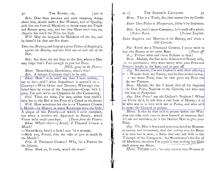
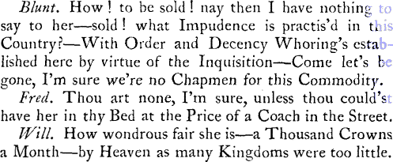
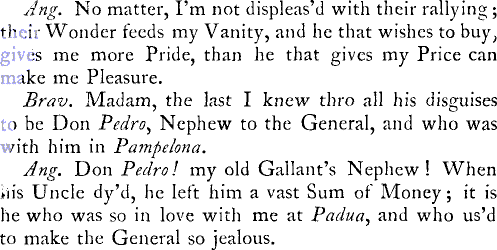

Scenes described in (parentheses) are unnumbered.
During the exile of Charles II a band of cavaliers, prominent amongst whom are Willmore (the Rover), Belvile, Frederick, and Ned Blunt, find themselves at Naples in carnival time. Belvile, who at a siege at Pampluna has rescued a certain Florinda and her brother Don Pedro, now loves the lady, and the tender feeling is reciprocated. Florinda’s father, however, designs her for the elderly Vincentio, whilst her brother would have her marry his friend Antonio, son to the Viceroy. Florinda, her sister Hellena (who is intended for the veil), their cousin Valeria, and duenna Callis surreptitiously visit the carnival, all in masquerade, and there encounter the cavaliers. Florinda arranges to meet Belvile that night at her garden-gate. Meanwhile a picture of Angelica Bianca, a famous courtezan, is publicly exposed, guarded by bravos. Antonio and Pedro dispute who shall give the 1000 crowns she demands, and come to blows. After a short fray Willmore, who has boldly pulled down the picture, is admitted to the house, and declares his love, together with his complete inability to pay the price she requires. Angelica, none the less, overcome with passion, yields to him. Shortly after, meeting Hellena in the street, he commences an ardent courtship, which is detected by the jealous Angelica, who has followed him vizarded. Florinda that night at the garden-gate encounters Willmore, who, having been toping in the town, is far from sober, and her cries at his advances attract her brother and servants, whom she eludes by escaping back to the house. After a brawl, Willmore has to endure the reproaches of Belvile, who has appeared on the scene. During their discussion Antonio makes as about to enter Angelica’s house before which they are, and Willmore, justling him to one side, wounds him. He falls, and the officers who run up at the clash of swords, arrest Belvile, who has returned at the noise, as the assailant, conveying him by Antonio’s orders to the Viceroy’s palace. Antonio, in the course of conversation, resigns Florinda to his rival, and Belvile, disguised as Antonio, obtains Florinda from Don Pedro. At this moment Willmore accosts him, and the Spaniard perceiving his mistake, soon takes his sister off home. Angelica next comes in hot pursuit of Willmore, but they are interrupted by Hellena, dressed as a boy, who tells a tale of the Rover’s amour with another dame and so rouses the jealous courtezan to fury, and the twain promptly part quarrelling. Florinda, meanwhile, who has escaped from her brother, running into an open house to evade detection, finds herself in Ned Blunt’s apartments. Blunt, who is sitting half-clad, and in no pleasant mood owing to his having been tricked of clothes and money and turned into the street by a common cyprian, greets her roughly enough, but is mollified by the present of a diamond ring. His friends and Don Pedro, come to laugh at his sorry case, now force their way into the chamber, and Florinda, whom her brother finally resigns to Belvile, is discovered. She is straightway united to her lover by a convenient priest. Willmore is then surprised by the apparition of Angelica, who, loading him with bitter reproaches for his infidelity, is about to pistol him, when she is disarmed by Antonio, and accordingly parts in a fury of jealous rage, to give place to Hellena who adroitly secures her Rover in the noose of matrimony.
4The entire plan and many details of both parts of The Rover are taken openly and unreservedly from Tom Killigrew’s Thomaso, or The Wanderer, an unacted comedy likewise in two parts, published for the first time in his collected works by Henry Herringman (folio, 1663-4). It is to be noticed, however, that whilst Killigrew’s work is really one long play of ten closely consecutive acts, the scene of which is continually laid in Madrid, without any break in time or action, Mrs. Behn, on the other hand, admirably contrives that each separate part of The Rover is complete and possesses perfect unity in itself, the locale being respectively, and far more suitably, in two several places, Naples and Madrid, rather than confined to the latter city alone. Mrs. Behn, moreover, introduces new characters and a new intrigue in her second part, thus not merely sustaining but even renewing the interest which in Thomaso jades and flags most wearily owing to the author’s prolixity and diffuseness.
Killigrew, a royalist to the core, participated in the protracted exile of Charles II, and devoting this interim to literature, wrote Thomaso whilst at Madrid, probably about the year 1654-5. Although undeniably interesting in a high degree, and not ill written, it shares in no small measure the salient faults of his other productions, boundless and needless verbosity, slowness of action, unconscionable length.
For all its wit and cleverness, such blemishes would, without trenchant cutting, have been more than sufficient to prohibit it from any actual performance, and, indeed, Thomaso may be better described as a dramatic romance than a comedy intended for the boards. Clumsy and gargantuan speeches, which few actors could have even memorized, and none would have ventured to utter on the stage, abound in every scene. This lack of technical acumen (unless, as may well be the case, Killigrew wrote much of these plays without any thought of presentation) is more than surprising in an author so intimately connected with the theatre and, after the Restoration, himself manager of the King’s Company.
Nor is Thomaso without its patent plagiarisms. Doubtless no small part is simply autobiographical adventuring, but, beside many a reminiscence of the later Jacobeans, Killigrew has conveyed entire passages and lyrics wholesale without attempt at disguise. Thus the song, ‘Come hither, you that love,’ Act ii, Scene 3, is from Fletcher’s Captain, Act iv, the scene in Lelia’s chamber. Again, the procedure and orations of Lopus the mountebank are but the flimsiest alterations of Volpone, Act ii, Scene I, nor could Killigrew change Jonson for anything but the worse. He has even gone so far as to name his quack’s spouse Celia, a distinct echo of Corvino’s wife.
In dealing with these two plays Mrs. Behn has done a great deal more than merely fit the pieces for the stage. Almost wholly rewriting them, she has infused into the torpid dialogue no small portion of wit and vivacity, whilst the characters, prone to devolve into little better than prosy and wooden marionettes, with only too apparent wires, are given life, vigour movement, individuality and being. In fact she has made the whole completely and essentially her own. In some cases the same names are retained. We find Phillipo, Sancho, Angelica Bianca, Lucetta, Callis, in Killigrew. But as Willmore is a different thing altogether to Thomaso, so Ned Blunt is an 5 infinitely more entertaining figure than his prototype Edwardo. Amongst other details Killigrew, oddly and stupidly enough, gives his English gentlemen foreign names:—Thomaso, Ferdinando, Rogero, Harrigo*. This jar is duly corrected in The Rover.
Mrs. Behn has further dealt with the Lucetta intrigue in a far more masterly way than Killigrew’s clumsily developed episode. In Thomaso it occupies a considerable space, and becomes both tedious and brutally unpleasant. The apt conclusion of the amour in The Rover with Blunt’s parlous mishap is originally derived from Boccaccio, Second Day, Novel 5, where a certain Andreuccio finds himself in the same unsavoury predicament as the Essex squireen. However, even this was by no means new to the English stage. In Blurt Master Constable, Lazarillo de Tormes, at the house of the courtezan Imperia, meets with precisely the same accident, Act iii, Scene 3, Act iv, Scenes 2 and 3, and it is probable that Mrs. Behn did not go directly to the Decameron but drew upon Middleton, of whom she made very ample use on another occasion, borrowing for The City Heiress no small portion of A Mad World, My Masters, and racily reproducing in extenso therefrom Sir Bounteous Progress, Dick Folly-Wit, the mock grandee, and that most excellent of all burglaries good enough for Fielding at his best.
In dealing with Thomaso Astrea did not hesitate, with manifest advantage, to transfer incidents from Part II to Part I, and vice versa. Correcting, pruning, augmenting, enlivening, rewriting, she may indeed (pace the memory of the merry jester of Charles II) be well said to have clothed dry bones with flesh, and to have given her creation a witty and supple tongue.
* There is a strange commixture here. The character is familiarly addressed as ‘Hal’, the scene is Madrid, and he rejoices in the Milanese (not Italian) nomenclature Arrigo = Henry in that dialect.
The first part of The Rover was produced at the Duke’s House, Dorset Gardens, in the summer of 1677, and licensed for printing on 2 July of the same year. It met, as it fully deserved, with complete success, and remained one of the stock plays of the company. Smith, the original Willmore, and the low comedian Underhill as Blunt were especially renowned in their respective rôles. Another famous Willmore was Will Mountford, of whom Dibdin relates, ‘When he played Mrs. Behn’s dissolute character of The Rover, it was remarked by many, and particularly by Queen Mary, that it was dangerous to see him act, he made vice so alluring.’
Amongst the more notable representations of the eighteenth century we find:— Drury Lane; 18 February, 1703. Willmore by Wilks; Hellena, Mrs. Oldfield; repeated on 15 October of the same year. Haymarket; 20 January, 1707. Willmore by Verbruggen; Blunt, Underhill; Hellena, Mrs. Bracegirdle; Angelica, Mrs. Barry; Florinda, Mrs. Bowman. Drury Lane; 22 April, 1708. Willmore by Wilks; Blunt, Estcourt; Frederick, Cibber; Hellena, Mrs. Oldfield; Angelica, Mrs. Barry; Florinda, Mrs. Porter. Drury Lane; 30 December, 1715. Willmore, Wilks; Blunt, Johnson; Hellena, Mrs. Mountfort; Angelica, Mrs. Porter. Drury Lane; 6 March, 6 1716. Don Pedro, Quin; Frederick, Ryan; Florinda, Mrs. Horton. Lincoln’s Inn Fields; 5 April, 1725. ‘Never acted there.’ Performed for Ryan’s benefit. Willmore, Ryan; Belvile, Quin; Blunt, Spiller; Hellena, Mrs. Bullock; Angelica, Mrs. Parker. Covent Garden; 9 November, 1748. Willmore, Ryan; Blunt, Bridgewater; Hellena, Mrs. Woffington; Angelica, Mrs. Horton. To make this performance more attractive there was also presented ‘a musical entertainment’, entitled, Apollo and Daphne, which had been originally produced at Lincoln’s Inn Fields in 1726. Covent Garden; 19 February, 1757. ‘Not acted twenty years.’ Willmore, Smith; Belvile, Ridout; Frederick, Clarke; Don Antonio, Dyer; Blunt, Shuter; Hellena, Mrs. Woffington; Angelica, Mrs. Hamilton; Florinda, Mrs. Elmy. This, the latest revival, was performed with considerable expense, and proved successful, being repeated no less than ten times during the season. Wilkinson says that Shuter acted Blunt very realistically, and, as the stage directions of Act iii require, stripped to his very drawers.
On 8 March, 1790, J. P. Kemble presented at Drury Lane a pudibond alteration of The Rover, which he dubbed Love in Many Masks (8vo, 1790). It was well received, and acted eight times; in the following season once. Willmore was played by Kemble himself; Belvile, Wroughton; Blunt, Jack Bannister; Stephano, Suett; Hellena, Mrs. Jordan; Angelica, Mrs. Ward; Florinda, Mrs. Powell; Valeria, Mrs. Kemble; Lucetta, Miss Tidswell. It is not entirely worthless from a purely technical point of view, but yet very modest and mediocre. As might well be surmised, the raciness and spirit of The Rover entirely evaporate in the insipidity of emasculation. This is the last recorded performance of Mrs. Behn’s brilliant comedy in any shape.
PROLOGUE,
Written by a Person of Quality.
WITS, like Physicians, never can agree,
When of a different Society;
And Rabel’s Drops were never more cry’d down
By all the Learned Doctors of the Town,
Than a new Play, whose Author is unknown:
Nor can those Doctors with more Malice sue
(And powerful Purses) the dissenting Few,
Than those with an insulting Pride do rail
At all who are not of their own Cabal.
If a Young Poet hit your Humour right,
You judge him then out of Revenge and Spite;
So amongst Men there are ridiculous Elves,
Who Monkeys hate for being too like themselves:
So that the Reason of the Grand Debate,
Why Wit so oft is damn’d, when good Plays take,
Is, that you censure as you love or hate.
Thus, like a learned Conclave, Poets sit
Catholick Judges both of Sense and Wit,
And damn or save, as they themselves think fit.
Yet those who to others Faults are so severe,
Are not so perfect, but themselves may err.
Some write correct indeed, but then the whole
(Bating their own dull Stuff i’th’ Play) is stole:
8 As Bees do suck from Flowers their Honey-dew,
So they rob others, striving to please you.
Some write their Characters genteel and fine,
But then they do so toil for every Line,
That what to you does easy seem, and plain,
Is the hard issue of their labouring Brain.
And some th’ Effects of all their Pains we see,
Is but to mimick good Extempore.
Others by long Converse about the Town,
Have Wit enough to write a leud Lampoon,
But their chief Skill lies in a Baudy Song.
In short, the only Wit that’s now in Fashion
Is but the Gleanings of good Conversation.
As for the Author of this coming Play,
I ask’d him what he thought fit I should say,
In thanks for your good Company to day:
He call’d me Fool, and said it was well known,
You came not here for our sakes, but your own.
New Plays are stuff’d with Wits, and with Debauches,
That croud and sweat like Cits in May-day Coaches.
| MEN. | |
Don Antonio, the Vice-Roy’s Son, |
Mr. Jevorne. |
Don Pedro, a Noble Spaniard, his Friend, |
Mr. Medburne. |
Belvile, an English Colonel in love with Florinda, |
Mr. Betterton. |
Willmore, the ROVER, |
Mr. Smith. |
Frederick, an English Gentleman, and Friend to Belvile and Blunt, |
Mr. Crosbie. |
Blunt, an English Country Gentleman, |
Mr. Underhill. |
Stephano, Servant to Don Pedro, |
Mr. Richards. |
Philippo, Lucetta’s Gallant, |
Mr. Percival. |
Sancho, Pimp to Lucetta, |
Mr. John Lee. |
Risky and Sebastian, two Bravoes to Angelica. |
|
Page to Hellena. |
|
Boy, Page to Belvile. |
|
Blunt’s Man. |
|
Officers and Soldiers. |
|
| WOMEN. | |
Florinda, Sister to Don Pedro, |
Mrs. Betterton. |
Hellena, a gay young Woman design’d for a Nun, and Sister to Florinda, |
Mrs. Barrey. |
Valeria, a Kinswoman to Florinda, |
Mrs. Hughes. |
Angelica Bianca, a famous Curtezan, |
Mrs. Gwin. |
Moretta, her Woman, |
Mrs. Leigh. |
Callis, Governess to Florinda and Hellena, |
Mrs. Norris. |
Lucetta, a jilting Wench, |
Mrs. Gillow. |
| Servants, other Masqueraders, Men and Women. | |
SCENE Naples, in Carnival-time.
Enter Florinda and Hellena.
Flor. What an impertinent thing is a young Girl bred in a Nunnery! How full of Questions! Prithee no more, Hellena; I have told thee more than thou understand’st already.
Hell. The more’s my Grief; I wou’d fain know as much as you, which makes me so inquisitive; nor is’t enough to know you’re a Lover, unless you tell me too, who ’tis you sigh for.
Flor. When you are a Lover, I’ll think you fit for a Secret of that nature.
Hell. ’Tis true, I was never a Lover yet— but I begin to have a shreud Guess, what ’tis to be so, and fancy it very pretty to sigh, and sing, and blush and wish, and dream and wish, and long and wish to see the Man; and when I do, look pale and tremble; just as you did when my Brother brought home the fine English Colonel to see you— what do you call him? Don Belvile.
Flor. Fie, Hellena.
Hell. That Blush betrays you—I am sure ’tis so—or is it Don Antonio the Vice-Roy’s Son?—or perhaps the rich old Don Vincentio, whom my father designs for your Husband?—Why do you blush again?
Flor. With Indignation; and how near soever my Father thinks I am to marrying that hated Object, I shall let him see I understand better what’s due to my Beauty, Birth and Fortune, and more to my Soul, than to obey those unjust Commands.
Hell. Now hang me, if I don’t love thee for that dear Disobedience. I love Mischief strangely, as most of our 11 Sex do, who are come to love nothing else—But tell me, dear Florinda, don’t you love that fine Anglese?—for I vow next to loving him my self, ’twill please me most that you do so, for he is so gay and so handsom.
Flor. Hellena, a Maid design’d for a Nun ought not to be so curious in a Discourse of Love.
Hell. And dost thou think that ever I’ll be a Nun? Or at least till I’m so old, I’m fit for nothing else. Faith no, Sister; and that which makes me long to know whether you love Belvile, is because I hope he has some mad Companion or other, that will spoil my Devotion; nay I’m resolv’d to provide my self this Carnival, if there be e’er a handsom Fellow of my Humour above Ground, tho I ask first.
Flor. Prithee be not so wild.
Hell. Now you have provided your self with a Man, you take no Care for poor me—Prithee tell me, what dost thou see about me that is unfit for Love—have not I a world of Youth? a Humour gay? a Beauty passable? a Vigour desirable? well shap’d? clean limb’d? sweet breath’d? and Sense enough to know how all these ought to be employ’d to the best Advantage: yes, I do and will. Therefore lay aside your Hopes of my Fortune, by my being a Devotee, and tell me how you came acquainted with this Belvile; for I perceive you knew him before he came to Naples.
Flor. Yes, I knew him at the Siege of Pampelona, he was then a Colonel of French Horse, who when the Town was ransack’d, nobly treated my Brother and my self, preserving us from all Insolencies; and I must own, (besides great Obligations) I have I know not what, that pleads kindly for him about my Heart, and will suffer no other to enter—But see my Brother.
Enter Don Pedro, Stephano, with a Masquing Habit, and Callis.
Pedro. Good morrow, Sister. Pray, when saw you your Lover Don Vincentio?
12Flor. I know not, Sir—Callis, when was he here? for I consider it so little, I know not when it was.
Pedro. I have a Command from my Father here to tell you, you ought not to despise him, a Man of so vast a Fortune, and such a Passion for you—Stephano, my things— [Puts on his Masquing Habit.
Flor. A Passion for me! ’tis more than e’er I saw, or had a desire should be known—I hate Vincentio, and I would not have a Man so dear to me as my Brother follow the ill Customs of our Country, and make a Slave of his Sister—And Sir, my Father’s Will, I’m sure, you may divert.
Pedro. I know not how dear I am to you, but I wish only to be rank’d in your Esteem, equal with the English Colonel Belvile—Why do you frown and blush? Is there any Guilt belongs to the Name of that Cavalier?
Flor. I’ll not deny I value Belvile: when I was expos’d to such Dangers as the licens’d Lust of common Soldiers threatned, when Rage and Conquest flew thro the City—then Belvile, this Criminal for my sake, threw himself into all Dangers to save my Honour, and will you not allow him my Esteem?
Pedro. Yes, pay him what you will in Honour—but you must consider Don Vincentio’s Fortune, and the Jointure he’ll make you.
Flor. Let him consider my Youth, Beauty and Fortune; which ought not to be thrown away on his Age and Jointure.
Pedro. ’Tis true, he’s not so young and fine a Gentleman as that Belvile—but what Jewels will that Cavalier present you with? those of his Eyes and Heart?
Hell. And are not those better than any Don Vincentio has brought from the Indies?
Pedro. Why how now! Has your Nunnery-breeding taught you to understand the Value of Hearts and Eyes?
Hell. Better than to believe Vincentio deserves Value 13 from any woman—He may perhaps encrease her Bags, but not her Family.
Pedro. This is fine—Go up to your Devotion, you are not design’d for the Conversation of Lovers.
Hell. Nor Saints yet a while I hope. [Aside.] Is’t not enough you make a Nun of me, but you must cast my Sister away too, exposing her to a worse confinement than a religious Life?
Pedro. The Girl’s mad—Is it a Confinement to be carry’d into the Country, to an antient Villa belonging to the Family of the Vincentio’s these five hundred Years, and have no other Prospect than that pleasing one of seeing all her own that meets her Eyes—a fine Air, large Fields and Gardens, where she may walk and gather Flowers?
Hell. When? By Moon-Light? For I’m sure she dares not encounter with the heat of the Sun; that were a Task only for Don Vincentio and his Indian Breeding, who loves it in the Dog-days—And if these be her daily Divertisements, what are those of the Night? to lie in a wide Moth-eaten Bed-Chamber with Furniture in Fashion in the Reign of King Sancho the First; the Bed that which his Forefathers liv’d and dy’d in.
Pedro. Very well.
Hell. This Apartment (new furbisht and fitted out for the young Wife) he (out of Freedom) makes his Dressing-room; and being a frugal and a jealous Coxcomb, instead of a Valet to uncase his feeble Carcase, he desires you to do that Office—Signs of Favour, I’ll assure you, and such as you must not hope for, unless your Woman be out of the way.
Pedro. Have you done yet?
Hell. That Honour being past, the Giant stretches it self, yawns and sighs a Belch or two as loud as a Musket, throws himself into Bed, and expects you in his foul Sheets, and e’er you can get your self undrest, calls you with a Snore or two— And are not these fine Blessings to a young Lady?
14Pedro. Have you done yet?
Hell. And this man you must kiss, nay, you must kiss none but him too—and nuzle thro his Beard to find his Lips—and this you must submit to for threescore Years, and all for a Jointure.
Pedro. For all your Character of Don Vincentio, she is as like to marry him as she was before.
Hell. Marry Don Vincentio! hang me, such a Wedlock would be worse than Adultery with another Man: I had rather see her in the Hostel de Dieu, to waste her Youth there in Vows, and be a Handmaid to Lazers and Cripples, than to lose it in such a Marriage.
Pedro. You have consider’d, Sister, that Belvile has no Fortune to bring you to, is banisht his Country, despis’d at home, and pity’d abroad.
Hell. What then? the Vice-Roy’s Son is better than that Old Sir Fisty. Don Vincentio! Don Indian! he thinks he’s trading to Gambo still, and wou’d barter himself (that Bell and Bawble) for your Youth and Fortune.
Pedro. Callis, take her hence, and lock her up all this Carnival, and at Lent she shall begin her everlasting Penance in a Monastery.
Hell. I care not, I had rather be a Nun, than be oblig’d to marry as you wou’d have me, if I were design’d for’t.
Pedro. Do not fear the Blessing of that Choice—you shall be a Nun.
Hell. Shall I so? you may chance to be mistaken in my way of Devotion—A Nun! yes I am like to make a fine Nun! I have an excellent Humour for a Grate: No, I’ll have a Saint of my own to pray to shortly, if I like any that dares venture on me. [Aside.
Pedro. Callis, make it your Business to watch this wild Cat. As for you, Florinda, I’ve only try’d you all this while, and urg’d my Father’s Will; but mine is, that you would love Antonio, he is brave and young, and all that can compleat the Happiness of a gallant Maid—This Absence 15 of my Father will give us opportunity to free you from Vincentio, by marrying here, which you must do to morrow.
Flor. To morrow!
Pedro. To morrow, or ’twill be too late—’tis not my Friendship to Antonio, which makes me urge this, but Love to thee, and Hatred to Vincentio—therefore resolve upon’t to morrow.
Flor. Sir, I shall strive to do, as shall become your Sister.
Pedro. I’ll both believe and trust you—Adieu. [Ex. Ped. and Steph.
Hell. As become his Sister!—That is, to be as resolved your way, as he is his— [Hell. goes to Callis.
Flor. I ne’er till now perceiv’d my Ruin near,
I’ve no Defence against Antonio’s Love,
For he has all the Advantages of Nature,
The moving Arguments of Youth and Fortune.
Hell. But hark you, Callis, you will not be so cruel to lock me up indeed: will you?
Call. I must obey the Commands I hate—besides, do you consider what a Life you are going to lead?
Hell. Yes, Callis, that of a Nun: and till then I’ll be indebted a World of Prayers to you, if you let me now see, what I never did, the Divertisements of a Carnival.
Call. What, go in Masquerade? ’twill be a fine farewell to the World I take it—pray what wou’d you do there?
Hell. That which all the World does, as I am told, be as mad as the rest, and take all innocent Freedom—Sister, you’ll go too, will you not? come prithee be not sad—We’ll out-wit twenty Brothers, if you’ll be ruled by me—Come put off this dull Humour with your Clothes, and assume one as gay, and as fantastick as the Dress my Cousin Valeria and I have provided, and let’s ramble.
Flor. Callis, will you give us leave to go?
16Call. I have a youthful Itch of going my self. [Aside.] —Madam, if I thought your Brother might not know it, and I might wait on you, for by my troth I’ll not trust young Girls alone.
Flor. Thou see’st my Brother’s gone already, and thou shalt attend and watch us.
Enter Stephano.
Steph. Madam, the Habits are come, and your Cousin Valeria is drest, and stays for you.
Flor. ’Tis well—I’ll write a Note, and if I chance to see Belvile, and want an opportunity to speak to him, that shall let him know what I’ve resolv’d in favour of him.
Hell. Come, let’s in and dress us. [Exeunt.
Enter Belvile, melancholy, Blunt and Frederick.
Fred. Why, what the Devil ails the Colonel, in a time when all the World is gay, to look like mere Lent thus? Hadst thou been long enough in Naples to have been in love, I should have sworn some such Judgment had befall’n thee.
Belv. No, I have made no new Amours since I came to Naples.
Fred. You have left none behind you in Paris.
Belv. Neither.
Fred. I can’t divine the Cause then; unless the old Cause, the want of Mony.
Blunt. And another old Cause, the want of a Wench— Wou’d not that revive you?
Belv. You’re mistaken, Ned.
Blunt Nay, ’Sheartlikins, then thou art past Cure.
Fred. I have found it out; thou hast renew’d thy Acquaintance with the Lady that cost thee so many Sighs at the Siege of Pampelona—pox on’t, what d’ye call her—her Brother’s a noble Spaniard—Nephew to the dead General—Florinda—ay, Florinda—And will nothing 17 serve thy turn but that damn’d virtuous Woman, whom on my Conscience thou lov’st in spite too, because thou seest little or no possibility of gaining her?
Belv. Thou art mistaken, I have Interest enough in that lovely Virgin’s Heart, to make me proud and vain, were it not abated by the Severity of a Brother, who perceiving my Happiness—
Fred. Has civilly forbid thee the House?
Belv. ’Tis so, to make way for a powerful Rival, the Vice-Roy’s Son, who has the advantage of me, in being a Man of Fortune, a Spaniard, and her Brother’s Friend; which gives him liberty to make his Court, whilst I have recourse only to Letters, and distant Looks from her Window, which are as soft and kind as those which Heav’n sends down on Penitents.
Blunt. Hey day! ’Sheartlikins, Simile! by this Light the Man is quite spoil’d—Frederick, what the Devil are we made of, that we cannot be thus concern’d for a Wench?—’Sheartlikins, our Cupids are like the Cooks of the Camp, they can roast or boil a Woman, but they have none of the fine Tricks to set ’em off, no Hogoes to make the Sauce pleasant, and the Stomach sharp.
Fred. I dare swear I have had a hundred as young, kind and handsom as this Florinda; and Dogs eat me, if they were not as troublesom to me i’th’ Morning as they were welcome o’er night.
Blunt. And yet, I warrant, he wou’d not touch another Woman, if he might have her for nothing.
Belv. That’s thy Joy, a cheap Whore.
Blunt. Why, ’dsheartlikins, I love a frank Soul—When did you ever hear of an honest Woman that took a Man’s Mony? I warrant ’em good ones—But, Gentlemen, you may be free, you have been kept so poor with Parliaments and Protectors, that the little Stock you have is not worth preserving—but I thank my Stars, I have more Grace than to forfeit my Estate by Cavaliering.
18Belv. Methinks only following the Court should be sufficient to entitle ’em to that.
Blunt. ’Sheartlikins, they know I follow it to do it no good, unless they pick a hole in my Coat for lending you Mony now and then; which is a greater Crime to my Conscience, Gentlemen, than to the Common-wealth.
Enter Willmore.
Will. Ha! dear Belvile! noble Colonel!
Belv. Willmore! welcome ashore, my dear Rover!—what happy Wind blew us this good Fortune?
Will. Let me salute you my dear Fred, and then command me—How is’t honest Lad?
Fred. Faith, Sir, the old Complement, infinitely the better to see my dear mad Willmore again—Prithee why camest thou ashore? and where’s the Prince?
Will. He’s well, and reigns still Lord of the watery Element—I must aboard again within a Day or two, and my Business ashore was only to enjoy my self a little this Carnival.
Belv. Pray know our new Friend, Sir, he’s but bashful, a raw Traveller, but honest, stout, and one of us. [Embraces Blunt.
Will. That you esteem him, gives him an Interest here.
Blunt. Your Servant, Sir.
Will. But well— Faith I’m glad to meet you again in a warm Climate, where the kind Sun has its god-like Power still over the Wine and Woman.—Love and Mirth are my Business in Naples; and if I mistake not the Place, here’s an excellent Market for Chapmen of my Humour.
Belv. See here be those kind Merchants of Love you look for.
Enter several Men in masquing Habits, some playing on Musick, others dancing after; Women drest like Curtezans, with Papers pinn’d to their Breasts, and Baskets of Flowers in their Hands.
19Blunt. ’Sheartlikins, what have we here!
Fred. Now the Game begins.
Will. Fine pretty Creatures! may a stranger have leave to look and love?—What’s here—Roses for every Month! [Reads the Paper.
Blunt. Roses for every Month! what means that?
Belv. They are, or wou’d have you think they’re Curtezans, who herein Naples are to be hir’d by the Month.
Will. Kind and obliging to inform us—Pray where do these Roses grow? I would fain plant some of ’em in a Bed of mine.
Wom. Beware such Roses, Sir.
Will. A Pox of fear: I’ll be bak’d with thee between a pair of Sheets, and that’s thy proper Still, so I might but strow such Roses over me and under me—Fair one, wou’d you wou’d give me leave to gather at your Bush this idle Month, I wou’d go near to make some Body smell of it all the Year after.
Belv. And thou hast need of such a Remedy, for thou stinkest of Tar and Rope-ends, like a Dock or Pesthouse.
[The Woman puts herself into the Hands of a Man, and Exit.
Will. Nay, nay, you shall not leave me so.
Belv. By all means use no Violence here.
Will. Death! just as I was going to be damnably in love, to have her led off! I could pluck that Rose out-of his Hand, and even kiss the Bed, the Bush it grew in.
Fred. No Friend to Love like a long Voyage at Sea.
Blunt. Except a Nunnery, Fred.
Will. Death! but will they not be kind, quickly be kind? Thou know’st I’m no tame Sigher, but a rampant Lion of the Forest.
Two Men drest all over with Horns of several sorts, making Grimaces at one another, with Papers pinn’d on their Backs, advance from the farther end of the Scene.
20Belv. Oh the fantastical Rogues, how they are dress’d! ’tis a Satir against the whole Sex.
Will. Is this a Fruit that grows in this warm Country?
Belv. Yes: ’Tis pretty to see these Italian start, swell, and stab at the Word Cuckold, and yet stumble at Horns on every Threshold.
Will.
See what’s on their Back—Flowers for every Night.
[Reads.
—Ah Rogue! And more sweet than Roses of ev’ry Month! This is a
Gardiner of Adam’s own breeding.
[They dance.
Belv. What think you of those grave People?—is a Wake in Essex half so mad or extravagant?
Will. I like their sober grave way, ’tis a kind of legal authoriz’d Fornication, where the Men are not chid for’t, nor the Women despis’d, as amongst our dull English; even the Monsieurs want that part of good Manners.
Belv. But here in Italy a Monsieur is the humblest best-bred Gentleman—Duels are so baffled by Bravo’s that an age shews not one, but between a Frenchman and a Hang-man, who is as much too hard for him on the Piazza, as they are for a Dutchman on the new Bridge— But see another Crew.
Enter Florinda, Hellena, and Valeria, drest like Gipsies; Callis and Stephano, Lucetta, Phillippo and Sancho in Masquerade.
Hell. Sister, there’s your Englishman, and with him a handsom proper Fellow—I’ll to him, and instead of telling him his Fortune, try my own.
Will. Gipsies, on my Life—Sure these will prattle if a Man cross their Hands. [Goes to Hellena] —Dear pretty (and I hope) young Devil, will you tell an amorous Stranger what Luck he’s like to have?
Hell. Have a care how you venture with me, Sir, lest I pick your Pocket, which will more vex your English Humour, than an Italian Fortune will please you.
21Will. How the Devil cam’st thou to know my Country and Humour?
Hell. The first I guess by a certain forward Impudence, which does not displease me at this time; and the Loss of your Money will vex you, because I hope you have but very little to lose.
Will. Egad Child, thou’rt i’th’ right; it is so little, I dare not offer it thee for a Kindness—But cannot you divine what other things of more value I have about me, that I would more willingly part with?
Hell. Indeed no, that’s the Business of a Witch, and I am but a Gipsy yet—Yet, without looking in your Hand, I have a parlous Guess, ’tis some foolish Heart you mean, an inconstant English Heart, as little worth stealing as your Purse.
Will. Nay, then thou dost deal with the Devil, that’s certain—Thou hast guess’d as right as if thou hadst been one of that Number it has languisht for—I find you’ll be better acquainted with it; nor can you take it in a better time, for I am come from Sea, Child; and Venus not being propitious to me in her own Element, I have a world of Love in store—Wou’d you would be good-natur’d, and take some on’t off my Hands.
Hell. Why—I could be inclin’d that way—but for a foolish Vow I am going to make—to die a Maid.
Will. Then thou art damn’d without Redemption; and as I am a good Christian, I ought in charity to divert so wicked a design—therefore prithee, dear Creature, let me know quickly when and where I shall begin to set a helping hand to so good a Work.
Hell. If you should prevail with my tender Heart (as I begin to fear you will, for you have horrible loving Eyes) there will be difficulty in’t that you’ll hardly undergo for my sake.
Will. Faith, Child, I have been bred in Dangers, and wear a Sword that has been employ’d in a worse Cause, 22 than for a handsom kind Woman—Name the Danger—let it be any thing but a long Siege, and I’ll undertake it.
Hell. Can you storm?
Will. Oh, most furiously.
Hell. What think you of a Nunnery-wall? for he that wins me, must gain that first.
Will. A Nun! Oh how I love thee for’t! there’s no Sinner like a young Saint—Nay, now there’s no denying me: the old Law had no Curse (to a Woman) like dying a Maid; witness Jephtha’s Daughter.
Hell. A very good Text this, if well handled; and I perceive, Father Captain, you would impose no severe Penance on her who was inclin’d to console her self before she took Orders.
Will. If she be young and handsom.
Hell. Ay, there’s it—but if she be not—
Will. By this Hand, Child, I have an implicit Faith, and dare venture on thee with all Faults—besides, ’tis more meritorious to leave the World when thou hast tasted and prov’d the Pleasure on’t; then ’twill be a Virtue in thee, which now will be pure Ignorance.
Hell. I perceive, good Father Captain, you design only to make me fit for Heaven—but if on the contrary you should quite divert me from it, and bring me back to the World again, I should have a new Man to seek I find; and what a grief that will be—for when I begin, I fancy I shall love like any thing: I never try’d yet.
Will. Egad, and that’s kind—Prithee, dear Creature, give me Credit for a Heart, for faith, I’m a very honest Fellow—Oh, I long to come first to the Banquet of Love; and such a swinging Appetite I bring—Oh, I’m impatient. Thy Lodging, Sweetheart, thy Lodging, or I’m a dead man.
Hell. Why must we be either guilty of Fornication or Murder, if we converse with you Men?—And is there no difference between leave to love me, and leave to lie with me?
23Will. Faith, Child, they were made to go together.
Lucet. Are you sure this is the Man? [Pointing to Blunt.
Sancho. When did I mistake your Game?
Lucet. This is a stranger, I know by his gazing; if he be brisk he’ll venture to follow me; and then, if I understand my Trade, he’s mine: he’s English too, and they say that’s a sort of good natur’d loving People, and have generally so kind an opinion of themselves, that a Woman with any Wit may flatter ’em into any sort of Fool she pleases.
Blunt. ’Tis so—she is taken—I have Beauties which my false Glass at home did not discover.
[She often passes by Blunt and gazes on him; he struts, and cocks, and walks, and gazes on her.
Flor. This Woman watches me so, I shall get no Opportunity to discover my self to him, and so miss the intent of my coming—But as I was saying, Sir—by this Line you should be a Lover. [Looking in his Hand.
Belv. I thought how right you guess’d, all Men are in love, or pretend to be so—Come, let me go, I’m weary of this fooling. [Walks away.
Flor. I will not, till you have confess’d whether the Passion that you have vow’d Florinda be true or false. [She holds him, he strives to get from her.
Belv. Florinda! [Turns quick towards her.
Flor. Softly.
Belv. Thou hast nam’d one will fix me here for ever.
Flor. She’ll be disappointed then, who expects you this Night at the Garden-gate, and if you’ll fail not—as let me see the other Hand—you will go near to do—she vows to die or make you happy. [Looks on Callis, who observes ’em.
Belv. What canst thou mean?
Flor. That which I say—Farewel. [Offers to go.
Belv. Oh charming Sybil, stay, complete that Joy, which, as it is, will turn into Distraction!—Where must I be? at the Garden-gate? I know it—at night you say— I’ll sooner forfeit Heaven than disobey.
24Enter Don Pedro and other Masquers, and pass over the Stage.
Call. Madam, your Brother’s here.
Flor. Take this to instruct you farther. [Gives him a Letter, and goes off.
Fred. Have a care, Sir, what you promise; this may be a Trap laid by her Brother to ruin you.
Belv. Do not disturb my Happiness with Doubts. [Opens the Letter.
Will. My dear pretty Creature, a Thousand Blessings on thee; still in this Habit, you say, and after Dinner at this Place.
Hell. Yes, if you will swear to keep your Heart, and not bestow it between this time and that.
Will. By all the little Gods of Love I swear, I’ll leave it with you; and if you run away with it, those Deities of Justice will revenge me. [Ex. all the Women except Lucetta.
Fred. Do you know the Hand?
Belv. ’Tis Florinda’s. All Blessings fall upon the virtuous Maid.
Fred. Nay, no Idolatry, a sober Sacrifice I’ll allow you.
Belv. Oh Friends! the welcom’st News, the softest Letter!—nay, you shall see it; and could you now be serious, I might be made the happiest Man the Sun shines on.
Will. The Reason of this mighty Joy.
Belv. See how kindly she invites me to deliver her from the threaten’d Violence of her Brother—will you not assist me?
Will. I know not what thou mean’st, but I’ll make one at any Mischief where a Woman’s concerned—but she’ll be grateful to us for the Favour, will she not?
Belv. How mean you?
Will. How should I mean? Thou know’st there’s but one way for a Woman to oblige me.
Belv. Don’t prophane—the Maid is nicely virtuous.
25Will. Who pox, then she’s fit for nothing but a Husband; let her e’en go, Colonel.
Fred. Peace, she’s the Colonel’s Mistress, Sir.
Will. Let her be the Devil; if she be thy Mistress, I’ll serve her—name the way.
Belv. Read here this Postscript. [Gives him a Letter.
Will. [Reads.] At Ten at night—at the Garden-Gate—of which, if I cannot get the Key, I will contrive a way over the Wall—come attended with a Friend or two.—Kind heart, if we three cannot weave a String to let her down a Garden-Wall,’twere pity but the Hangman wove one for us all.
Fred. Let her alone for that: your Woman’s Wit, your fair kind Woman, will out-trick a Brother or a Jew, and contrive like a Jesuit in Chains—but see, Ned Blunt is stoln out after the Lure of a Damsel. [Ex. Blunt and Lucet.
Belv. So he’ll scarce find his way home again, unless we get him cry’d by the Bell-man in the Market-place, and ’twou’d sound prettily—a lost English Boy of Thirty.
Fred. I hope ’tis some common crafty Sinner, one that will fit him; it may be she’ll sell him for Peru, the Rogue’s sturdy and would work well in a Mine; at least I hope she’ll dress him for our Mirth; cheat him of all, then have him well-favour’dly bang’d, and turn’d out naked at Midnight.
Will. Prithee what Humour is he of, that you wish him so well?
Belv. Why, of an English Elder Brother’s Humour, educated in a Nursery, with a Maid to tend him till Fifteen, and lies with his Grand-mother till he’s of Age; one that knows no Pleasure beyond riding to the next Fair, or going up to London with his right Worshipful Father in Parliament-time; wearing gay Clothes, or making honourable Love to his Lady Mother’s Landry-Maid; gets drunk at a Hunting-Match, and ten to one then gives some Proofs of his Prowess—A pox upon him, he’s our 26 Banker, and has all our Cash about him, and if he fail we are all broke.
Fred. Oh let him alone for that matter, he’s of a damn’d stingy Quality, that will secure our Stock. I know not in what Danger it were indeed, if the Jilt should pretend she’s in love with him, for ’tis a kind believing Coxcomb; otherwise if he part with more than a Piece of Eight—geld him: for which offer he may chance to be beaten, if she be a Whore of the first Rank.
Belv. Nay the Rogue will not be easily beaten, he’s stout enough; perhaps if they talk beyond his Capacity, he may chance to exercise his Courage upon some of them; else I’m sure they’ll find it as difficult to beat as to please him.
Will. ’Tis a lucky Devil to light upon so kind a Wench!
Fred. Thou hadst a great deal of talk with thy little Gipsy, coud’st thou do no good upon her? for mine was hard-hearted.
Will. Hang her, she was some damn’d honest Person of Quality, I’m sure, she was so very free and witty. If her Face be but answerable to her Wit and Humour, I would be bound to Constancy this Month to gain her. In the mean time, have you made no kind Acquaintance since you came to Town?—You do not use to be honest so long, Gentlemen.
Fred. Faith Love has kept us honest, we have been all fir’d with a Beauty newly come to Town, the famous Paduana Angelica Bianca.
Will. What, the Mistress of the dead Spanish General?
Belv. Yes, she’s now the only ador’d Beauty of all the Youth in Naples, who put on all their Charms to appear lovely in her sight, their Coaches, Liveries, and themselves, all gay, as on a Monarch’s Birth-Day, to attract the Eyes of this fair Charmer, while she has the Pleasure to behold all languish for her that see her.
Fred. ’Tis pretty to see with how much Love the Men regard her, and how much Envy the Women.
27Will. What Gallant has she?
Belv. None, she’s exposed to Sale, and four Days in the Week she’s yours—for so much a Month.
Will. The very Thought of it quenches all manner of Fire in me—yet prithee let’s see her.
Belv. Let’s first to Dinner, and after that we’ll pass the Day as you please—but at Night ye must all be at my Devotion.
Will. I will not fail you. [Exeunt.
Enter Belvile and Frederick in Masquing-Habits, and Willmore in his own Clothes, with a Vizard in his Hand.
Will. But why thus disguis’d and muzzl’d?
Belv. Because whatever Extravagances we commit in these Faces, our own may not be oblig’d to answer ’em.
Will. I should have chang’d my Eternal Buff too: but no matter, my little Gipsy wou’d not have found me out then: for if she should change hers, it is impossible I should know her, unless I should hear her prattle—A Pox on’t, I cannot get her out of my Head: Pray Heaven, if ever I do see her again, she prove damnable ugly, that I may fortify my self against her Tongue.
Belv. Have a care of Love, for o’ my conscience she was not of a Quality to give thee any hopes.
Will. Pox on ’em, why do they draw a Man in then? She has play’d with my Heart so, that ’twill never lie still till I have met with some kind Wench, that will play the Game out with me—Oh for my Arms full of soft, white, kind—Woman! such as I fancy Angelica.
Belv. This is her House, if you were but in stock to get admittance; they have not din’d yet; I perceive the Picture is not out.
28Enter Blunt.
Will. I long to see the Shadow of the fair Substance, a Man may gaze on that for nothing.
Blunt. Colonel, thy Hand—and thine, Fred. I have been an Ass, a deluded Fool, a very Coxcomb from my Birth till this Hour, and heartily repent my little Faith.
Belv. What the Devil’s the matter with thee Ned?
Blunt. Oh such a Mistress, Fred, such a Girl!
Will. Ha! where?
Fred. Ay where!
Blunt. So fond, so amorous, so toying and fine! and all for sheer Love, ye Rogue! Oh how she lookt and kiss’d! and sooth’d my Heart from my Bosom. I cannot think I was awake, and yet methinks I see and feel her Charms still—Fred.—Try if she have not left the Taste of her balmy Kisses upon my Lips— [Kisses him.
Belv. Ha, ha, ha!
Will. Death Man, where is she?
Blunt. What a Dog was I to stay in dull England so long—How have I laught at the Colonel when he sigh’d for Love! but now the little Archer has reveng’d him, and by his own Dart, I can guess at all his Joys, which then I took for Fancies, mere Dreams and Fables—Well, I’m resolved to sell all in Essex, and plant here for ever.
Belv. What a Blessing ’tis, thou hast a Mistress thou dar’st boast of; for I know thy Humour is rather to have a proclaim’d Clap, than a secret Amour.
Will. Dost know her Name?
Blunt.
Her Name? No,’sheartlikins: what care I for Names?—
She’s fair, young, brisk and kind, even to ravishment: and what a Pox
care I for knowing her by another Title?
Will. Didst give her anything?
Blunt. Give her!—Ha, ha, ha! why, she’s a Person of Quality—That’s a good one, give her! ’sheartlikins dost think such Creatures are to be bought? Or are we provided for such a Purchase? Give her, quoth ye? Why she presented me with this Bracelet, for the Toy of a 29 Diamond I us’d to wear: No, Gentlemen, Ned Blunt is not every Body—She expects me again to night.
Will. Egad that’s well; we’ll all go.
Blunt. Not a Soul: No, Gentlemen, you are Wits; I am a dull Country Rogue, I.
Fred. Well, Sir, for all your Person of Quality, I shall be very glad to understand your Purse be secure; ’tis our whole Estate at present, which we are loth to hazard in one Bottom: come, Sir, unload.
Blunt. Take the necessary Trifle, useless now to me, that am belov’d by such a Gentlewoman—’sheartlikins Money! Here take mine too.
Fred. No, keep that to be cozen’d, that we may laugh.
Will. Cozen’d!—Death! wou’d I cou’d meet with one, that wou’d cozen me of all the Love I cou’d spare to night.
Fred. Pox ’tis some common Whore upon my Life.
Blunt. A Whore! yes with such Clothes! such Jewels! such a House! such Furniture, and so attended! a Whore!
Belv. Why yes, Sir, they are Whores, tho they’ll neither entertain you with Drinking, Swearing, or Baudy; are Whores in all those gay Clothes, and right Jewels; are Whores with great Houses richly furnisht with Velvet Beds, Store of Plate, handsome Attendance, and fine Coaches, are Whores and errant ones.
Will. Pox on’t, where do these fine Whores live?
Belv. Where no Rogue in Office yclep’d Constables dare give ’em laws, nor the Wine-inspired Bullies of the Town break their Windows; yet they are Whores, tho this Essex Calf believe them Persons of Quality.
Blunt. ’Sheartlikins, y’are all Fools, there are things about this Essex Calf, that shall take with the Ladies, beyond all your Wits and Parts—This Shape and Size, Gentlemen, are not to be despis’d; my Waste tolerably long, with other inviting Signs, that shall be nameless.
Will. Egad I believe he may have met with some Person of Quality that may be kind to him.
30Belv. Dost thou perceive any such tempting things about him, should make a fine Woman, and of Quality, pick him out from all Mankind, to throw away her Youth and Beauty upon, nay, and her dear Heart too?—no, no, Angelica has rais’d the Price too high.
Will. May she languish for Mankind till she die, and be damn’d for that one Sin alone.
Enter two Bravoes, and hang up a great Picture of Angelica’s, against the Balcony, and two little ones at each side of the Door.
Belv. See there the fair Sign to the Inn, where a Man may lodge that’s Fool enough to give her Price. [Will. gazes on the Picture.
Blunt. ’Sheartlikins, Gentlemen, what’s this?
Belv. A famous Curtezan that’s to be sold.
Blunt.A How! to be sold! nay then I have nothing to say to her—sold! what Impudence is practis’d in this Country?—With Order and Decency Whoring’s established here by virtue of the Inquisition—Come let’s be gone, I’m sure we’re no Chapmen for this Commodity.
Fred. Thou art none, I’m sure, unless thou could’st have her in thy Bed at the Price of a Coach in the Street.
Will. How wondrous fair she is—a Thousand Crowns a Month—by Heaven as many Kingdoms were too little. A plague of this Poverty—of which I ne’er complain, but when it hinders my Approach to Beauty, which Virtue ne’er could purchase. [Turns from the Picture.
Blunt.
What’s this?— [Reads] A Thousand
Crowns a Month!
—’Sheartlikins, here’s a Sum! sure ’tis a mistake.
—Hark you, Friend, does she take or give so much by the Month!
Fred. A Thousand Crowns! Why, ’tis a Portion for the Infanta.
Blunt. Hark ye, Friends, won’t she trust?
31Brav. This is a Trade, Sir, that cannot live by Credit.
Enter Don Pedro in Masquerade, follow’d by Stephano.
Belv. See, here’s more Company, let’s walk off a while.
[Pedro Reads. [Exeunt English.
Enter Angelica and Moretta in the Balcony, and draw a Silk Curtain.
Ped. Fetch me a Thousand Crowns, I never wish to buy this Beauty at an easier Rate. [Passes off.
Ang. Prithee what said those Fellows to thee?
Brav. Madam, the first were Admirers of Beauty only, but no purchasers; they were merry with your Price and Picture, laught at the Sum, and so past off.
Ang.B No matter, I’m not displeas’d with their rallying; their Wonder feeds my Vanity, and he that wishes to buy, gives me more Pride, than he that gives my Price can make me Pleasure.
Brav. Madam, the last I knew thro all his disguises to be Don Pedro, Nephew to the General, and who was with him in Pampelona.
Ang. Don Pedro! my old Gallant’s Nephew! When his Uncle dy’d, he left him a vast Sum of Money; it is he who was so in love with me at Padua, and who us’d to make the General so jealous.
Moret. Is this he that us’d to prance before our Window and take such care to shew himself an amorous Ass? if I am not mistaken, he is the likeliest Man to give your Price.
Ang. The Man is brave and generous, but of an Humour so uneasy and inconstant, that the victory over his Heart is as soon lost as won; a Slave that can add little to the Triumph of the Conqueror: but inconstancy’s the Sin of all Mankind, therefore I’m resolv’d that nothing but Gold shall charm my Heart.
Moret. I’m glad on’t; ’tis only interest that Women of 32 our Profession ought to consider: tho I wonder what has kept you from that general Disease of our Sex so long, I mean that of being in love.
Ang. A kind, but sullen Star, under which I had the Happiness to be born; yet I have had no time for Love; the bravest and noblest of Mankind have purchas’d my Favours at so dear a Rate, as if no Coin but Gold were current with our Trade—But here’s Don Pedro again, fetch me my Lute—for ’tis for him or Don Antonio the Vice-Roy’s Son, that I have spread my Nets.
Enter at one Door Don Pedro, and Stephano; Don Antonio and Diego [his page], at the other Door, with People following him in Masquerade, antickly attir’d, some with Musick: they both go up to the Picture.
Ant. A thousand Crowns! had not the Painter flatter’d her, I should not think it dear.
Pedro. Flatter’d her! by Heaven he cannot. I have seen the Original, nor is there one Charm here more than adorns her Face and Eyes; all this soft and sweet, with a certain languishing Air, that no Artist can represent.
Ant. What I heard of her Beauty before had fir’d my Soul, but this confirmation of it has blown it into a flame.
Pag. Sir, I have known you throw away a Thousand Crowns on a worse Face, and tho y’ are near your Marriage, you may venture a little Love here; Florinda—will not miss it.
Pedro. Ha! Florinda! Sure ’tis Antonio. [aside.
Ant. Florinda! name not those distant Joys, there’s not one thought of her will check my Passion here.
Pedro. Florinda scorn’d! and all my Hopes defeated of the Possession of Angelica! [A noise of a Lute above. Ant. gazes up.] Her Injuries by Heaven he shall not boast of. [Song to a Lute above.
33When Damon first began to love,
He languisht in a soft Desire,
And knew not how the Gods to move,
To lessen or increase his Fire,
For Cælia in her charming Eyes
Wore all Love’s Sweet, and all his Cruelties.
But as beneath a Shade he lay,
Weaving of Flow’rs for Cælia’s Hair,
She chanc’d to lead her Flock that way,
And saw the am’rous Shepherd there.
She gaz’d around upon the Place,
And saw the Grove (resembling Night)
To all the Joys of Love invite,
Whilst guilty Smiles and Blushes drest her Face.
At this the bashful Youth all Transport grew,
And with kind Force he taught the Virgin how
To yield what all his Sighs cou’d never do.
Ant. By Heav’n she’s charming fair!
[Angelica throws open the Curtains, and bows to Antonio, who pulls off his Vizard, and bows and blows up Kisses. Pedro unseen looks in his Face.
Pedro. ’Tis he, the false Antonio!
Ant. Friend, where must I pay my offering of Love? [To the Bravo.] My Thousand Crowns I mean.
Pedro. That Offering I have design’d to make,
And yours will come too late.
Ant. Prithee be gone, I shall grow angry else,
And then thou art not safe.
Pedro. My Anger may be fatal, Sir, as yours;
And he that enters here may prove this Truth.
Ant. I know not who thou art, but I am sure thou’rt worth my killing, and aiming at Angelica. [They draw and fight.
Enter Willmore and Blunt, who draw and part ’em.
Blunt. ’Sheartlikins, here’s fine doings.
Will. Tilting for the Wench I’m sure—nay gad, if that wou’d win her, I have as good a Sword as the best of ye—Put up—put up, and take another time and place, for this is design’d for Lovers only. [They all put up.
Pedro. We are prevented; dare you meet me to morrow on the Molo?
For I’ve a Title to a better quarrel,
That of Florinda, in whose credulous Heart
Thou’st made an Int’rest, and destroy’d my Hopes.
Ant.
Dare?
I’ll meet thee there as early as the Day.
Pedro. We will come thus disguis’d, that whosoever chance to get the better, he may escape unknown.
Ant. It shall be so. [Ex. Pedro and Stephano.] Who shou’d this Rival be? unless the English Colonel, of whom I’ve often heard Don Pedro speak; it must be he, and time he were removed, who lays a Claim to all my Happiness.
[Willmore having gaz’d all this while on the Picture, pulls down a little one.
Will. This posture’s loose and negligent,
The sight on’t wou’d beget a warm desire
In Souls, whom Impotence and Age had chill’d.
—This must along with me.
Brav. What means this rudeness, Sir?—restore the Picture.
Ant. Ha! Rudeness committed to the fair Angelica!—Restore the Picture, Sir.
Will. Indeed I will not, Sir.
Ant. By Heav’n but you shall.
35Will. Nay, do not shew your Sword; if you do, by this dear Beauty—I will shew mine too.
Ant. What right can you pretend to’t?
Will. That of Possession which I will maintain—you perhaps have 1000 Crowns to give for the Original.
Ant. No matter, Sir, you shall restore the Picture.
Ang. Oh, Moretta! what’s the matter? [Ang. and Moret. above.
Ant. Or leave your Life behind.
Will. Death! you lye—I will do neither.
Ang. Hold, I command you, if for me you fight.
[They fight, the Spaniards join with Antonio, Blunt laying on like mad. They leave off and bow.
Will. How heavenly fair she is!—ah Plague of her Price.
Ang. You Sir in Buff, you that appear a Soldier, that first began this Insolence.
Will. ’Tis true, I did so, if you call it Insolence for a Man to preserve himself; I saw your charming Picture, and was wounded: quite thro my Soul each pointed Beauty ran; and wanting a Thousand Crowns to procure my Remedy, I laid this little Picture to my Bosom—which if you cannot allow me, I’ll resign.
Ang. No, you may keep the Trifle.
Ant. You shall first ask my leave, and this. [Fight again as before.
Enter Belv. and Fred. who join with the English.
Ang. Hold; will you ruin me?—Biskey, Sebastian, part them. [The Spaniards are beaten off.
Moret. Oh Madam, we’re undone, a pox upon that rude Fellow, he’s set on to ruin us: we shall never see good days, till all these fighting poor Rogues are sent to the Gallies.
Enter Belvile, Blunt and Willmore, with his shirt bloody.
Blunt. ’Sheartlikins, beat me at this Sport, and I’ll ne’er wear Sword more.
36Belv. The Devil’s in thee for a mad Fellow, thou art always one at an unlucky Adventure.—Come, let’s be gone whilst we’re safe, and remember these are Spaniards, a sort of People that know how to revenge an Affront.
Fred. You bleed; I hope you are not wounded. [To Will.
Will. Not much:—a plague upon your Dons, if they fight no better they’ll ne’er recover Flanders.—What the Devil was’t to them that I took down the Picture?
Blunt. Took it! ’Sheartlikins, we’ll have the great one too; ’tis ours by Conquest.—Prithee, help me up, and I’ll pull it down.—
Ang. Stay, Sir, and e’er you affront me further, let me know how you durst commit this Outrage—To you I speak, Sir, for you appear like a Gentleman.
Will. To me, Madam?—Gentlemen, your Servant. [Belv. stays him.
Belv. Is the Devil in thee? Do’st know the danger of entring the house of an incens’d Curtezan?
Will. I thank you for your care—but there are other matters in hand, there are, tho we have no great Temptation.—Death! let me go.
Fred. Yes, to your Lodging, if you will, but not in here.—Damn these gay Harlots—by this Hand I’ll have as sound and handsome a Whore for a Patacoone.—Death, Man, she’ll murder thee.
Will. Oh! fear me not, shall I not venture where a Beauty calls? a lovely charming Beauty? for fear of danger! when by Heaven there’s none so great as to long for her, whilst I want Money to purchase her.
Fred. Therefore ’tis loss of time, unless you had the thousand Crowns to pay.
Will. It may be she may give a Favour, at least I shall have the pleasure of saluting her when I enter, and when I depart.
Belv. Pox, she’ll as soon lie with thee, as kiss thee, and sooner stab than do either—you shall not go.
37Ang. Fear not, Sir, all I have to wound with, is my Eyes.
Blunt. Let him go, ’Sheartlikins, I believe the Gentle-woman means well.
Belv. Well, take thy Fortune, we’ll expect you in the next Street.—Farewell Fool,—farewell—
Will. B’ye Colonel— [Goes in.
Fred. The Rogue’s stark mad for a Wench. [Exeunt.
Enter Willmore, Angelica, and Moretta.
Ang. Insolent Sir, how durst you pull down my Picture?
Will. Rather, how durst you set it up, to tempt poor amorous Mortals with so much Excellence? which I find you have but too well consulted by the unmerciful price you set upon’t.—Is all this Heaven of Beauty shewn to move Despair in those that cannot buy? and can you think the effects of that Despair shou’d be less extravagant than I have shewn?
Ang. I sent for you to ask my Pardon, Sir, not to aggravate your Crime.—I thought I shou’d have seen you at my Feet imploring it.
Will. You are deceived, I came to rail at you, and talk such Truths, too, as shall let you see the Vanity of that Pride, which taught you how to set such a Price on Sin. For such it is, whilst that which is Love’s due is meanly barter’d for.
Ang. Ha, ha, ha, alas, good Captain, what pity ’tis your edifying Doctrine will do no good upon me—Moretta, fetch the Gentleman a Glass, and let him survey himself, to see what Charms he has,—and guess my Business. [Aside in a soft tone.
Moret. He knows himself of old, I believe those Breeches and he have been acquainted ever since he was beaten at Worcester.
38Ang. Nay, do not abuse the poor Creature.—
Moret. Good Weather-beaten Corporal, will you march off? we have no need of your Doctrine, tho you have of our Charity; but at present we have no Scraps, we can afford no kindness for God’s sake; in fine, Sirrah, the Price is too high i’th’ Mouth for you, therefore troop, I say.
Will. Here, good Fore-Woman of the Shop, serve me, and I’ll be gone.
Moret. Keep it to pay your Landress, your Linen stinks of the Gun-Room; for here’s no selling by Retail.
Will. Thou hast sold plenty of thy stale Ware at a cheap Rate.
Moret. Ay, the more silly kind Heart I, but this is an Age wherein Beauty is at higher Rates.—In fine, you know the price of this.
Will. I grant you ’tis here set down a thousand Crowns a Month—Baud, take your black Lead and sum it up, that I may have a Pistole-worth of these vain gay things, and I’ll trouble you no more.
Moret. Pox on him, he’ll fret me to Death:—abominable Fellow, I tell thee, we only sell by the whole Piece.
Will. ’Tis very hard, the whole Cargo or nothing—Faith, Madam, my Stock will not reach it, I cannot be your Chapman.—Yet I have Countrymen, in Town, Merchants of Love, like me; I’ll see if they’l put for a share, we cannot lose much by it, and what we have no use for, we’ll sell upon the Friday’s Mart, at—Who gives more? I am studying, Madam, how to purchase you, tho at present I am unprovided of Money.
Ang. Sure, this from any other Man would anger me—nor shall he know the Conquest he has made—Poor angry Man, how I despise this railing.
Will. Yes, I am poor—but I’m a Gentleman,
And one that scorns this Baseness which you practise.
Poor as I am, I would not sell my self,
No, not to gain your charming high-priz’d Person.
39Tho I admire you strangely for your Beauty,
Yet I contemn your Mind.
—And yet I wou’d at any rate enjoy you;
At your own rate—but cannot—See here
The only Sum I can command on Earth;
I know not where to eat when this is gone:
Yet such a Slave I am to Love and Beauty,
This last reserve I’ll sacrifice to enjoy you.
—Nay, do not frown, I know you are to be bought,
And wou’d be bought by me, by me,
For a mean trifling Sum, if I could pay it down.
Which happy knowledge I will still repeat,
And lay it to my Heart, it has a Virtue in’t,
And soon will cure those Wounds your Eyes have made.
—And yet—there’s something so divinely powerful there—
Nay, I will gaze—to let you see my Strength. [Holds her, looks on her, and pauses and sighs.
By Heaven, bright Creature—I would not for the World
Thy Fame were half so fair as is thy Face. [Turns her away from him.
Ang. His words go thro me to the very Soul. [Aside.] —If you have nothing else to say to me.
Will. Yes, you shall hear how infamous you are—
For which I do not hate thee:
But that secures my Heart, and all the Flames it feels
Are but so many Lusts,
I know it by their sudden bold intrusion.
The Fire’s impatient and betrays, ’tis false—
For had it been the purer Flame of Love,
I should have pin’d and languished at your Feet,
E’er found the Impudence to have discover’d it.
I now dare stand your Scorn, and your Denial.
Moret. Sure she’s bewitcht, that she can stand thus tamely, and hear his saucy railing.—Sirrah, will you be gone?
Ang. How dare you take this liberty?—Withdraw. [To Moret.] 40 —Pray, tell me, Sir, are not you guilty of the same mercenary Crime? When a Lady is proposed to you for a Wife, you never ask, how fair, discreet, or virtuous she is; but what’s her Fortune—which if but small, you cry—She will not do my business—and basely leave her, tho she languish for you.—Say, is not this as poor?
Will. It is a barbarous Custom, which I will scorn to defend in our Sex, and do despise in yours.
Ang. Thou art a brave Fellow! put up thy Gold, and know,
That were thy Fortune large, as is thy Soul,
Thou shouldst not buy my Love,
Couldst thou forget those mean Effects of Vanity,
Which set me out to sale; and as a Lover, prize
My yielding Joys.
Canst thou believe they’l be entirely thine,
Without considering they were mercenary?
Will. I cannot tell, I must bethink me first—ha, Death, I’m going to believe her. [Aside.
Ang. Prithee, confirm that Faith—or if thou canst not—flatter me a little, ’twill please me from thy Mouth.
Will. Curse on thy charming Tongue! dost thou return
My feign’d Contempt with so much subtilty? [Aside.
Thou’st found the easiest way into my Heart,
Tho I yet know that all thou say’st is false. [Turning from her in a Rage.
Ang. By all that’s good ’tis real,
I never lov’d before, tho oft a Mistress.
—Shall my first Vows be slighted?
Will. What can she mean? [Aside.
Ang. I find you cannot credit me. [In an angry tone.
Will. I know you take me for an errant Ass,
An Ass that may be sooth’d into Belief,
And then be us’d at pleasure.
—But, Madam I have been so often cheated
By perjur’d, soft, deluding Hypocrites,
41That I’ve no Faith left for the cozening Sex,
Especially for Women of your Trade.
Ang. The low esteem you have of me, perhaps
May bring my Heart again:
For I have Pride that yet surmounts my Love. [She turns with Pride, he holds her.
Will. Throw off this Pride, this Enemy to Bliss,
And shew the Power of Love: ’tis with those Arms
I can be only vanquisht, made a Slave.
Ang. Is all my mighty Expectation vanisht?
—No, I will not hear thee talk,—thou hast a Charm
In every word, that draws my Heart away.
And all the thousand Trophies I design’d,
Thou hast undone—Why art thou soft?
Thy Looks are bravely rough, and meant for War.
Could thou not storm on still?
I then perhaps had been as free as thou.
Will. Death! how she throws her Fire about my Soul! [Aside.
—Take heed, fair Creature, how you raise my Hopes,
Which once assum’d pretend to all Dominion.
There’s not a Joy thou hast in store
I shall not then command:
For which I’ll pay thee back my Soul, my Life.
Come, let’s begin th’ account this happy minute.
Ang. And will you pay me then the Price I ask?
Will. Oh, why dost thou draw me from an awful Worship,
By shewing thou art no Divinity?
Conceal the Fiend, and shew me all the Angel;
Keep me but ignorant, and I’ll be devout,
And pay my Vows for ever at this Shrine. [Kneels, and kisses her Hand.
Ang.
The Pay I mean is but thy Love for mine.
—Can you give that?
Will. Intirely—come, let’s withdraw: where I’ll renew 42 my Vows,—and breathe ’em with such Ardour, thou shall not doubt my Zeal.
Ang. Thou hast a Power too strong to be resisted. [Ex. Will. and Angelica.
Moret. Now my Curse go with you—Is all our Project fallen to this? to love the only Enemy to our Trade? Nay, to love such a Shameroon, a very Beggar; nay, a Pirate-Beggar, whose Business is to rifle and be gone, a No-Purchase, No-Pay Tatterdemalion, an English Piccaroon; a Rogue that fights for daily Drink, and takes a Pride in being loyally lousy—Oh, I could curse now, if I durst—This is the Fate of most Whores.
Trophies, which from believing Fops we win,
Are Spoils to those who cozen us again.
Enter Florinda, Valeria, Hellena, in Antick different Dresses from what they were in before, Callis attending.
Flor. I wonder what should make my Brother in so ill a Humour: I hope he has not found out our Ramble this Morning.
Hell. No, if he had, we should have heard on’t at both Ears, and have been mew’d up this Afternoon; which I would not for the World should have happen’d—Hey ho! I’m sad as a Lover’s Lute.
Val. Well, methinks we have learnt this Trade of Gipsies as readily as if we had been bred upon the Road to Loretto: and yet I did so fumble, when I told the Stranger his Fortune, that I was afraid I should have told my own and yours by mistake—But methinks Hellena has been very serious ever since.
Flor. I would give my Garters she were in love, to be reveng’d upon her, for abusing me—How is’t, Hellena?
Hell. Ah!—would I had never seen my mad Monsieur 43 —and yet for all your laughing I am not in love— and yet this small Acquaintance, o my Conscience, will never out of my Head.
Val. Ha, ha, ha—I laugh to think how thou art fitted with a Lover, a Fellow that, I warrant, loves every new Face he sees.
Hell. Hum—he has not kept his Word with me here—and may be taken up—that thought is not very pleasant to me—what the Duce should this be now that I feel?
Val. What is’t like?
Hell. Nay, the Lord knows—but if I should be hanged, I cannot chuse but be angry and afraid, when I think that mad Fellow should be in love with any Body but me—What to think of my self I know not—Would I could meet with some true damn’d Gipsy, that I might know my Fortune.
Val. Know it! why there’s nothing so easy; thou wilt love this wandring Inconstant till thou find’st thy self hanged about his Neck, and then be as mad to get free again.
Flor. Yes, Valeria; we shall see her bestride his Baggage-horse, and follow him to the Campaign.
Hell. So, so; now you are provided for, there’s no care taken of poor me—But since you have set my Heart a wishing, I am resolv’d to know for what. I will not die of the Pip, so I will not.
Flor. Art thou mad to talk so? Who will like thee well enough to have thee, that hears what a mad Wench thou art?
Hell. Like me! I don’t intend, every he that likes me shall have me, but he that I like: I shou’d have staid in the Nunnery still, if I had lik’d my Lady Abbess as well as she lik’d me. No, I came thence, not (as my wise Brother imagines) to take an eternal Farewel of the World, but to love and to be belov’d; and I will be belov’d or I’ll get one of your Men, so I will.
Val. Am I put into the Number of Lovers?
Hell. You! my Couz, I know thou art too good natur’d 44 to leave us in any Design: Thou wou’t venture a Cast, tho thou comest off a Loser, especially with such a Gamester—I observ’d your Man, and your willing Ears incline that way; and if you are not a Lover, ’tis an Art soon learnt—that I find. [Sighs.
Flor. I wonder how you learnt to love so easily, I had a thousand Charms to meet my Eyes and Ears, e’er I cou’d yield; and ’twas the knowledge of Belvile’s Merit, not the surprising Person, took my Soul—Thou art too rash to give a Heart at first sight.
Hell. Hang your considering Lover; I ne’er thought beyond the Fancy, that ’twas a very pretty, idle, silly kind of Pleasure to pass ones time with, to write little, soft, nonsensical Billets, and with great difficulty and danger receive Answers; in which I shall have my Beauty prais’d, my Wit admir’d (tho little or none) and have the Vanity and Power to know I am desirable; then I have the more Inclination that way, because I am to be a Nun, and so shall not be suspected to have any such earthly Thoughts about me—But when I walk thus—and sigh thus—they’ll think my Mind’s upon my Monastery, and cry, how happy ’tis she’s so resolv’d!—But not a Word of Man.
Flor. What a mad Creature’s this!
Hell. I’ll warrant, if my Brother hears either of you sigh, he cries (gravely)—I fear you have the Indiscretion to be in love, but take heed of the Honour of our House, and your own unspotted Fame; and so he conjures on till he has laid the soft-wing’d God in your Hearts, or broke the Birds-nest—But see here comes your Lover: but where’s my inconstant? let’s step aside, and we may learn something. [Go aside.
Enter Belvile, Fred. and Blunt.
Belv. What means this? the Picture’s taken in.
Blunt. It may be the Wench is good natur’d, and will be kind gratis. Your Friend’s a proper handsom Fellow.
45Belv. I rather think she has cut his Throat and is fled: I am mad he should throw himself into Dangers—Pox on’t, I shall want him to night—let’s knock and ask for him.
Hell. My heart goes a-pit a-pat, for fear ’tis my Man they talk of. [Knock, Moretta above.
More. What would you have?
Belv. Tell the Stranger that enter’d here about two Hours ago, that his Friends stay here for him.
Moret. A Curse upon him for Moretta, would he were at the Devil—but he’s coming to you. [Enter Wilmore.
Hell. I, I, ’tis he. Oh how this vexes me.
Belv. And how, and how, dear Lad, has Fortune smil’d? Are we to break her Windows, or raise up Altars to her! hah!
Will. Does not my Fortune sit triumphant on my Brow? dost not see the little wanton God there all gay and smiling? have I not an Air about my Face and Eyes, that distinguish me from the Croud of common Lovers? By Heav’n, Cupid’s Quiver has not half so many Darts as her Eyes—Oh such a Bona Rota, to sleep in her Arms is lying in Fresco, all perfum’d Air about me.
Hell. Here’s fine encouragement for me to fool on. [Aside.
Will. Hark ye, where didst thou purchase that rich Canary we drank to-day? Tell me, that I may adore the Spigot, and sacrifice to the Butt: the Juice was divine, into which I must dip my Rosary, and then bless all things that I would have bold or fortunate.
Belv. Well, Sir, let’s go take a Bottle, and hear the Story of your Success.
Fred. Would not French Wine do better?
Will. Damn the hungry Balderdash; cheerful Sack has a generous Virtue in’t, inspiring a successful Confidence, gives Eloquence to the Tongue, and Vigour to the Soul; and has in a few Hours compleated all my Hopes and Wishes. There’s nothing left to raise a new Desire in me—Come let’s be gay and wanton—and, Gentlemen, study, study what you want, for here are Friends,—that will 46 supply, Gentlemen,—hark! what a charming sound they make—’tis he and she Gold whilst here, shall beget new Pleasures every moment.
Blunt. But hark ye, Sir, you are not married, are you?
Will. All the Honey of Matrimony, but none of the Sting, Friend.
Blunt. ’Sheartlikins, thou’rt a fortunate Rogue.
Will. I am so, Sir, let these inform you.—Ha, how sweetly they chime! Pox of Poverty, it makes a Man a Slave, makes Wit and Honour sneak, my Soul grew lean and rusty for want of Credit.
Blunt. ’Sheartlikins, this I like well, it looks like my lucky Bargain! Oh how I long for the Approach of my Squire, that is to conduct me to her House again. Why! here’s two provided for.
Fred. By this light y’re happy Men.
Blunt. Fortune is pleased to smile on us, Gentlemen,—to smile on us.
Enter Sancho, and pulls Blunt by the Sleeve. They go aside.
Sancho. Sir, my Lady expects you—she has remov’d all that might oppose your Will and Pleasure—and is impatient till you come.
Blunt. Sir, I’ll attend you—Oh the happiest Rogue! I’ll take no leave, lest they either dog me, or stay me. [Ex. with Sancho.
Belv. But then the little Gipsy is forgot?
Will. A Mischief on thee for putting her into my thoughts; I had quite forgot her else, and this Night’s Debauch had drunk her quite down.
Hell. Had it so, good Captain? [Claps him on the Back.
Will. Ha! I hope she did not hear.
Hell. What, afraid of such a Champion!
Will. Oh! you’re a fine Lady of your word, are you not? to make a Man languish a whole day—
Hell. In tedious search of me.
47Will. Egad, Child, thou’rt in the right, hadst thou seen what a melancholy Dog I have been ever since I was a Lover, how I have walkt the Streets like a Capuchin, with my Hands in my Sleeves—Faith, Sweetheart, thou wouldst pity me.
Hell. Now, if I should be hang’d, I can’t be angry with him, he dissembles so heartily—Alas, good Captain, what pains you have taken—Now were I ungrateful not to reward so true a Servant.
Will. Poor Soul! that’s kindly said, I see thou bearest a Conscience—come then for a beginning shew me thy dear Face.
Hell. I’m afraid, my small Acquaintance, you have been staying that swinging stomach you boasted of this morning; I remember then my little Collation would have gone down with you, without the Sauce of a handsom Face—Is your Stomach so quesy now?
Will. Faith long fasting, Child, spoils a Man’s Appetite—yet if you durst treat, I could so lay about me still.
Hell. And would you fall to, before a Priest says Grace?
Will. Oh fie, fie, what an old out-of-fashion’d thing hast thou nam’d? Thou could’st not dash me more out of Countenance, shouldst thou shew me an ugly Face.
Whilst he is seemingly courting Hellena, enter Angelica, Moretta, Biskey, and Sebastian, all in Masquerade: Ang. sees Will. and starts.
Ang. Heavens, is’t he? and passionately fond to see another Woman?
Moret. What cou’d you expect less from such a Swaggerer?
Ang. Expect! as much as I paid him, a Heart intire,
Which I had pride enough to think when e’er I gave
It would have rais’d the Man above the Vulgar,
Made him all Soul, and that all soft and constant.
Hell. You see, Captain, how willing I am to be Friends 48 with you, till Time and Ill-luck make us Lovers; and ask you the Question first, rather than put your Modesty to the blush, by asking me: for alas, I know you Captains are such strict Men, severe Observers of your Vows to Chastity, that ’twill be hard to prevail with your tender Conscience to marry a young willing Maid.
Will. Do not abuse me, for fear I should take thee at thy word, and marry thee indeed, which I’m sure will be Revenge sufficient.
Hell. O’ my Conscience, that will be our Destiny, because we are both of one humour; I am as inconstant as you, for I have considered, Captain, that a handsom Woman has a great deal to do whilst her Face is good, for then is our Harvest-time to gather Friends; and should I in these days of my Youth, catch a fit of foolish Constancy, I were undone; ’tis loitering by day-light in our great Journey: therefore declare, I’ll allow but one year for Love, one year for Indifference, and one year for Hate—and then—go hang your self—for I profess myself the gay, the kind, and the inconstant—the Devil’s in’t if this won’t please you.
Will. Oh most damnably!—I have a Heart with a hole quite thro it too, no Prison like mine to keep a Mistress in.
Ang. Perjur’d Man! how I believe thee now! [Aside.
Hell. Well, I see our Business as well as Humours are alike, yours to cozen as many Maids as will trust you, and I as many Men as have Faith—See if I have not as desperate a lying look, as you can have for the heart of you. [Pulls off her Vizard; he starts.
—How do you like it, Captain?
Will. Like it! by Heav’n, I never saw so much Beauty. Oh the Charms of those sprightly black Eyes, that strangely fair Face, full of Smiles and Dimples! those soft round melting cherry Lips! and small even white Teeth! not to be exprest, but silently adored!—Oh one Look more, and strike me dumb, or I shall repeat nothing else till I am mad. [He seems to court her to pull off her Vizard: she refuses.
49Ang. I can endure no more—nor is it fit to interrupt him; for if I do, my Jealousy has so destroy’d my Reason,—I shall undo him—Therefore I’ll retire. And you Sebastian [To one of her Bravoes] follow that Woman, and learn who ’tis; while you tell the Fugitive, I would speak to him instantly. [To the other Bravo. [Exit.
[This while Flor. is talking to Belvile, who stands sullenly. Fred. courting Valeria.
Val. Prithee, dear Stranger, be not so sullen; for tho you have lost your Love, you see my Friend frankly offers you hers, to play with in the mean time.
Belv. Faith, Madam, I am sorry I can’t play at her Game.
Fred. Pray leave your Intercession, and mind your own Affair, they’ll better agree apart; he’s a model Sigher in Company, but alone no Woman escapes him.
Flor. Sure he does but rally—yet if it should be true—I’ll tempt him farther—Believe me, noble Stranger, I’m no common Mistress—and for a little proof on’t—wear this Jewel—nay, take it, Sir, ’tis right, and Bills of Exchange may sometimes miscarry.
Belv. Madam, why am I chose out of all Mankind to be the Object of your Bounty?
Val. There’s another civil Question askt.
Fred. Pox of’s Modesty, it spoils his own Markets, and hinders mine.
Flor. Sir, from my Window I have often seen you; and Women of Quality have so few opportunities for Love, that we ought to lose none.
Fred. Ay, this is something! here’s a Woman!—When shall I be blest with so much kindness from your fair Mouth?—Take the Jewel, Fool. [Aside to Belv.
Belv. You tempt me strangely, Madam, every way.
Flor. So, if I find him false, my whole Repose is gone. [Aside.
Belv. And but for a Vow I’ve made to a very fine Lady, this Goodness had subdu’d me.
50Fred. Pox on’t be kind, in pity to me be kind, for I am to thrive here but as you treat her Friend.
Hell. Tell me what did you in yonder House, and I’ll unmasque.
Will. Yonder House—oh—I went to—a—to—why, there’s a Friend of mine lives there.
Hell. What a she, or a he Friend?
Will. A Man upon my Honour! a Man—A She Friend! no, no, Madam, you have done my Business, I thank you.
Hell. And was’t your Man Friend, that had more Darts in’s Eyes than Cupid carries in a whole Budget of Arrows?
Will. So—
Hell. Ah such a Bona Roba: to be in her Arms is lying in Fresco, all perfumed Air about me—Was this your Man Friend too?
Will. So—
Hell. That gave you the He, and the She—Gold, that begets young Pleasures.
Will. Well, well, Madam, then you see there are Ladies in the World, that will not be cruel—there are, Madam, there are—
Hell. And there be Men too as fine, wild, inconstant Fellows as your self, there be, Captain, there be, if you go to that now—therefore I’m resolv’d—
Will. Oh!
Hell. To see your Face no more—
Will. Oh!
Hell. Till to morrow.
Will. Egad you frighted me.
Hell. Nor then neither, unless you’l swear never to see that Lady more.
Will. See her!—why! never to think of Womankind again?
Hell. Kneel, and swear. [Kneels, she gives him her hand.
51Hell. I do, never to think—to see—to love—nor lie with any but thy self.
Hell. Kiss the Book.
Will. Oh, most religiously. [Kisses her Hand.
Hell. Now what a wicked Creature am I, to damn a proper Fellow.
Call. Madam, I’ll stay no longer, ’tis e’en dark. [To Flor.
Flor. However, Sir, I’ll leave this with you—that when I’m gone, you may repent the opportunity you have lost by your modesty. [Gives him the Jewel, which is her Picture, and Ex. He gazes after her.
Will. ’Twill be an Age till to morrow,—and till then I will most impatiently expect you—Adieu, my dear pretty Angel. [Ex. all the Women.
Belv. Ha! Florinda’s Picture! ’twas she her self—what a dull Dog was I? I would have given the World for one minute’s discourse with her.—
Fred. This comes of your Modesty,—ah pox on your Vow,’twas ten to one but we had lost the Jewel by’t.
Belv. Willmore! the blessed’st Opportunity lost!—Florinda, Friends, Florinda!
Will. Ah Rogue! such black Eyes, such a Face, such a Mouth, such Teeth,—and so much Wit!
Belv. All, all, and a thousand Charms besides.
Will. Why, dost thou know her?
Belv. Know her! ay, ay, and a Pox take me with all my Heart for being modest.
Will. But hark ye, Friend of mine, are you my Rival? and have I been only beating the Bush all this while?
Belv. I understand thee not—I’m mad—see here— [Shews the Picture.
Will. Ha! whose Picture is this?—’tis a fine Wench.
Fred. The Colonel’s Mistress, Sir.
Will. Oh, oh, here—I thought it had been another Prize—come, come, a Bottle will set thee right again. [Gives the Picture back.
52Belv. I am content to try, and by that time ’twill be late enough for our Design.
Will. Agreed.
Love does all day the Soul’s great Empire keep,
But Wine at night lulls the soft God asleep. [Exeunt.
Enter Blunt and Lucetta with a Light.
Luc. Now we are safe and free, no fears of the coming home of my old jealous Husband, which made me a little thoughtful when you came in first—but now Love is all the business of my Soul.
Blunt. I am transported—Pox on’t, that I had but some fine things to say to her, such as Lovers use—I was a Fool not to learn of Fred, a little by Heart before I came—something I must say.— [Aside. ’Sheartlikins, sweet Soul, I am not us’d to complement, but I’m an honest Gentleman, and thy humble Servant.
Luc. I have nothing to pay for so great a Favour, but such a Love as cannot but be great, since at first sight of that sweet Face and Shape it made me your absolute Captive.
Blunt. Kind heart, how prettily she talks! Egad I’ll show her Husband a Spanish Trick; send him out of the World, and marry her: she’s damnably in love with me, and will ne’er mind Settlements, and so there’s that say’d. [Aside.
Luc. Well, Sir, I’ll go and undress me, and be with you instantly.
Blunt. Make haste then, for ’dsheartlikins, dear Soul, thou canst not guess at the pain of a longing Lover, when his Joys are drawn within the compass of a few minutes.
Luc. You speak my Sense, and I’ll make haste to provide it. [Exit.
Blunt. ’Tis a rare Girl, and this one night’s enjoyment with her will be worth all the days I ever past in Essex.—Would she’d go with me into England, tho to say truth, there’s plenty of Whores there already.—But a pox on ’em 53 they are such mercenary prodigal Whores, that they want such a one as this, that’s free and generous, to give ’em good Examples:—Why, what a House she has! how rich and fine!
Sancho. Sir, my Lady has sent me to conduct you to her Chamber.
Blunt. Sir, I shall be proud to follow—Here’s one of her Servants too: ’dsheartlikins, by his Garb and Gravity he might be a Justice of Peace in Essex, and is but a Pimp here. [Exeunt.
The Scene changes to a Chamber with an Alcove-Bed in it, a Table, &c. Lucetta in Bed. Enter Sancho and Blunt, who takes the Candle of Sancho at the Door.
Sanch. Sir, my Commission reaches no farther.
Blunt. Sir, I’ll excuse your Complement:—what, in Bed, my sweet Mistress?
Luc. You see, I still out-do you in kindness.
Blunt. And thou shall see what haste I’ll make to quit scores—oh the luckiest Rogue! [Undresses himself.
Luc. Shou’d you be false or cruel now!
Blunt. False, ’Sheartlikins, what dost thou take me for a Jew? an insensible Heathen,—A Pox of thy old jealous Husband: and he were dead, egad, sweet Soul, it shou’d be none of my fault, if I did not marry thee.
Luc. It never shou’d be mine.
Blunt. Good Soul, I’m the fortunatest Dog!
Luc. Are you not undrest yet?
Blunt. As much as my Impatience will permit. [Goes towards the Bed in his Shirt and Drawers.
Luc. Hold, Sir, put out the Light, it may betray us else.
Blunt. Any thing, I need no other Light but that of thine Eyes!—’sheartlikins, there I think I had it. [Aside. [Puts out the Candle, the Bed descends, he gropes about to find it.
—Why—why—where am I got? what, not yet?—where 54 are you sweetest?—ah, the Rogue’s silent now—a pretty Love-trick this—how she’ll laugh at me anon!—you need not, my dear Rogue! you need not! I’m all on a fire already—come, come, now call me in for pity—Sure I’m enchanted! I have been round the Chamber, and can find neither Woman, nor Bed—I lockt the Door, I’m sure she cannot go that way; or if she cou’d, the Bed cou’d not—Enough, enough, my pretty Wanton, do not carry the Jest too far—Ha, betray’d! Dogs! Rogues! Pimps! help! help! [Lights on a Trap, and is let down.
Enter Lucetta, Philippo, and Sancho with a Light.
Phil. Ha, ha, ha, he’s dispatcht finely.
Luc. Now, Sir, had I been coy, we had mist of this Booty.
Phil. Nay when I saw ’twas a substantial Fool, I was mollified; but when you doat upon a Serenading Coxcomb, upon a Face, fine Clothes, and a Lute, it makes me rage.
Luc. You know I never was guilty of that Folly, my dear Philippo, but with your self—But come let’s see what we have got by this.
Phil. A rich Coat!—Sword and Hat!—these Breeches too—are well lin’d!—see here a Gold Watch!—a Purse—ha! Gold!—at least two hundred Pistoles! a bunch of Diamond Rings; and one with the Family Arms!—a Gold Box!—with a Medal of his King! and his Lady Mother’s Picture!—these were sacred Reliques, believe me!—see, the Wasteband of his Breeches have a Mine of Gold!—Old Queen Bess’s. We have a Quarrel to her ever since Eighty Eight, and may therefore justify the Theft, the Inquisition might have committed it.
Luc. See, a Bracelet of bow’d Gold, these his Sister ty’d about his Arm at parting—but well—for all this, I fear his being a Stranger may make a noise, and hinder our Trade with them hereafter.
Phil. That’s our security; he is not only a Stranger to us, but to the Country too—the Common-Shore into which 55 he is descended, thou know’st, conducts him into another Street, which this Light will hinder him from ever finding again—he knows neither your Name, nor the Street where your House is, nay, nor the way to his own Lodgings.
Luc. And art not thou an unmerciful Rogue, not to afford him one Night for all this?—I should not have been such a Jew.
Phil. Blame me not, Lucetta, to keep as much of thee as I can to my self—come, that thought makes me wanton,—let’s to Bed,—Sancho, lock up these.
This is the Fleece which Fools do bear,
Design’d for witty Men to sheer. [Exeunt.
The Scene changes, and discovers Blunt, creeping out of a Common Shore, his Face, &c., all dirty.
Blunt. Oh Lord! [Climbing up.
I am got out at last, and (which is a Miracle) without a Clue—and now to Damning and Cursing,—but if that would ease me, where shall I begin? with my Fortune, my self, or the Quean that cozen’d me—What a dog was I to believe in Women! Oh Coxcomb—ignorant conceited Coxcomb! to fancy she cou’d be enamour’d with my Person, at the first sight enamour’d—Oh, I’m a cursed Puppy,’tis plain, Fool was writ upon my Forehead, she perceiv’d it,—saw the Essex Calf there—for what Allurements could there be in this Countenance? which I can indure, because I’m acquainted with it—Oh, dull silly Dog! to be thus sooth’d into a Cozening! Had I been drunk, I might fondly have credited the young Quean! but as I was in my right Wits, to be thus cheated, confirms I am a dull believing English Country Fop.—But my Comrades! Death and the Devil, there’s the worst of all—then a Ballad will be sung to Morrow on the Prado, to a lousy Tune of the enchanted Squire, and the annihilated Damsel—But Fred, that Rogue, and the Colonel, will abuse me beyond all Christian patience—had she left me my Clothes, I have a Bill of Exchange 56 at home wou’d have sav’d my Credit—but now all hope is taken from me—Well, I’ll home (if I can find the way) with this Consolation, that I am not the first kind believing Coxcomb; but there are, Gallants, many such good Natures amongst ye.
And tho you’ve better Arts to hide your Follies,
Adsheartlikins y’are all as errant Cullies.
Scene III. The Garden, in the Night.
Enter Florinda undres’d, with a Key, and a little Box.
Flor. Well, thus far I’m in my way to Happiness; I have got my self free from Callis; my Brother too, I find by yonder light, is gone into his Cabinet, and thinks not of me: I have by good Fortune got the Key of the Garden Back-door,—I’ll open it, to prevent Belvile’s knocking,—a little noise will now alarm my Brother. Now am I as fearful as a young Thief. [Unlocks the Door.] —Hark,—what noise is that?—Oh,’twas the Wind that plaid amongst the Boughs.—Belvile stays long, methinks—it’s time—stay—for fear of a surprize, I’ll hide these Jewels in yonder Jessamin. [She goes to lay down the Box.
Enter Willmore drunk.
Will. What the Devil is become of these Fellows, Belvile and Frederick? They promis’d to stay at the next corner for me, but who the Devil knows the corner of a full Moon?—Now—whereabouts am I?—hah—what have we here? a Garden!—a very convenient place to sleep in—hah—what has God sent us here?—a Female—by this light, a Woman; I’m a Dog if it be not a very Wench.—
Flor. He’s come!—hah—who’s there?
Will. Sweet Soul, let me salute thy Shoe-string.
Flor. ’Tis not my Belvile—good Heavens, I know him not.—Who are you, and from whence come you?
Will. Prithee—prithee, Child—not so many hard Questions—let it suffice I am here, Child—Come, come kiss me.
57Flor. Good Gods! what luck is mine?
Will. Only good luck, Child, parlous good luck—Come hither,—’tis a delicate shining Wench,—by this Hand she’s perfum’d, and smells like any Nosegay.—Prithee, dear Soul, let’s not play the Fool, and lose time,—precious time—for as Gad shall save me, I’m as honest a Fellow as breathes, tho I am a little disguis’d at present.—Come, I say,—why, thou may’st be free with me, I’ll be very secret. I’ll not boast who ’twas oblig’d me, not I—for hang me if I know thy Name.
Flor. Heavens! what a filthy beast is this!
Will. I am so, and thou oughtst the sooner to lie with me for that reason,—for look you, Child, there will be no Sin in’t, because ’twas neither design’d nor premeditated; ’tis pure Accident on both sides—that’s a certain thing now—Indeed should I make love to you, and you vow Fidelity—and swear and lye till you believ’d and yielded—Thou art therefore (as thou art a good Christian) oblig’d in Conscience to deny me nothing. Now—come, be kind, without any more idle prating.
Flor. Oh, I am ruin’d—wicked Man, unhand me.
Will. Wicked! Egad, Child, a Judge, were he young and vigorous, and saw those Eyes of thine, would know ’twas they gave the first blow—the first provocation.—Come, prithee let’s lose no time, I say—this is a fine convenient place.
Flor. Sir, let me go, I conjure you, or I’ll call out.
Will. Ay, ay, you were best to call Witness to see how finely you treat me—do.—
Flor. I’ll cry Murder, Rape, or any thing, if you do not instantly let me go.
Will. A Rape! Come, come, you lye, you Baggage, you lye: What, I’ll warrant you would fain have the World believe now that you are not so forward as I. No, not you,—why at this time of Night was your Cobweb-door set open, dear Spider—but to catch Flies?—Hah come—or I shall be damnably angry.—Why what a Coil is here.—
58Flor. Sir, can you think—
Will. That you’d do it for nothing? oh, oh, I find what you’d be at—look here, here’s a Pistole for you—here’s a work indeed—here—take it, I say.—
Flor. For Heaven’s sake, Sir, as you’re a Gentleman—
Will. So—now—she would be wheedling me for more—what, you will not take it then—you’re resolv’d you will not.—Come, come, take it, or I’ll put it up again; for, look ye, I never give more.—Why, how now, Mistress, are you so high i’th’ Mouth, a Pistole won’t down with you?—hah—why, what a work’s here—in good time—come, no struggling, be gone—But an y’are good at a dumb Wrestle, I’m for ye,—look ye,—I’m for ye.— [She struggles with him.
Enter Belvile and Frederick.
Bel. The Door is open, a Pox of this mad Fellow, I’m angry that we’ve lost him, I durst have sworn he had follow’d us.
Fred. But you were so hasty, Colonel, to be gone.
Flor. Help, help,—Murder!—help—oh, I’m ruin’d.
Belv. Ha, sure that’s Florinda’s Voice. [Comes up to them.
—A Man! Villain, let go that Lady.[A noise.
[Will. turns and draws, Fred. interposes.
Flor. Belvile! Heavens! my Brother too is coming, and ’twill be impossible to escape.—Belvile, I conjure you to walk under my Chamber-window, from whence I’ll give you some instructions what to do—This rude Man has undone us. [Exit.
Will. Belvile!
Enter Pedro, Stephano, and other Servants with Lights.
Ped. I’m betray’d; run, Stephano, and see if Florinda be safe. [Exit Steph.
So whoe’er they be, all is not well, I’ll to Florinda’s Chamber. [They fight, and Pedro’s Party beats ’em out; going out, meets Stephano.
59Steph. You need not, Sir, the poor Lady’s fast asleep, and thinks no harm: I wou’d not wake her, Sir, for fear of frightning her with your danger.
Ped. I’m glad she’s there—Rascals, how came the Garden-Door open?
Steph. That Question comes too late, Sir: some of my Fellow-Servants Masquerading I’ll warrant.
Ped. Masquerading! a leud Custom to debauch our Youth—there’s something more in this than I imagine. [Exeunt.
Scene IV. Changes to the Street.
Enter Belvile in Rage, Fred. holding him, and Willmore melancholy.
Will. Why, how the Devil shou’d I know Florinda?
Belv. Ah plague of your ignorance! if it had not been Florinda, must you be a Beast?—a Brute, a senseless Swine?
Will. Well, Sir, you see I am endu’d with Patience—I can bear—tho egad y’re very free with me methinks,—I was in good hopes the Quarrel wou’d have been on my side, for so uncivilly interrupting me.
Belv. Peace, Brute, whilst thou’rt safe—oh, I’m distracted.
Will. Nay, nay, I’m an unlucky Dog, that’s certain.
Belv. Ah curse upon the Star that rul’d my Birth! or whatsoever other Influence that makes me still so wretched.
Will. Thou break’st my Heart with these Complaints; there is no Star in fault, no Influence but Sack, the cursed Sack I drank.
Fred. Why, how the Devil came you so drunk?
Will. Why, how the Devil came you so sober?
Belv. A curse upon his thin Skull, he was always before-hand that way.
Fred. Prithee, dear Colonel, forgive him, he’s sorry for his fault.
60Belv. He’s always so after he has done a mischief—a plague on all such Brutes.
Will. By this Light I took her for an errant Harlot.
Belv. Damn your debaucht Opinion: tell me, Sot, hadst thou so much sense and light about thee to distinguish her to be a Woman, and could’st not see something about her Face and Person, to strike an awful Reverence into thy Soul?
Will. Faith no, I consider’d her as mere a Woman as I could wish.
Belv. ’Sdeath I have no patience—draw, or I’ll kill you.
Will. Let that alone till to morrow, and if I set not all right again, use your Pleasure.
Belv. To morrow, damn it.
The spiteful Light will lead me to no happiness.
To morrow is Antonio’s, and perhaps
Guides him to my undoing;—oh that I could meet
This Rival, this powerful Fortunate.
Will. What then?
Belv. Let thy own Reason, or my Rage instruct thee.
Will. I shall be finely inform’d then, no doubt; hear me, Colonel—hear me—shew me the Man and I’ll do his Business.
Belv. I know him no more than thou, or if I did, I should not need thy aid.
Will. This you say is Angelica’s House, I promis’d the kind Baggage to lie with her to Night. [Offers to go in.
Enter Antonio and his Page. Ant. knocks on the Hilt of his Sword.
Ant. You paid the thousand Crowns I directed?
Page. To the Lady’s old Woman, Sir, I did.
Will. Who the Devil have we here?
Belv. I’ll now plant my self under Florinda’s Window, and if I find no comfort there, I’ll die. [Ex. Belv. and Fred.
61Enter Moretta.
Moret. Page!
Page. Here’s my Lord.
Will. How is this, a Piccaroon going to board my Frigate! here’s one Chase-Gun for you. [Drawing his Sword, justles Ant. who turns and draws. They fight, Ant. falls.
Moret. Oh, bless us, we are all undone! [Runs in, and shuts the Door.
Page. Help, Murder! [Belvile returns at the noise of fighting.
Belv. Ha, the mad Rogue’s engag’d in some unlucky Adventure again.
Enter two or three Masqueraders.
Masq. Ha, a Man kill’d!
Will. How! a Man kill’d! then I’ll go home to sleep. [Puts up, and reels out. Ex. Masquers another way.
Belv. Who shou’d it be! pray Heaven the Rogue is safe, for all my Quarrel to him. [As Belvile is groping about, enter an Officer and six Soldiers.
Sold. Who’s there?
Offic. So, here’s one dispatcht—secure the Murderer.
Belv. Do not mistake my Charity for Murder:
I came to his Assistance. [Soldiers seize on Belvile.
Offic. That shall be tried, Sir.—St. Jago, Swords drawn in the Carnival time! [Goes to Antonio.
Ant. Thy Hand prithee.
Offic. Ha, Don Antonio! look well to the Villain there.—How is’t, Sir?
Ant. I’m hurt.
Belv. Has my Humanity made me a Criminal?
Offic. Away with him.
Belv. What a curst Chance is this! [Ex. Soldiers with Belv.
Ant. This is the Man that has set upon me twice— 62 carry him to my Apartment till you have further Orders from me. [To the Officer. Ex. Ant. led.
Discovers Belvile, as by Dark alone.
Belv. When shall I be weary of railing on Fortune, who is resolv’d never to turn with Smiles upon me?—Two such Defeats in one Night—none but the Devil and that mad Rogue could have contriv’d to have plagued me with—I am here a Prisoner—but where?—Heaven knows—and if there be Murder done, I can soon decide the Fate of a Stranger in a Nation without Mercy—Yet this is nothing to the Torture my Soul bows with, when I think of losing my fair, my dear Florinda.—Hark—my Door opens—a Light—a Man—and seems of Quality—arm’d too.—Now shall I die like a Dog without defence.
Enter Antonio in a Night-Gown, with a Light; his Arm in a Scarf, and a Sword under his Arm: He sets the Candle on the Table.
Ant. Sir, I come to know what Injuries I have done you, that could provoke you to so mean an Action, as to attack me basely, without allowing time for my Defence.
Belv. Sir, for a Man in my Circumstances to plead Innocence, would look like Fear—but view me well, and you will find no marks of a Coward on me, nor any thing that betrays that Brutality you accuse me of.
Ant. In vain, Sir, you impose upon my Sense,
You are not only he who drew on me last Night,
But yesterday before the same House, that of Angelica.
Yet there is something in your Face and Mein—
Belv. I own I fought to day in the defence of a Friend of mine, with whom you (if you’re the same) and your Party were first engag’d.
Perhaps you think this Crime enough to kill me,
63But if you do, I cannot fear you’ll do it basely.
Ant. No, Sir, I’ll make you fit for a Defence with this. [Gives him the Sword.
Belv. This Gallantry surprizes me—nor know I how to use this Present, Sir, against a Man so brave.
Ant. You shall not need;
For know, I come to snatch you from a Danger
That is decreed against you;
Perhaps your Life, or long Imprisonment:
And ’twas with so much Courage you offended,
I cannot see you punisht.
Belv. How shall I pay this Generosity?
Ant. It had been safer to have kill’d another,
Than have attempted me:
To shew your Danger, Sir, I’ll let you know my Quality;
And ’tis the Vice-Roy’s Son whom you have wounded.
Belv. The Vice-Roy’s Son!
Death and Confusion! was this Plague reserved
To compleat all the rest?—oblig’d by him!
The Man of all the World I would destroy. [Aside.
Ant. You seem disorder’d, Sir.
Belv. Yes, trust me, Sir, I am, and ’tis with pain
That Man receives such Bounties,
Who wants the pow’r to pay ’em back again.
Ant. To gallant Spirits ’tis indeed uneasy;
—But you may quickly over-pay me, Sir.
Belv. Then I am well—kind Heaven! but set us even,
That I may fight with him, and keep my Honour safe. [Aside.
—Oh, I’m impatient, Sir, to be discounting
The mighty Debt I owe you; command me quickly—
Ant. I have a Quarrel with a Rival, Sir,
About the Maid we love.
Belv. Death,’tis Florinda he means—
That Thought destroys my Reason, and I shall kill him— [Aside.
Ant. My Rival, Sir.
Is one has all the Virtues Man can boast of.
Belv. Death! who shou’d this be? [Aside.
Ant. He challeng’d me to meet him on the Molo,
As soon as Day appear’d; but last Night’s quarrel
Has made my Arm unfit to guide a Sword.
Belv. I apprehend you, Sir, you’d have me kill the Man
That lays a claim to the Maid you speak of.
—I’ll do’t—I’ll fly to do it.
Ant. Sir, do you know her?
Belv. —No, Sir, but ’tis enough she is admired by you.
Ant. Sir, I shall rob you of the Glory on’t,
For you must fight under my Name and Dress.
Belv. That Opinion must be strangely obliging that makes
You think I can personate the brave Antonio,
Whom I can but strive to imitate.
Ant. You say too much to my Advantage.
Come, Sir, the Day appears that calls you forth.
Within, Sir, is the Habit. [Exit Antonio.
Belv. Fantastick Fortune, thou deceitful Light,
That cheats the wearied Traveller by Night,
Tho on a Precipice each step you tread,
I am resolv’d to follow where you lead. [Exit.
Enter Florinda and Callis in Masques, with Stephano.
Flor. I’m dying with my fears; Belvile’s not coming,
As I expected, underneath my Window,
Makes me believe that all those Fears are true. [Aside.
—Canst thou not tell with whom my Brother fights?
Steph. No, Madam, they were both in Masquerade, I was by when they challeng’d one another, and they had decided the Quarrel then, but were prevented by some Cavaliers; which made ’em put it off till now—but I am sure ’tis about you they fight.
65Flor. Nay then ’tis with Belvile, for what other Lover have I that dares fight for me, except Antonio? and he is too much in favour with my Brother—If it be he, for whom shall I direct my Prayers to Heaven? [Aside.
Steph. Madam, I must leave you; for if my Master see me, I shall be hang’d for being your Conductor.—I escap’d narrowly for the Excuse I made for you last night i’th’ Garden.
Flor. And I’ll reward thee for’t—prithee no more. [Exit. Steph.
Enter Don Pedro in his Masquing Habit.
Pedro. Antonio’s late to day, the place will fill, and we may be prevented. [Walk about.
Flor. Antonio! sure I heard amiss. [Aside.
Pedro. But who would not excuse a happy Lover.
When soft fair Arms confine the yielding Neck;
And the kind Whisper languishingly breathes,
Must you be gone so soon?
Sure I had dwelt for ever on her Bosom.
—But stay, he’s here.
Enter Belvile drest in Antonio’s Clothes.
Flor. ’Tis not Belvile, half my Fears are vanisht.
Pedro. Antonio!—
Belv. This must be he. [Aside.] You’re early, Sir,—I do not use to be out-done this way.
Pedro. The wretched, Sir, are watchful, and ’tis enough
You have the advantage of me in Angelica.
Belv. Angelica!
Or I’ve mistook my Man! Or else Antonio,
Can he forget his Interest in Florinda,
And fight for common Prize? [Aside.
Pedro. Come, Sir, you know our terms—
Belv.
By Heaven, not I.
[Aside.]
—No talking, I am ready, Sir.
[Offers to fight. Flor.
runs in.
Flor. Oh, hold! whoe’er you be, I do conjure you hold.
If you strike here—I die— [To Belv.
Pedro. Florinda!
Belv. Florinda imploring for my Rival!
Pedro. Away, this Kindness is unseasonable. [Puts her by, they fight; she runs in just as Belv. disarms Pedro.
Flor. Who are you, Sir, that dare deny my Prayers?
Belv. Thy Prayers destroy him; if thou wouldst preserve him.
Do that thou’rt unacquainted with, and curse him. [She holds him.
Flor. By all you hold most dear, by her you love,
I do conjure you, touch him not.
Belv. By her I love!
See—I obey—and at your Feet resign
The useless Trophy of my Victory. [Lays his sword at her Feet.
Pedro. Antonio, you’ve done enough to prove you love Florinda.
Belv. Love Florinda!
Does Heaven love Adoration, Pray’r, or Penitence?
Love her! here Sir,—your Sword again. [Snatches up the Sword, and gives it him.
Upon this Truth I’ll fight my Life away.
Pedro. No, you’ve redeem’d my Sister, and my Friendship.
Belv. Don Pedro!
[He gives him Flor. and pulls off his Vizard to shew his Face, and puts it on again.
Pedro. Can you resign your Claims to other Women,
And give your Heart intirely to Florinda?
Belv. Intire, as dying Saints Confessions are.
I can delay my happiness no longer.
This minute let me make Florinda mine:
Pedro. This minute let it be—no time so proper,
67This Night my Father will arrive from Rome,
And possibly may hinder what we propose.
Flor. Oh Heavens! this Minute! [Enter Masqueraders, and pass over.
Belv. Oh, do not ruin me!
Pedro. The place begins to fill; and that we may not be observ’d, do you walk off to St. Peter’s Church, where I will meet you, and conclude your Happiness.
Belv. I’ll meet you there—if there be no more Saints Churches in Naples. [Aside.
Flor. Oh stay, Sir, and recall your hasty Doom:
Alas I have not yet prepar’d my Heart
To entertain so strange a Guest.
Pedro. Away, this silly Modesty is assum’d too late.
Belv. Heaven, Madam! what do you do?
Flor. Do! despise the Man that lays a Tyrant’s Claim
To what he ought to conquer by Submission.
Belv. You do not know me—move a little this way. [Draws her aside.
Flor. Yes, you may even force me to the Altar,
But not the holy Man that offers there
Shall force me to be thine. [Pedro talks to Callis this while.
Belv. Oh do not lose so blest an opportunity!
See—’tis your Belvile—not Antonio,
Whom your mistaken Scorn and Anger ruins. [Pulls off his Vizard.
Flor. Belvile!
Where was my Soul it cou’d not meet thy Voice,
And take this knowledge in?
[As they are talking, enter Willmore finely drest, and Frederick.
Will. No Intelligence! no News of Belvile yet—well I am the most unlucky Rascal in Nature—ha!—am I deceiv’d—or is it he—look, Fred.—’tis he—my dear Belvile.
68[Runs and embraces him. Belv. Vizard falls out on’s Hand.
Belv. Hell and Confusion seize thee!
Pedro. Ha! Belvile! I beg your Pardon, Sir. [Takes Flor. from him.
Belv. Nay, touch her not, she’s mine by Conquest, Sir. I won her by my Sword.
Will. Did’st thou so—and egad, Child, we’ll keep her by the Sword. [Draws on Pedro, Belv. goes between.
Belv. Stand off.
Thou’rt so profanely leud, so curst by Heaven,
All Quarrels thou espousest must be fatal.
Will. Nay, an you be so hot, my Valour’s coy,
And shall be courted when you want it next. [Puts up his Sword.
Belv. You know I ought to claim a Victor’s Right, [To Pedro.
But you’re the Brother to divine Florinda,
To whom I’m such a Slave—to purchase her,
I durst not hurt the Man she holds so dear.
Pedro. ’Twas by Antonio’s, not by Belvile’s Sword,
This Question should have been decided, Sir:
I must confess much to your Bravery’s due,
Both now, and when I met you last in Arms.
But I am nicely punctual in my word,
As Men of Honour ought, and beg your Pardon.
—For this Mistake another Time shall clear.
—This was some Plot between you and Belvile:
But I’ll prevent you. [Aside to Flor. as they are going out.
[Belv. looks after her, and begins to walk up and down in a Rage.
Will. Do not be modest now, and lose the Woman: but if we shall fetch her back, so—
Belv. Do not speak to me.
Will. Not speak to you!—Egad, I’ll speak to you, and will be answered too.
69Belv. Will you, Sir?
Will. I know I’ve done some mischief, but I’m so dull a Puppy, that I am the Son of a Whore, if I know how, or where—prithee inform my Understanding.—
Belv. Leave me I say, and leave me instantly.
Will. I will not leave you in this humour, nor till I know my Crime.
Belv. Death, I’ll tell you, Sir—
[Draws and runs at Will. he runs out; Belv. after him, Fred. interposes.
Enter Angelica, Moretta, and Sebastian.
Ang. Ha—Sebastian—Is not that Willmore? haste, haste, and bring him back.
Fred. The Colonel’s mad—I never saw him thus before; I’ll after ’em, lest he do some mischief, for I am sure Willmore will not draw on him. [Exit.
Ang. I am all Rage! my first desires defeated
For one, for ought he knows, that has no
Other Merit than her Quality,—
Her being Don Pedro’s Sister—He loves her:
I know ’tis so—dull, dull, insensible—
He will not see me now tho oft invited;
And broke his Word last night—false perjur’d Man!
—He that but yesterday fought for my Favours,
And would have made his Life a Sacrifice
To’ve gain’d one Night with me,
Must now be hired and courted to my Arms.
Moret. I told you what wou’d come on’t, but Moretta’s an old doating Fool—Why did you give him five hundred Crowns, but to set himself out for other Lovers? You shou’d have kept him poor, if you had meant to have had any good from him.
Ang. Oh, name not such mean Trifles.—Had I given him all
My Youth has earn’d from Sin,
70I had not lost a Thought nor Sigh upon’t.
But I have given him my eternal Rest,
My whole Repose, my future Joys, my Heart;
My Virgin Heart. Moretta! oh ’tis gone!
Moret. Curse on him, here he comes;
How fine she has made him too!
Enter Willmore and Sebast. Ang. turns and walks away.
Will.
How now, turn’d Shadow?
Fly when I pursue, and follow when I fly!
Stay gentle Shadow of my Dove, [Sings.
And tell me e’er I go,
Whether the Substance may not prove
A fleeting Thing like you.
There’s a soft kind Look remaining yet. [As she turns she looks on him.
Ang. Well, Sir, you may be gay; all Happiness, all Joys pursue you still, Fortune’s your Slave, and gives you every hour choice of new Hearts and Beauties, till you are cloy’d with the repeated Bliss, which others vainly languish for—But know, false Man, that I shall be reveng’d. [Turns away in a Rage.
Will. So, ’gad, there are of those faint-hearted Lovers, whom such a sharp Lesson next their Hearts would make as impotent as Fourscore—pox o’ this whining—my Bus’ness is to laugh and love—a pox on’t; I hate your sullen Lover, a Man shall lose as much time to put you in Humour now, as would serve to gain a new Woman.
Ang. I scorn to cool that Fire I cannot raise, Or do the Drudgery of your virtuous Mistress.
Will. A virtuous Mistress! Death, what a thing thou hast found out for me! why what the Devil should I do with a virtuous Woman?—a fort of ill-natur’d Creatures, that take a Pride to torment a Lover. Virtue is but an Infirmity in Women, a Disease that renders even the 71 handsom ungrateful; whilst the ill-favour’d, for want of Solicitations and Address, only fancy themselves so.—I have lain with a Woman of Quality, who has all the while been railing at Whores.
Ang. I will not answer for your Mistress’s Virtue,
Tho she be young enough to know no Guilt:
And I could wish you would persuade my Heart,
’Twas the two hundred thousand Crowns you courted.
Will. Two hundred thousand Crowns! what Story’s this?—what Trick?—what Woman?—ha.
Ang. How strange you make it! have you forgot the Creature you entertain’d on the Piazza last night?
Will. Ha, my Gipsy worth two hundred thousand Crowns!—oh how I long to be with her—pox, I knew she was of Quality. [Aside.
Ang. False Man, I see my Ruin in thy Face.
How many vows you breath’d upon my Bosom,
Never to be unjust—have you forgot so soon?
Will. Faith no, I was just coming to repeat ’em—but here’s a Humour indeed—would make a Man a Saint—Wou’d she’d be angry enough to leave me, and command me not to wait on her. [Aside.
Enter Hellena, drest in Man’s Clothes.
Hell. This must be Angelica, I know it by her mumping Matron here—Ay, ay,’tis she: my mad Captain’s with her too, for all his swearing—how this unconstant Humour makes me love him:—pray, good grave Gentlewoman, is not this Angelica?
Moret. My too young Sir, it is—I hope ’tis one from Don Antonio. [Goes to Angelica.
Hell. Well, something I’ll do to vex him for this. [Aside.
Ang. I will not speak with him; am I in humour to receive a Lover?
Will. Not speak with him! why I’ll be gone—and wait your idler minutes—Can I shew less Obedience to the thing I love so fondly? [Offers to go.
72Ang. A fine Excuse this—stay—
Will. And hinder your Advantage: should I repay your Bounties so ungratefully?
Ang. Come hither, Boy,—that I may let you see
How much above the Advantages you name
I prize one Minute’s Joy with you.
Will. Oh, you destroy me with this Endearment. [Impatient to be gone.
—Death, how shall I get away?—Madam,’twill not be fit I should be seen with you—besides, it will not be convenient—and I’ve a Friend—that’s dangerously sick.
Ang. I see you’re impatient—yet you shall stay.
Will. And miss my Assignation with my Gipsy. [Aside, and walks about impatiently.
Hell. Madam, [Moretta brings Hellena, who addresses her self to Angelica.
You’l hardly pardon my Intrusion,
When you shall know my Business;
And I’m too young to tell my Tale with Art:
But there must be a wondrous store of Goodness
Where so much Beauty dwells.
Ang. A pretty Advocate, whoever sent thee,
—Prithee proceed—Nay, Sir, you shall not go. [To Will. who is stealing off.
Will. Then shall I lose my dear Gipsy for ever.
—Pox on’t, she stays me out of spite. [Aside.
Hell. I am related to a Lady, Madam,
Young, rich, and nobly born, but has the fate
To be in love with a young English Gentleman.
Strangely she loves him, at first sight she lov’d him,
But did adore him when she heard him speak;
For he, she said, had Charms in every word,
That fail’d not to surprize, to wound, and conquer—
Will. Ha, Egad I hope this concerns me. [Aside.
Ang. ’Tis my false Man, he means—wou’d he were gone.
This Praise will raise his Pride and ruin me—Well,
73Since you are so impatient to be gone,
I will release you, Sir. [To Will.
Will. Nay, then I’m sure ’twas me he spoke of, this cannot be the Effects of Kindness in her. [Aside.
—No, Madam, I’ve consider’d better on’t,
And will not give you cause of Jealousy.
Ang. But, Sir, I’ve—business, that—
Will. This shall not do, I know ’tis but to try me.
Ang. Well, to your Story, Boy,—tho ’twill undo me. [Aside.
Hell. With this Addition to his other Beauties,
He won her unresisting tender Heart,
He vow’d and sigh’d, and swore he lov’d her dearly;
And she believ’d the cunning Flatterer,
And thought her self the happiest Maid alive:
To day was the appointed time by both,
To consummate their Bliss;
The Virgin, Altar, and the Priest were drest,
And whilst she languisht for the expected Bridegroom,
She heard, he paid his broken Vows to you.
Will. So, this is some dear Rogue that’s in love with me, and this way lets me know it; or if it be not me, she means some one whose place I may supply. [Aside.
Ang. Now I perceive
The cause of thy Impatience to be gone,
And all the business of this glorious Dress.
Will. Damn the young Prater, I know not what he means.
Hell. Madam,
In your fair Eyes I read too much concern
To tell my farther Business.
Ang. Prithee, sweet Youth, talk on, thou may’st perhaps
Raise here a Storm that may undo my Passion,
And then I’ll grant thee any thing.
Hell. Madam,’tis to intreat you, (oh unreasonable!)
You wou’d not see this Stranger;
74For if you do, she vows you are undone,
Tho Nature never made a Man so excellent;
And sure he’ad been a God, but for Inconstancy.
Will. Ah, Rogue, how finely he’s instructed! [Aside.] —’Tis plain some Woman that has seen me en passant.
Ang. Oh, I shall burst with Jealousy! do you know the Man you speak of?—
Hell. Yes, Madam, he us’d to be in Buff and Scarlet.
Ang. Thou, false as Hell, what canst thou say to this? [To Will.
Will. By Heaven—
Ang. Hold, do not damn thy self—
Hell. Nor hope to be believ’d. [He walks about, they follow.
Ang. Oh, perjur’d Man!
Is’t thus you pay my generous Passion back?
Hell. Why wou’d you, Sir, abuse my Lady’s Faith?
Ang. And use me so inhumanly?
Hell. A Maid so young, so innocent—
Will. Ah, young Devil!
Ang. Dost thou not know thy Life is in my Power?
Hell. Or think my Lady cannot be reveng’d?
Will. So, so, the Storm comes finely on. [Aside.
Ang. Now thou art silent, Guilt has struck thee dumb.
Oh, hadst thou still been so, I’d liv’d in safety. [She turns away and weeps.
Will. Sweetheart, the Lady’s Name and House—quickly: I’m impatient to be with her.— [Aside to Hellena, looks towards Angel. to watch her turning; and as she comes towards them, he meets her.
Hell. So now is he for another Woman. [Aside.
Will. The impudent’st young thing in Nature!
I cannot persuade him out of his Error, Madam.
Ang. I know he’s in the right,—yet thou’st a Tongue
That wou’d persuade him to deny his Faith. [In Rage walks away.
Will. Her Name, her Name, dear Boy— [Said softly to Hell.
Hell. Have you forgot it, Sir?
Will. Oh, I perceive he’s not to know I am a Stranger to his Lady. [Aside.
—Yes, yes, I do know—but—I have forgot the—
[Angel. turns.
—By Heaven, such early confidence I never saw.
Ang. Did I not charge you with this Mistress, Sir?
Which you denied, tho I beheld your Perjury.
This little Generosity of thine has render’d back my Heart. [Walks away.
Will. So, you have made sweet work here, my little mischief;
Look your Lady be kind and good-natur’d now, or
I shall have but a cursed Bargain on’t. [Ang. turns towards them.
—The Rogue’s bred up to Mischief,
Art thou so great a Fool to credit him?
Ang. Yes, I do; and you in vain impose upon me.
—Come hither, Boy—Is not this he you speak of?
Hell. I think—it is; I cannot swear, but I vow he has just such another lying Lover’s look. [Hell. looks in his Face, he gazes on her.
Will. Hah! do not I know that Face?—
By Heaven, my little Gipsy! what a dull Dog was I?
Had I but lookt that way, I’d known her.
Are all my hopes of a new Woman banisht? [Aside.
—Egad, if I don’t fit thee for this, hang me.
—Madam, I have found out the Plot.
Hell. Oh Lord, what does he say? am I discover’d now?
Will. Do you see this young Spark here?
Hell. He’ll tell her who I am.
Will. Who do you think this is?
Hell. Ay, ay, he does know me.—Nay, dear Captain, I’m undone if you discover me.
Will. Nay, nay, no cogging; she shall know what a precious Mistress I have.
76Hell. Will you be such a Devil?
Will. Nay, nay, I’ll teach you to spoil sport you will not make.—This small Ambassador comes not from a Person of Quality, as you imagine, and he says; but from a very errant Gipsy, the talkingst, pratingst, cantingst little Animal thou ever saw’st.
Ang. What news you tell me! that’s the thing I mean.
Hell. Wou’d I were well off the place.—If ever I go a Captain-hunting again.— [Aside.
Will. Mean that thing? that Gipsy thing? thou may’st as well be jealous of thy Monkey, or Parrot as her: a German Motion were worth a dozen of her, and a Dream were a better Enjoyment, a Creature of Constitution fitter for Heaven than Man.
Hell. Tho I’m sure he lyes, yet this vexes me. [Aside.
Ang. You are mistaken, she’s a Spanish Woman
Made up of no such dull Materials.
Will. Materials! Egad, and she be made of any that will either dispense, or admit of Love, I’ll be bound to continence.
Hell. Unreasonable Man, do you think so? [Aside to him.
Will. You may Return, my little Brazen Head, and tell your Lady, that till she be handsom enough to be belov’d, or I dull enough to be religious, there will be small hopes of me.
Ang. Did you not promise then to marry her?
Will. Not I, by Heaven.
Ang. You cannot undeceive my fears and torments, till you have vow’d you will not marry her.
Hell. If he swears that, he’ll be reveng’d on me indeed for all my Rogueries.
Ang. I know what Arguments you’ll bring against me, Fortune and Honour.
Will. Honour! I tell you, I hate it in your Sex; and those that fancy themselves possest of that Foppery, are 77 the most impertinently troublesom of all Woman-kind, and will transgress nine Commandments to keep one: and to satisfy your Jealousy I swear—
Hell. Oh, no swearing, dear Captain— [Aside to him.
Will. If it were possible I should ever be inclin’d to marry, it should be some kind young Sinner, one that has Generosity enough to give a favour handsomely to one that can ask it discreetly, one that has Wit enough to manage an Intrigue of Love—oh, how civil such a Wench is, to a Man than does her the Honour to marry her.
Ang. By Heaven, there’s no Faith in any thing he says.
Enter Sebastian.
Sebast. Madam, Don Antonio—
Ang. Come hither.
Hell. Ha, Antonio! he may be coming hither, and he’ll certainly discover me, I’ll therefore retire without a Ceremony. [Exit Hellena.
Ang. I’ll see him, get my Coach ready.
Sebast. It waits you, Madam.
Will. This is lucky: what, Madam, now I may be gone and leave you to the enjoyment of my Rival?
Ang. Dull Man, that canst not see how ill, how poor
That false dissimulation looks—Be gone,
And never let me see thy cozening Face again,
Lest I relapse and kill thee.
Will.
Yes, you can spare me now,—farewell till you are in a better
Humour—I’m glad of this release—
Now for my Gipsy:
For tho to worse we change, yet still we find
New Joys, New Charms, in a new Miss that’s kind. [Ex. Will.
Ang. He’s gone, and in this Ague of My Soul
The shivering Fit returns;
Oh with what willing haste he took his leave,
As if the long’d for Minute were arriv’d,
78Of some blest Assignation.
In vain I have consulted all my Charms,
In vain this Beauty priz’d, in vain believ’d
My eyes cou’d kindle any lasting Fires.
I had forgot my Name, my Infamy,
And the Reproach that Honour lays on those
That dare pretend a sober passion here.
Nice Reputation, tho it leave behind
More Virtues than inhabit where that dwells,
Yet that once gone, those virtues shine no more.
—Then since I am not fit to belov’d,
I am resolv’d to think on a Revenge
On him that sooth’d me thus to my undoing. [Exeunt.
Enter Florinda and Valeria in Habits different from what they have been seen in.
Flor. We’re happily escap’d, yet I tremble still.
Val. A Lover and fear! why, I am but half a one, and yet I have Courage for any Attempt. Would Hellena were here. I wou’d fain have had her as deep in this Mischief as we, she’ll fare but ill else I doubt.
Flor.
She pretended a Visit to the Augustine Nuns, but I believe some other
design carried her out, pray Heavens we light on her.
—Prithee what didst do with Callis?
Val. When I saw no Reason wou’d do good on her, I follow’d her into the Wardrobe, and as she was looking for something in a great Chest, I tumbled her in by the Heels, snatcht the Key of the Apartment where you were confin’d, lockt her in, and left her bauling for help.
Flor. ’Tis well you resolve to follow my Fortunes, for thou darest never appear at home again after such an Action.
Val. That’s according as the young Stranger and I shall agree—But to our business—I deliver’d your Letter, your 79 Note to Belvile, when I got out under pretence of going to Mass, I found him at his Lodging, and believe me it came seasonably; for never was Man in so desperate a Condition. I told him of your Resolution of making your escape to day, if your Brother would be absent long enough to permit you; if not, die rather than be Antonio’s.
Flor. Thou shou’dst have told him I was confin’d to my Chamber upon my Brother’s suspicion, that the Business on the Molo was a Plot laid between him and I.
Val. I said all this, and told him your Brother was now gone to his Devotion, and he resolves to visit every Church till he find him; and not only undeceive him in that, but caress him so as shall delay his return home.
Flor. Oh Heavens! he’s here, and Belvile with him too. [They put on their Vizards.
Enter Don Pedro, Belvile, Willmore; Belvile and Don Pedro seeming in serious Discourse.
Val. Walk boldly by them, I’ll come at a distance, lest he suspect us. [She walks by them, and looks back on them.
Will. Ha! A Woman! and of an excellent Mien!
Ped. She throws a kind look back on you.
Will. Death, tis a likely Wench, and that kind look shall not be cast away—I’ll follow her.
Belv. Prithee do not.
Will. Do not! By Heavens to the Antipodes, with such an Invitation. [She goes out, and Will. follows her.
Belv. ’Tis a mad Fellow for a Wench.
Enter Fred.
Fred. Oh Colonel, such News.
Belv. Prithee what?
Fred. News that will make you laugh in spite of Fortune.
Belv. What, Blunt has had some damn’d Trick put upon him, cheated, bang’d, or clapt?
Fred. Cheated, Sir, rarely cheated of all but his Shirt and Drawers; the unconscionable Whore too turn’d him 80 out before Consummation, so that traversing the Streets at Midnight, the Watch found him in this Fresco, and conducted him home: By Heaven ’tis such a slight, and yet I durst as well have been hang’d as laugh at him, or pity him; he beats all that do but ask him a Question, and is in such an Humour—
Ped. Who is’t has met with this ill usage, Sir?
Belv. A Friend of ours, whom you must see for Mirth’s sake. I’ll imploy him to give Florinda time for an escape. [Aside.
Ped. Who is he?
Belv. A young Countryman of ours, one that has been educated at so plentiful a rate, he yet ne’er knew the want of Money, and ’twill be a great Jest to see how simply he’ll look without it. For my part I’ll lend him none, and the Rogue knows not how to put on a borrowing Face, and ask first. I’ll let him see how good ’tis to play our parts whilst I play his—Prithee, Fred. do go home and keep him in that posture till we come. [Exeunt.
Enter Florinda from the farther end of the Scene, looking behind her.
Flor. I am follow’d still—hah—my Brother too advancing this way, good Heavens defend me from being seen by him. [She goes off.
Enter Willmore, and after him Valeria, at a little distance.
Will. Ah! There she sails, she looks back as she were willing to be boarded, I’ll warrant her Prize. [He goes out, Valeria following.
Enter Hellena, just as he goes out, with a Page.
Hell. Hah, is not that my Captain that has a Woman in chase?—’tis not Angelica. Boy, follow those People at a distance, and bring me an Account where they go in.—I’ll find his Haunts, and plague him every where.—ha—my Brother! [Exit Page.
[Bel. Wil. Ped. cross the Stage: Hell. runs off.
81Scene changes to another Street. Enter Florinda.
Flor. What shall I do, my Brother now pursues me.
Will no kind Power protect me from his Tyranny?
—Hah, here’s a Door open, I’ll venture in, since nothing can be worse than to fall into his Hands, my Life and Honour are at stake, and my Necessity has no choice. [She goes in.
Enter Valeria, and Hellena’s Page peeping after Florinda.
Pag. Here she went in, I shall remember this House. [Exit Boy.
Val. This is Belvile’s Lodgings; she’s gone in as readily as if she knew it—hah—here’s that mad Fellow again, I dare not venture in—I’ll watch my Opportunity. [Goes aside.
Enter Willmore, gazing about him.
Will. I have lost her hereabouts—Pox on’t she must not scape me so. [Goes out.
Scene changes to Blunt’s Chamber, discovers him sitting on a Couch in his Shirt and Drawers, reading.
Blunt.
So, now my Mind’s a little at Peace, since I have resolv’d
Revenge—A Pox on this Taylor tho, for not bringing home the
Clothes I bespoke; and a Pox of all poor Cavaliers, a Man can never
keep a spare Suit for ’em; and I shall have these Rogues come in and
find me naked; and then I’m undone; but I’m resolv’d to arm my
self—the Rascals shall not insult over me too much. [Puts on an old rusty Sword and Buff-Belt.
—Now, how like a Morrice-Dancer I am equipt—a fine Lady-like
Whore to cheat me thus, without affording me a Kindness for my Money,
a Pox light on her, I shall never be reconciled to the Sex
more, she has made me as faithless as a Physician, as uncharitable as a
Churchman, and as ill-natur’d as a Poet. O how I’ll use all
Women-kind hereafter! what wou’d I give to have one of ’em
82
within my reach now! any Mortal thing in Petticoats, kind Fortune, send
me; and I’ll forgive thy last Night’s Malice—Here’s a cursed Book
too, (a Warning to all young Travellers) that can instruct me how
to prevent such Mischiefs now ’tis too late. Well ’tis a rare convenient
thing to read a little now and then, as well as hawk and hunt.
[Sits down again and reads.
Enter to him Florinda.
Flor. This House is haunted sure,’tis well furnisht and no living thing inhabits it—hah—a Man! Heavens how he’s attir’d! sure ’tis some Rope-dancer, or Fencing-Master; I tremble now for fear, and yet I must venture now to speak to him—Sir, if I may not interrupt your Meditations— [He starts up and gazes.
Blunt. Hah—what’s here? Are my wishes granted? and is not that a she Creature? Adsheartlikins ’tis! what wretched thing art thou—hah!
Flor. Charitable Sir, you’ve told your self already what I am; a very wretched Maid, forc’d by a strange unlucky Accident, to seek a safety here, and must be ruin’d, if you do not grant it.
Blunt. Ruin’d! Is there any Ruin so inevitable as that which now threatens thee? Dost thou know, miserable Woman, into what Den of Mischiefs thou art fall’n? what a Bliss of Confusion?—hah—dost not see something in my looks that frights thy guilty Soul, and makes thee wish to change that Shape of Woman for any humble Animal, or Devil? for those were safer for thee, and less mischievous.
Flor. Alas, what mean you, Sir? I must confess your Looks have something in ’em makes me fear; but I beseech you, as you seem a Gentleman, pity a harmless Virgin, that takes your House for Sanctuary.
Blunt. Talk on, talk on, and weep too, till my faith return. Do, flatter me out of my Senses again—a harmless 83 Virgin with a Pox, as much one as t’other, adsheartlikins. Why, what the Devil can I not be safe in my House for you? not in my Chamber? nay, even being naked too cannot secure me. This is an Impudence greater than has invaded me yet.—Come, no Resistance. [Pulls her rudely.
Flor. Dare you be so cruel?
Blunt. Cruel, adsheartlikins as a Gally-slave, or a Spanish Whore: Cruel, yes, I will kiss and beat thee all over; kiss, and see thee all over; thou shalt lie with me too, not that I care for the Injoyment, but to let you see I have ta’en deliberated Malice to thee, and will be revenged on one Whore for the Sins of another; I will smile and deceive thee, flatter thee, and beat thee, kiss and swear, and lye to thee, imbrace thee and rob thee, as she did me, fawn on thee, and strip thee stark naked, then hang thee out at my Window by the Heels, with a Paper of scurvey Verses fasten’d to thy Breast, in praise of damnable Women—Come, come along.
Flor. Alas, Sir, must I be sacrific’d for the Crimes of the most infamous of my Sex? I never understood the Sins you name.
Blunt. Do, persuade the Fool you love him, or that one of you can be just or honest; tell me I was not an easy Coxcomb, or any strange impossible Tale: it will be believ’d sooner than thy false Showers or Protestations. A Generation of damn’d Hypocrites, to flatter my very Clothes from my back! dissembling Witches! are these the Returns you make an honest Gentleman that trusts, believes, and loves you?—But if I be not even with you—Come along, or I shall— [Pulls her again.
Enter Frederick.
Fred. Hah, what’s here to do?
Blunt. Adsheartlikins, Fred. I am glad thou art come, to be a Witness of my dire Revenge.
Fred. What’s this, a Person of Quality too, who is upon 84 the Ramble to supply the Defects of some grave impotent Husband?
Blunt. No, this has another Pretence, some very unfortunate Accident brought her hither, to save a Life pursued by I know not who, or why, and forc’d to take Sanctuary here at Fools Haven. Adsheartlikins to me of all Mankind for Protection? Is the Ass to be cajol’d again, think ye? No, young one, no Prayers or Tears shall mitigate my Rage; therefore prepare for both my Pleasure of Enjoyment and Revenge, for I am resolved to make up my Loss here on thy Body, I’ll take it out in kindness and in beating.
Fred. Now, Mistress of mine, what do you think of this?
Flor. I think he will not—dares not be so barbarous.
Fred. Have a care, Blunt, she fetch’d a deep Sigh, she is inamour’d with thy Shirt and Drawers, she’ll strip thee even of that. There are of her Calling such unconscionable Baggages, and such dexterous Thieves, they’ll flea a Man, and he shall ne’er miss his Skin, till he feels the Cold. There was a Country-man of ours robb’d of a Row of Teeth whilst he was sleeping, which the Jilt made him buy again when he wak’d—You see, Lady, how little Reason we have to trust you.
Blunt. ’Dsheartlikins, why, this is most abominable.
Flor. Some such Devils there may be, but by all that’s holy I am none such, I entered here to save a Life in danger.
Blunt. For no goodness I’ll warrant her.
Fred. Faith, Damsel, you had e’en confess the plain Truth, for we are Fellows not to be caught twice in the same Trap: Look on that Wreck, a tight Vessel when he set out of Haven, well trim’d and laden, and see how a Female Piccaroon of this Island of Rogues has shatter’d him, and canst thou hope for any Mercy?
Blunt. No, no, Gentlewoman, come along, adsheartlikins we must be better acquainted—we’ll both lie with her, and then let me alone to bang her.
85Fred. I am ready to serve you in matters of Revenge, that has a double Pleasure in’t.
Blunt. Well said. You hear, little one, how you are condemn’d by publick Vote to the Bed within, there’s no resisting your Destiny, Sweetheart. [Pulls her.
Flor. Stay, Sir, I have seen you with Belvile, an English Cavalier, for his sake use me kindly; you know how, Sir.
Blunt. Belvile! why, yes, Sweeting, we do know Belvile, and wish he were with us now, he’s a Cormorant at Whore and Bacon, he’d have a Limb or two of thee, my Virgin Pullet: but ’tis no matter, we’ll leave him the Bones to pick.
Flor. Sir, if you have any Esteem for that Belvile, I conjure you to treat me with more Gentleness; he’ll thank you for the Justice.
Fred. Hark ye, Blunt, I doubt we are mistaken in this matter.
Flor. Sir, If you find me not worth Belvile’s Care, use me as you please; and that you may think I merit better treatment than you threaten—pray take this Present— [Gives him a Ring: He looks on it.
Blunt. Hum—A Diamond! why, ’tis a wonderful Virtue now that lies in this Ring, a mollifying Virtue; adsheartlikins there’s more persuasive Rhetorick in’t, than all her Sex can utter.
Fred. I begin to suspect something; and ’twou’d anger us vilely to be truss’d up for a Rape upon a Maid of Quality, when we only believe we ruffle a Harlot.
Blunt. Thou art a credulous Fellow, but adsheartlikins I have no Faith yet; why, my Saint prattled as parlously as this does, she gave me a Bracelet too, a Devil on her: but I sent my Man to sell it to day for Necessaries, and it prov’d as counterfeit as her Vows of Love.
Fred. However let it reprieve her till we see Belvile.
Blunt. That’s hard, yet I will grant it.
Enter a Servant.
Serv. Oh, Sir, the Colonel is just come with his new 86 Friend and a Spaniard of Quality, and talks of having you to Dinner with ’em.
Blunt. ’Dsheartlikins, I’m undon—I would not see ’em for the World: Harkye, Fred, lock up the Wench in your Chamber.
Fred. Fear nothing, Madam, whate’er he threatens, you’re safe whilst in my Hands. [Ex. Fred. and Flor.
Blunt. And, Sirrah—upon your Life, say—I am not at home—or that I am asleep—or—or any thing—away—I’ll, prevent them coming this way. [Locks the Door and Exeunt.
After a great knocking as at his Chamber-door, enter Blunt softly, crossing the Stage in his Shirt and Drawers, as before.
Ned, Ned Blunt, Ned Blunt. [Call within.
Blunt. The Rogues are up in Arms, ’dsheartlikins, this villainous Frederick has betray’d me, they have heard of my blessed Fortune.
Ned Blunt, Ned, Ned— [and knocking within.
Belv. Why, he’s dead, Sir, without dispute dead, he has not been seen to day; let’s break open the Door—here—Boy—
Blunt. Ha, break open the Door! ’dsheartlikins that mad Fellow will be as good as his word.
Belv. Boy, bring something to force the Door. [A great noise within at the Door again.
Blunt. So, now must I speak in my own Defence, I’ll try what Rhetorick will do—hold—hold, what do you mean, Gentlemen, what do you mean?
Belv. Oh Rogue, art alive? prithee open the Door, and convince us.
Blunt. Yes, I am alive, Gentlemen—but at present a little busy.
87Belv. How! Blunt grown a man of Business! come, come, open, and let’s see this Miracle. [within.
Blunt. No, no, no, no, Gentlemen, ’tis no great Business—but—I am—at—my Devotion,—’dsheartlikins, will you not allow a man time to pray?
Belv. Turn’d religious! a greater Wonder than the first, therefore open quickly, or we shall unhinge, we shall. [within.
Blunt. This won’t do—Why, hark ye, Colonel; to tell you the plain Truth, I am about a necessary Affair of Life.—I have a Wench with me—you apprehend me? the Devil’s in’t if they be so uncivil as to disturb me now.
Will. How, a Wench! Nay, then we must enter and partake; no Resistance,—unless it be your Lady of Quality, and then we’ll keep our distance.
Blunt. So, the Business is out.
Will. Come, come, lend more hands to the Door,—now heave altogether—so, well done, my Boys— [Breaks open the Door.
Enter Belvile, Willmore, Fred. Pedro and Belvile’s Page: Blunt looks simply, they all laugh at him, he lays his hand on his Sword, and conies up to Willmore.
Blunt. Hark ye, Sir, laugh out your laugh quickly, d’ye hear, and be gone, I shall spoil your sport else; ’dsheartlikins, Sir, I shall—the Jest has been carried on too long,—a Plague upon my Taylor— [Aside.
Will. ’Sdeath, how the Whore has drest him! Faith, Sir, I’m sorry.
Blunt. Are you so, Sir? keep’t to your self then, Sir, I advise you, d’ye hear? for I can as little endure your Pity as his Mirth. [Lays his Hand on’s Sword.
Belv. Indeed, Willmore, thou wert a little too rough with Ned Blunt’s Mistress; call a Person of Quality Whore, and one so young, so handsome, and so eloquent!—ha, ha, ha.
88Blunt. Hark ye, Sir, you know me, and know I can be angry; have a care—for ’dsheartlikins I can fight too—I can, Sir,—do you mark me—no more.
Belv. Why so peevish, good Ned? some Disappointments, I’ll warrant—What! did the jealous Count her Husband return just in the nick?
Blunt. Or the Devil, Sir,—d’ye laugh? [They laugh.] Look ye, settle me a good sober Countenance, and that quickly too, or you shall know Ned Blunt is not—
Belv. Not every Body, we know that.
Blunt. Not an Ass, to be laught at, Sir.
Will. Unconscionable Sinner, to bring a Lover so near his Happiness, a vigorous passionate Lover, and then not only cheat him of his Moveables, but his Desires too.
Belv. Ah, Sir, a Mistress is a Trifle with Blunt, he’ll have a dozen the next time he looks abroad; his Eyes have Charms not to be resisted: There needs no more than to expose that taking Person to the view of the Fair, and he leads ’em all in Triumph.
Ped. Sir, tho I’m a stranger to you, I’m ashamed at the rudeness of my Nation; and could you learn who did it, would assist you to make an Example of ’em.
Blunt. Why, ay, there’s one speaks sense now, and handsomly; and let me tell you Gentlemen, I should not have shew’d my self like a Jack-Pudding, thus to have made you Mirth, but that I have revenge within my power; for know, I have got into my possession a Female, who had better have fallen under any Curse, than the Ruin I design her: ’dsheartlikins, she assaulted me here in my own Lodgings, and had doubtless committed a Rape upon me, had not this Sword defended me.
Fred. I knew not that, but o’ my Conscience thou hadst ravisht her, had she not redeem’d her self with a Ring—let’s see’t, Blunt. [Blunt shews the Ring.
Belv. Hah!—the Ring I gave Florinda when we exchang’d our Vows!—hark ye, Blunt— [Goes to whisper to him.
89Will. No whispering, good Colonel, there’s a Woman in the case, no whispering.
Belv. Hark ye, Fool, be advis’d, and conceal both the Ring and the Story, for your Reputation’s sake; don’t let People know what despis’d Cullies we English are: to be cheated and abus’d by one Whore, and another rather bribe thee than be kind to thee, is an Infamy to our Nation.
Will. Come, come, where’s the Wench? we’ll see her, let her be what she will, we’ll see her.
Ped. Ay, ay, let us see her, I can soon discover whether she be of Quality, or for your Diversion.
Blunt. She’s in Fred’s Custody.
Will. Come, come, the Key. [To Fred. who gives him the Key, they are going.
Belv. Death! what shall I do?—stay, Gentlemen—yet if I hinder ’em, I shall discover all—hold, let’s go one at once—give me the Key.
Will. Nay, hold there, Colonel, I’ll go first.
Fred. Nay, no Dispute, Ned and I have the property of her.
Will. Damn Property—then we’ll draw Cuts. [Belv. goes to whisper Will.] Nay, no Corruption, good Colonel: come, the longest Sword carries her.— [They all draw, forgetting Don Pedro, being a Spaniard, had the longest.
Blunt. I yield up my Interest to you Gentlemen, and that will be Revenge sufficient.
Will. The Wench is yours— (To Ped.) Pox of his Toledo, I had forgot that.
Fred. Come, Sir, I’ll conduct you to the Lady. [Ex. Fred. and Ped.
Belv. To hinder him will certainly discover— [Aside.] Dost know, dull Beast, what Mischief thou hast done? [Will. walking up and down out of Humour.
Will. Ay, ay, to trust our Fortune to Lots, a Devil on’t, ’twas madness, that’s the Truth on’t.
90Belv. Oh intolerable Sot!
Enter Florinda, running masqu’d, Pedro after her, Will. gazing round her.
Flor. Good Heaven, defend me from discovery. [Aside.
Pedro. ’Tis but in vain to fly me, you are fallen to my Lot.
Belv. Sure she is undiscover’d yet, but now I fear there is no way to bring her off.
Will. Why, what a Pox is not this my Woman, the same I follow’d but now?
[Ped. talking to Florinda, who walks up and down.
Ped. As if I did not know ye, and your Business here.
Flor. Good Heaven! I fear he does indeed— [Aside.
Ped. Come, pray be kind, I know you meant to be so when you enter’d here, for these are proper Gentlemen.
Will. But, Sir—perhaps the Lady will not be impos’d upon, she’ll chuse her Man.
Ped. I am better bred, than not to leave her Choice free.
Enter Valeria, and is surprized at the Sight of Don Pedro.
Val. Don Pedro here! there’s no avoiding him. [Aside.
Flor. Valeria! then I’m undone— [Aside.
Val. Oh! have I found you, Sir— [To Pedro, running to him.] —The strangest Accident—if I had breath—to tell it.
Ped. Speak—is Florinda safe? Hellena well?
Val. Ay, ay, Sir—Florinda—is safe—from any fears of you.
Ped. Why, where’s Florinda?—speak.
Val. Ay, where indeed, Sir? I wish I could inform you,—But to hold you no longer in doubt—
Flor. Oh, what will she say! [Aside.
Val. She’s fled away in the Habit of one of her Pages, Sir—but Callis thinks you may retrieve her yet, if you make haste away; she’ll tell you, Sir, the rest—if you can find her out. [Aside.
91Ped. Dishonourable Girl, she has undone my Aim—Sir—you see my necessity of leaving you, and I hope you’ll pardon it: my Sister, I know, will make her flight to you; and if she do, I shall expect she should be render’d back.
Belv. I shall consult my Love and Honour, Sir. [Ex. Ped.
Flor. My dear Preserver, let me imbrace thee. [To Val.
Will. What the Devil’s all this?
Blunt. Mystery by this Light.
Val. Come, come, make haste and get your selves married quickly, for your Brother will return again.
Belv. I am so surpriz’d with Fears and Joys, so amaz’d to find you here in safety, I can scarce persuade my Heart into a Faith of what I see—
Will. Harkye, Colonel, is this that Mistress who has cost you so many Sighs, and me so many Quarrels with you?
Belv. It is—Pray give him the Honour of your Hand. [To Flor.
Will. Thus it must be receiv’d then. [Kneels and kisses her Hand.] And with it give your Pardon too.
Flor. The Friend to Belvile may command me anything.
Will. Death, wou’d I might, ’tis a surprizing Beauty. [Aside.
Belv. Boy, run and fetch a Father instantly. [Ex. Boy.
Fred. So, now do I stand like a Dog, and have not a Syllable to plead my own Cause with: by this Hand, Madam, I was never thorowly confounded before, nor shall I ever more dare look up with Confidence, till you are pleased to pardon me.
Flor. Sir, I’ll be reconcil’d to you on one Condition, that you’ll follow the Example of your Friend, in marrying a Maid that does not hate you, and whose Fortune (I believe) will not be unwelcome to you.
Fred. Madam, had I no Inclinations that way, I shou’d obey your kind Commands.
92Belv. Who, Fred. marry; he has so few Inclinations for Womankind, that had he been possest of Paradise, he might have continu’d there to this Day, if no Crime but Love cou’d have disinherited him.
Fred. Oh, I do not use to boast of my Intrigues.
Belv. Boast! why thou do’st nothing but boast; and I dare swear, wer’t thou as innocent from the Sin of the Grape, as thou art from the Apple, thou might’st yet claim that right in Eden which our first Parents lost by too much loving.
Fred. I wish this Lady would think me so modest a Man.
Val. She shou’d be sorry then, and not like you half so well, and I shou’d be loth to break my Word with you; which was, That if your Friend and mine are agreed, it shou’d be a Match between you and I. [She gives him her Hand.
Fred. Bear witness, Colonel, ’tis a Bargain. [Kisses her Hand.
Blunt. I have a Pardon to beg too; but adsheartlikins I am so out of Countenance, that I am a Dog if I can say any thing to purpose. [To Florinda.
Flor. Sir, I heartily forgive you all.
Blunt. That’s nobly said, sweet Lady—Belvile, prithee present her her Ring again, for I find I have not Courage to approach her my self. [Gives him the Ring, he gives it to Florinda.
Enter Boy.
Boy. Sir, I have brought the Father that you sent for.
Belv. ’Tis well, and now my dear Florinda, let’s fly to compleat that mighty Joy we have so long wish’d and sigh’d for.—Come, Fred. you’ll follow?
Fred. Your Example, Sir,’twas ever my Ambition in War, and must be so in Love.
Will. And must not I see this juggling Knot ty’d?
Belv. No, thou shalt do us better Service, and be our 93 Guard, lest Don Pedro’s sudden Return interrupt the Ceremony.
Will. Content; I’ll secure this Pass. [Ex. Bel. Flor. Fred. and Val.
Enter Boy.
Boy. Sir, there’s a Lady without wou’d speak to you. [To Will.
Will. Conduct her in, I dare not quit my Post.
Boy. And, Sir, your Taylor waits you in your Chamber.
Blunt. Some comfort yet, I shall not dance naked at the Wedding. [Ex. Blunt and Boy.
Enter again the Boy, conducting in Angelica in a masquing Habit and a Vizard, Will. runs to her.
Will. This can be none but my pretty Gipsy—Oh, I see you can follow as well as fly—Come, confess thy self the most malicious Devil in Nature, you think you have done my Bus’ness with Angelica—
Ang. Stand off, base Villain— [She draws a Pistol and holds to his Breast.
Will. Hah, ’tis not she: who art thou? and what’s thy Business?
Ang. One thou hast injur’d, and who comes to kill thee for’t.
Will. What the Devil canst thou mean?
Ang. By all my Hopes to kill thee— [Holds still the Pistol to his Breast, he going back, she following still.
Will. Prithee on what Acquaintance? for I know thee not.
Ang. Behold this Face!—so lost to thy Remembrance!
And then call all thy Sins about thy Soul,
And let them die with thee. [Pulls off her Vizard.
Will. Angelica!
Ang. Yes, Traitor.
Does not thy guilty Blood run shivering thro thy Veins?
94Hast thou no Horrour at this Sight, that tells thee,
Thou hast not long to boast thy shameful Conquest?
Will. Faith, no Child, my Blood keeps its old Ebbs and Flows still, and that usual Heat too, that cou’d oblige thee with a Kindness, had I but opportunity.
Ang. Devil! dost wanton with my Pain—have at thy Heart.
Will.
Hold, dear Virago! hold thy Hand a little,
I am not now at leisure to be kill’d—hold and hear me—Death,
I think she’s in earnest.
[Aside.
Ang. Oh if I take not heed,
My coward Heart will leave me to his Mercy. [Aside, turning from him.
—What have you, Sir, to say?—but should I hear thee,
Thoud’st talk away all that is brave about me: [Follows him with the Pistol to his Breast.
And I have vow’d thy Death, by all that’s sacred.
Will. Why, then there’s an end of a proper handsom Fellow, that might have liv’d to have done good Service yet:—That’s all I can say to’t.
Ang. Yet—I wou’d give thee—time for Penitence. [Pausingly.
Will. Faith, Child, I thank God, I have ever took care to lead a good, sober, hopeful Life, and am of a Religion that teaches me to believe, I shall depart in Peace.
Ang. So will the Devil: tell me
How many poor believing Fools thou hast undone;
How many Hearts thou hast betray’d to ruin!
— Yet these are little Mischiefs to the Ills
Thou’st taught mine to commit: thou’st taught it Love.
Will. Egad, ’twas shreudly hurt the while.
Ang. —Love, that has robb’d it of its Unconcern,
Of all that Pride that taught me how to value it,
And in its room a mean submissive Passion was convey’d,
That made me humbly bow, which I ne’er did
To any thing but Heaven.
95—Thou, perjur’d Man, didst this, and with thy Oaths,
Which on thy Knees thou didst devoutly make,
Soften’d my yielding Heart—And then, I was a Slave—
Yet still had been content to’ve worn my Chains,
Worn ’em with Vanity and Joy for ever,
Hadst thou not broke those Vows that put them on.
—’Twas then I was undone. [All this while follows him with a Pistol to his Breast.
Will. Broke my Vows! why, where hast thou lived?
Amongst the Gods! For I never heard of mortal Man,
That has not broke a thousand Vows.
Ang. Oh, Impudence!
Will. Angelica! that Beauty has been too long tempting,
Not to have made a thousand Lovers languish,
Who in the amorous Favour, no doubt have sworn
Like me; did they all die in that Faith? still adoring?
I do not think they did.
Ang. No, faithless Man: had I repaid their Vows, as I did thine, I wou’d have kill’d the ungrateful that had abandon’d me.
Will. This old General has quite spoil’d thee, nothing makes a Woman so vain, as being flatter’d; your old Lover ever supplies the Defects of Age, with intolerable Dotage, vast Charge, and that which you call Constancy; and attributing all this to your own Merits, you domineer, and throw your Favours in’s Teeth, upbraiding him still with the Defects of Age, and cuckold him as often as he deceives your Expectations. But the gay, young, brisk Lover, that brings his equal Fires, and can give you Dart for Dart, he’ll be as nice as you sometimes.
Ang. All this thou’st made me know, for which I hate thee.
Had I remain’d in innocent Security,
I shou’d have thought all Men were born my Slaves;
And worn my Pow’r like Lightning in my Eyes,
To have destroy’d at Pleasure when offended.
96—But when Love held the Mirror, the undeceiving Glass
Reflected all the Weakness of my Soul, and made me know,
My richest Treasure being lost, my Honour,
All the remaining Spoil cou’d not be worth
The Conqueror’s Care or Value.
—Oh how I fell like a long worship’d Idol,
Discovering all the Cheat!
Wou’d not the Incense and rich Sacrifice,
Which blind Devotion offer’d at my Altars,
Have fall’n to thee?
Why woud’st thou then destroy my fancy’d Power?
Will. By Heaven thou art brave, and I admire thee strangely.
I wish I were that dull, that constant thing,
Which thou woud’st have, and Nature never meant me:
I must, like chearful Birds, sing in all Groves,
And perch on every Bough,
Billing the next kind She that flies to meet me;
Yet after all cou’d build my Nest with thee,
Thither repairing when I’d lov’d my round,
And still reserve a tributary Flame.
—To gain your Credit, I’ll pay you back your Charity,
And be oblig’d for nothing but for Love. [Offers her a Purse of Gold.
Ang. Oh that thou wert in earnest!
So mean a Thought of me,
Wou’d turn my Rage to Scorn, and I shou’d pity thee,
And give thee leave to live;
Which for the publick Safety of our Sex,
And my own private Injuries, I dare not do.
Prepare— [Follows still, as before.
—I will no more be tempted with Replies.
Will. Sure—
Ang. Another Word will damn thee! I’ve heard thee talk too long. [She follows him with a Pistol ready to shoot: he retires still amaz’d.
97Enter Don Antonio, his Arm in a Scarf, and lays hold on the Pistol.
Ant. Hah! Angelica!
Ang. Antonio! What Devil brought thee hither?
Ant. Love and Curiosity, seeing your Coach at Door. Let me disarm you of this unbecoming Instrument of Death.— [Takes away the Pistol.] Amongst the Number of your Slaves, was there not one worthy the Honour to have fought your Quarrel?
—Who are you, Sir, that are so very wretched
To merit Death from her?
Will. One, Sir, that cou’d have made a better End of an amorous Quarrel without you, than with you.
Ant. Sure ’tis some Rival—hah—the very Man took down her Picture yesterday—the very same that set on me last night—Blest opportunity— [Offers to shoot him.
Ang. Hold, you’re mistaken, Sir.
Ant. By Heaven the very same!
—Sir, what pretensions have you to this Lady?
Will. Sir, I don’t use to be examin’d, and am ill at all Disputes but this— [Draws, Anton. offers to shoot.
Ang. Oh, hold! you see he’s arm’d with certain Death: [To Will.
—And you, Antonio, I command you hold,
By all the Passion you’ve so lately vow’d me.
Enter Don Pedro, sees Antonio, and stays.
Ped. Hah, Antonio! and Angelica! [Aside.
Ant. When I refuse Obedience to your Will,
May you destroy me with your mortal Hate.
By all that’s Holy I adore you so,
That even my Rival, who has Charms enough
To make him fall a Victim to my Jealousy,
Shall live, nay, and have leave to love on still.
Ped. What’s this I hear? [Aside.
Ang. Ah thus, ’twas thus he talk’d, and I believ’d. [Pointing to Will.
98—Antonio, yesterday,
I’d not have sold my Interest in his Heart,
For all the Sword has won and lost in Battle.
—But now to show my utmost of Contempt,
I give thee Life—which if thou would’st preserve,
Live where my Eyes may never see thee more,
Live to undo some one, whose Soul may prove
So bravely constant to revenge my Love. [Goes out, Ant. follows, but Ped. pulls him back.
Ped. Antonio—stay.
Ant. Don Pedro—
Ped. What Coward Fear was that prevented thee
From meeting me this Morning on the Molo?
Ant. Meet thee?
Ped. Yes me; I was the Man that dar’d thee to’t.
Ant. Hast thou so often seen me fight in War,
To find no better Cause to excuse my Absence?
—I sent my Sword and one to do thee Right,
Finding my self uncapable to use a Sword.
Ped. But ’twas Florinda’s Quarrel that we fought,
And you to shew how little you esteem’d her,
Sent me your Rival, giving him your Interest.
—But I have found the Cause of this Affront,
But when I meet you fit for the Dispute,
—I’ll tell you my Resentment.
Ant. I shall be ready, Sir, e’er long to do you Reason. [Exit Ant.
Ped. If I cou’d find Florinda, now whilst my Anger’s high, I think I shou’d be kind, and give her to Belvile in Revenge.
Will. Faith, Sir, I know not what you wou’d do, but I believe the Priest within has been so kind.
Ped. How! my Sister married?
Will. I hope by this time she is, and bedded too, or he has not my longings about him.
Ped. Dares he do thus? Does he not fear my Pow’r?
99Will. Faith not at all. If you will go in, and thank him for the Favour he has done your Sister, so; if not, Sir, my Power’s greater in this House than yours; I have a damn’d surly Crew here, that will keep you till the next Tide, and then clap you an board my Prize; my Ship lies but a League off the Molo, and we shall show your Donship a damn’d Tramontana Rover’s Trick.
Enter Belvile.
Belv. This Rogue’s in some new Mischief—hah, Pedro return’d!
Ped. Colonel Belvile, I hear you have married my Sister.
Belv. You have heard truth then, Sir.
Ped. Have I so? then, Sir, I wish you Joy.
Belv. How!
Ped. By this Embrace I do, and I glad on’t.
Belv. Are you in earnest?
Ped. By our long Friendship and my Obligations to thee, I am. The sudden Change I’ll give you Reasons for anon. Come lead me into my Sister, that she may know I now approve her Choice. [Exit Bel. with Ped.
[Will. goes to follow them. Enter Hellena as before in Boy’s Clothes, and pulls him back.
Will. Ha! my Gipsy—Now a thousand Blessings on thee for this Kindness. Egad, Child, I was e’en in despair of ever seeing thee again; my Friends are all provided for within, each Man his kind Woman.
Hell. Hah! I thought they had serv’d me some such Trick.
Will. And I was e’en resolv’d to go aboard, condemn my self to my lone Cabin, and the Thoughts of thee.
Hell. And cou’d you have left me behind? wou’d you have been so ill-natur’d?
Will. Why, ’twou’d have broke my Heart, Child—but since we are met again, I defy foul Weather to part us.
Hell. And wou’d you be a faithful Friend now, if a Maid shou’d trust you?
100Will. For a Friend I cannot promise, thou art of a Form so excellent, a Face and Humour too good for cold dull Friendship; I am parlously afraid of being in love, Child, and you have not forgot how severely you have us’d me.
Hell. That’s all one, such Usage you must still look for, to find out all your Haunts, to rail at you to all that love you, till I have made you love only me in your own Defence, because no body else will love.
Will. But hast thou no better Quality to recommend thy self by?
Hell. Faith none, Captain—Why, ’twill be the greater Charity to take me for thy Mistress, I am a lone Child, a kind of Orphan Lover; and why I shou’d die a Maid, and in a Captain’s Hands too, I do not understand.
Will. Egad, I was never claw’d away with Broad-Sides from any Female before, thou hast one Virtue I adore, good-Nature; I hate a coy demure Mistress, she’s as troublesome as a Colt, I’ll break none; no, give me a mad Mistress when mew’d, and in flying on[e] I dare trust upon the Wing, that whilst she’s kind will come to the Lure.
Hell. Nay, as kind as you will, good Captain, whilst it lasts, but let’s lose no time.
Will. My time’s as precious to me, as thine can be; therefore, dear Creature, since we are so well agreed, let’s retire to my Chamber, and if ever thou were treated with such savory Love—Come—My Bed’s prepar’d for such a Guest, all clean and sweet as thy fair self; I love to steal a Dish and a Bottle with a Friend, and hate long Graces—Come, let’s retire and fall to.
Hell. ’Tis but getting my Consent, and the Business is soon done; let but old Gaffer Hymen and his Priest say Amen to’t, and I dare lay my Mother’s Daughter by as proper a Fellow as your Father’s Son, without fear or blushing.
Will. Hold, hold, no Bugg Words, Child, Priest and Hymen: prithee add Hangman to ’em to make up the Consort—No, no, we’ll have no Vows but Love, Child, 101 nor Witness but the Lover; the kind Diety injoins naught but love and enjoy. Hymen and Priest wait still upon Portion, and Joynture; Love and Beauty have their own Ceremonies. Marriage is as certain a Bane to Love, as lending Money is to Friendship: I’ll neither ask nor give a Vow, tho I could be content to turn Gipsy, and become a Left-hand Bridegroom, to have the Pleasure of working that great Miracle of making a Maid a Mother, if you durst venture; ’tis upse Gipsy that, and if I miss, I’ll lose my Labour.
Hell. And if you do not lose, what shall I get? A Cradle full of Noise and Mischief, with a Pack of Repentance at my Back? Can you teach me to weave Incle to pass my time with? ’Tis upse Gipsy that too.
Will. I can teach thee to weave a true Love’s Knot better.
Hell. So can my Dog.
Will. Well, I see we are both upon our Guard, and I see there’s no way to conquer good Nature, but by yielding—here—give me thy Hand—one Kiss and I am thine—
Hell. One Kiss! How like my Page he speaks; I am resolv’d you shall have none, for asking such a sneaking Sum—He that will be satisfied with one Kiss, will never die of that Longing; good Friend single-Kiss, is all your talking come to this? A Kiss, a Caudle! farewel, Captain single-Kiss. [Going out he stays her.
Will.
Nay, if we part so, let me die like a Bird upon a Bough, at the
Sheriff’s Charge. By Heaven, both the Indies shall not buy thee
from me. I adore thy Humour and will marry thee, and we are so of
one Humour, it must be a Bargain—give me thy Hand—
[Kisses her hand.]
And now let the blind ones (Love and Fortune) do their worst.
Hell. Why, God-a-mercy, Captain!
Will. But harkye—The Bargain is now made; but is it not fit we should know each other’s Names? That when 102 we have Reason to curse one another hereafter, and People ask me who ’tis I give to the Devil, I may at least be able to tell what Family you came of.
Hell. Good reason, Captain; and where I have cause, (as I doubt not but I shall have plentiful) that I may know at whom to throw my—Blessings—I beseech ye your Name.
Will. I am call’d Robert the Constant.
Hell. A very fine Name! pray was it your Faulkner or Butler that christen’d you? Do they not use to whistle when then call you?
Will. I hope you have a better, that a Man may name without crossing himself, you are so merry with mine.
Hell. I am call’d Hellena the Inconstant.
Enter Pedro, Belvile, Florinda, Fred. Valeria.
Ped. Hah! Hellena!
Flor. Hellena!
Hell. The very same—hah my Brother! now, Captain, shew your Love and Courage; stand to your Arms, and defend me bravely, or I am lost for ever.
Ped. What’s this I hear? false Girl, how came you hither, and what’s your Business? Speak. [Goes roughly to her.
Will. Hold off, Sir, you have leave to parly only. [Puts himself between.
Hell. I had e’en as good tell it, as you guess it. Faith, Brother, my Business is the same with all living Creatures of my Age, to love, and be loved, and here’s the Man.
Ped. Perfidious Maid, hast thou deceiv’d me too, deceiv’d thy self and Heaven?
Hell. ’Tis time enough to make my Peace with that: Be you but kind, let me alone with Heaven.
Ped. Belvile, I did not expect this false Play from you; was’t not enough you’d gain Florinda (which I pardon’d) but your leud Friends too must be inrich’d with the Spoils of a noble Family?
103Belv. Faith, Sir, I am as much surpriz’d at this as you can be: Yet, Sir, my Friends are Gentlemen, and ought to be esteem’d for their Misfortunes, since they have the Glory to suffer with the best of Men and Kings; ’tis true, he’s a Rover of Fortune, yet a Prince aboard his little wooden World.
Ped. What’s this to the maintenance of a Woman or her Birth and Quality?
Will. Faith, Sir, I can boast of nothing but a Sword which does me Right where-e’er I come, and has defended a worse Cause than a Woman’s: and since I lov’d her before I either knew her Birth or Name, I must pursue my Resolution, and marry her.
Ped. And is all your holy Intent of becoming a Nun debauch’d into a Desire of Man?
Hell. Why—I have consider’d the matter, Brother, and find the Three hundred thousand Crowns my Uncle left me (and you cannot keep from me) will be better laid out in Love than in Religion, and turn to as good an Account—let most Voices carry it, for Heaven or the Captain?
All cry, a Captain, a Captain.
Hell. Look ye, Sir,’tis a clear Case.
Ped. Oh I am mad—if I refuse, my Life’s in Danger— [Aside.] —Come—There’s one motive induces me—take her—I shall now be free from the fear of her Honour; guard it you now, if you can, I have been a Slave to’t long enough. [Gives her to him.
Will. Faith, Sir, I am of a Nation, that are of opinion a Woman’s Honour is not worth guarding when she has a mind to part with it.
Hell. Well said, Captain.
Ped. This was your Plot, Mistress, but I hope you have married one that will revenge my Quarrel to you— [To Valeria.
Val. There’s no altering Destiny, Sir.
104Ped. Sooner than a Woman’s Will, therefore I forgive you all—and wish you may get my Father’s Pardon as easily; which I fear.
Enter Blunt drest in a Spanish Habit, looking very ridiculously; his Man adjusting his Band.
Man. ’Tis very well, Sir.
Blunt. Well, Sir, ’dsheartlikins I tell you ’tis damnable ill, Sir—a Spanish Habit, good Lord! cou’d the Devil and my Taylor devise no other Punishment for me, but the Mode of a Nation I abominate?
Belv. What’s the matter, Ned?
Blunt. Pray view me round, and judge— [Turns round.
Belv. I must confess thou art a kind of an odd Figure.
Blunt. In a Spanish Habit with a Vengeance! I had rather be in the Inquisition for Judaism, than in this Doublet and Breeches; a Pillory were an easy Collar to this, three Handfuls high; and these Shoes too are worse than the Stocks, with the Sole an Inch shorter than my Foot: In fine, Gentlemen, methinks I look altogether like a Bag of Bays stuff’d full of Fools Flesh.
Belv. Methinks ’tis well, and makes thee look en Cavalier: Come, Sir, settle your Face, and salute our Friends, Lady—
Blunt. Hah! Say’st thou so, my little Rover? [To Hell.] Lady—(if you be one) give me leave to kiss your Hand, and tell you, adsheartlikins, for all I look so, I am your humble Servant—A Pox of my Spanish Habit.
Will. Hark—what’s this? [Musick is heard to Play.
Enter Boy.
Boy. Sir, as the Custom is, the gay People in Masquerade, who make every Man’s House their own, are coming up.
Enter several Men and Women in masquing Habits, with Musick, they put themselves in order and dance.
Blunt. Adsheartlikins, wou’d ’twere lawful to pull off their false Faces, that I might see if my Doxy were not amongst ’em.
105Belv. Ladies and Gentlemen, since you are come so a propos, you must take a small Collation with us. [To the Masquers.
Will.
Whilst we’ll to the Good Man within, who stays to give us a Cast of his
Office.
[To Hell.
—Have you no trembling at the near approach?
Hell. No more than you have in an Engagement or a Tempest.
Will. Egad, thou’rt a brave Girl, and I admire thy Love and Courage.
Lead on, no other Dangers they can dread,
Who venture in the Storms o’th’ Marriage-Bed. [Exeunt.
The banisht Cavaliers! a Roving Blade!
A popish Carnival! a Masquerade!
The Devil’s in’t if this will please the Nation,
In these our blessed Times of Reformation,
When Conventicling is so much in Fashion.
And yet—
That mutinous Tribe less Factions do beget,
Than your continual differing in Wit;
Your Judgment’s (as your Passions) a Disease:
Nor Muse nor Miss your Appetite can please;
You’re grown as nice as queasy Consciences,
Whose each Convulsion, when the Spirit moves,
Damns every thing that Maggot disapproves.
With canting Rule you wou’d the Stage refine,
And to dull Method all our Sense confine.
With th’ Insolence of Common-wealths you rule,
Where each gay Fop, and politick brave Fool,
On Monarch Wit impose without controul.
As for the last who seldom sees a Play,
Unless it be the old Black-Fryers way,
106Shaking his empty Noddle o’er Bamboo,
He crys—Good Faith, these Plays will never do.
—Ah, Sir, in my young days, what lofty Wit,
What high-strain’d Scenes of Fighting there were writ:
These are slight airy Toys. But tell me, pray,
What has the House of Commons done to day?
Then shews his Politicks, to let you see
Of State Affairs he’ll judge as notably,
As he can do of Wit and Poetry.
The younger Sparks, who hither do resort,
Cry—
Pox o’ your gentle things, give us more Sport;
—Damn me, I’m sure ’twill never please the Court.
Such Fops are never pleas’d, unless the Play
Be stuff’d with Fools, as brisk and dull as they:
Such might the Half-Crown spare, and in a Glass
At home behold a more accomplisht Ass,
Where they may set their Cravats, Wigs and Faces,
And practice all their Buffoonry Grimaces;
See how this—Huff becomes—this Dammy—flare—
Which they at home may act, because they dare,
But—must with prudent Caution do elsewhere.
Oh that our Nokes, or Tony Lee could show
A Fop but half so much to th’ Life as you.
THIS Play had been sooner in Print, but for a Report about the Town (made by some either very Malitious or very Ignorant) that ’twas Thomaso altered; which made the Book-sellers fear some trouble from the Proprietor of that Admirable Play, which indeed has Wit enough to stock a Poet, and is not to be piec’t or mended by any but the Excellent Author himself; That I have stol’n some hints from it may be a proof, that I valu’d it more than to pretend to alter it: had I had the Dexterity of some Poets who are not more expert in stealing than in the Art of Concealing, and who even that way out-do the Spartan-Boys I might have appropriated all to myself, but I, vainly proud of my Judgment hang out the Sign of Angelica (the only Stol’n Object) to give Notice where a great part of the Wit dwelt; though if the Play of the Novella were as well worth remembring as Thomaso, they might (bating the Name) have as well said, I took it from thence: I will only say the Plot and Bus’ness (not to boast on’t) is my own: as for the Words and Characters, I leave the Reader to judge and compare ’em with Thomaso, to whom I recommend the great Entertainment of reading it, tho’ had this succeeded ill, I shou’d have had no need of imploring that Justice from the Critics, who are naturally so kind to any that pretend to usurp their Dominion, they wou’d doubtless have given me the whole Honour on’t. Therefore I will only say in English what the famous Virgil does in Latin: I make Verses and others have the Fame.
Dramatis Personæ
p. 9 Diego, Page to Don Antonio. Neither 4tos nor 1724 give the page’s name, but it is furnished by the stage direction Act ii. I, p. 32. I have added Hellena’s page, Belvile’s page, and Blunt’s man to the list as it appears in 4tos and 1724.
p. 9 Angelica. 4tos give ‘Angellica’ throughout. I have retained 1724 ‘Angelica’ as more correct.
Act I: Scene i
p. 12, l. 5 my things. 1724 misprints ‘methinks’.
Act I: Scene ii
p. 17, l. 14 as those which ... 4to 1677 prints this as a separate line of blank verse. 4to 1709 italicizes it.
p. 23, l. 12 She often passes ... 4to 1709 puts this stage direction before Blunt’s speech.
p. 24, l. 18 Ex. all the Women. I have added ‘except Lucetta’ as she is individually directed to make her exit with Blunt later and not at this point.
Act II: Scene i
p. 32, l. 23 Pedro. Ha! 1724 omits.
p. 32, l. 28 aside. 1724 omits.
p. 35, l. 33 his shirt bloody. 1724 gives ‘their shirts’ but 4tos, more correctly, ‘his shirt’. It is only Willmore who has been wounded.
Act II: Scene ii
p. 38, l. 6 high i’ th’ Mouth. 1724, 1735 misprint ‘Month’.
p. 39, l. 8 This last reserve. 1724 omits ‘reserve’.
p. 39, l. 10 by me. 1724 omits the repetition of ‘by me’.
p. 39, l. 14 cure. 1724 misprints ‘curse’.
p. 40, l. 9 Thou art a brave Fellow. 1724 prints this speech as prose but the 4tos, which I have followed, divide metrically.
Act III: Scene i
p. 44, l. 1 Thou wou’t. 4to 1677. 1724 wrongly reads ‘won’t’. 1735 ‘Thou’lt’.
p. 45, l. 8 ago. 4to 1677. 1724 misprints ‘go’.
p. 47, l. 26 starts. 4tos read ‘stares’ but I retain 1724 ‘starts’ as more appropriate.
p. 47, l. 31 Expect! 1724 gives this speech as prose. I follow metrical division of 4tos.
p. 49, l. 16 rally. 1724 misprints ‘railly’.
p. 52, l. 5 Exeunt. 1724 omits this necessary stage direction.
Act III: Scene ii
p. 52, l. 31 Exit. 1724 misprints ‘aside’.
p. 53, l. 5 Enter Sancho. 4tos, but misprint after Sancho’s speech. 1724 omits, but misprints an ‘exit Sancho’, and gives ‘exit’ after Blunt’s speech instead of ‘exeunt’.
Act III: Scene iia
p. 54, l. 9 Pimps! 1724 ‘Imps’.
p. 55, l. 12 sheer. 4to 1677. 4to 1709 and 1724 read wrongly ‘share’.
Act IV: Scene i
p. 64, l. 4 Ant. 4to 1677 wrongly gives this speech to Belvile. 4to 1709 and ed. 1724 assign it correctly.
430p. 64, l. 14 That Opinion. 1724 prints this speech as prose. I follow metrical division of 4tos.
Act IV: Scene ii
p. 65, l. 4 Aside. 4to 1677. 1724 and 1735 omit this stage direction.
p. 65, l. 11 Masquing Habit. 1724, 1735, ‘Masque habit’.
p. 66, l. 2 If you strike. 1724, 1735 omit this line.
p. 66, l. 21 Belv. Love Florinda! 4tos give this speech as prose. 1724 metrically.
p. 67, l. 35 Fred.— ’tis he— 1724 and 1735 mistaking ‘Fred.’ for speech-prefix give this line to Frederick.
p. 68, l. 1 Belv. Vizard ... 1724, 1735, read ‘Vizard falls out on’s Hand.’
p. 68, l. 13 Nay, an you ... 4tos and 1724, print as prose. This speech is obviously metrical.
p. 69, l. 17 I am all Rage! 4to 1677 divides metrically. 1724 prints as prose.
p. 71, l. 26 unconstant. 1724, 1735 ‘inconstant’.
p. 73, l. 23 Aside. 4tos omit this necessary stage direction.
p. 73, l. 24 Now I perceive. 1724 prints this as prose. 4tos metrically.
p. 75, l. 12 So, you have made ... 1724, 1735 prose. 4tos metrically.
p. 76, l. 16 You are mistaken. 1724, 1735 prose. 4tos metrically.
p. 76, l. 20 continence. 1724 misprints ‘continuance’.
p. 76, l. 23 Will. 1677 misprinting, omits this speech-prefix.
p. 77, l. 8 has Wit. 1724 misprints ‘Whas it’.
Act IV: Scene iii
p. 79, l. 20 A Woman! 1724 omits ‘A’.
p. 80, l. 16 the Rogue. 1724 omits ‘the’.
Act IV: Scene iiib
p. 82, l. 14 He starts up. 1677 4to misprints ‘she’.
p. 84, l. 18 dexterous. 1724 misprints ‘dexetrous’. 1735 ‘dextrous’.
p. 86, l. 10 Exeunt. 1724 wrongly ‘exit’.
Act V: Scene i
p. 86, l. 12 Blunt’s Chamber. 4tos ‘Chamber’. 1724, 1735, ‘Room’.
p. 86, l. 13 as at his Chamber-door. 1724, 1735, omit ‘as’.
p. 87, l. 20 and Belvile’s Page. I have added this entrance which 4tos and 1724 omit, as late in the scene an exit is marked for the page.
p. 97, l. 3 Hah! Angelica! 4to 1677 mistakenly marks this speech before the stage direction.
p. 97, l. 4 What Devil. 1724, 1735 ‘What the Devil’, which weakens the whole passage.
p. 107 Post-Script. This is only given in the first 4to (1677).
438Prologue
p. 7 Rabel’s Drops. Monsieur Rabell, as he is sometimes termed, was a famous empiric of the day. A description of his medicaments may be found in ‘Pharmacopoeia Bateana; or, Bate’s Dispensatory. Edited by William Salmon, London, 1700.’ Rabell’s name occurs on the title-page of this book, and in Section VI of the Preface Rabell’s ‘Styptick Drops’ are alluded to as having been added to the recipes found in the original volume by G. Bate. An account of the manufacture and use of this particular remedy appears in the same volume, Lib. I, chap. x, under ‘Sal Stypticum Rabelli’. Salmon, who edited this pharmacopoeia, was himself an irregular practitioner of some notoriety. He took part in the great controversy with the doctors which raged about 1698 and earlier. He finds a sorry place in Garth’s Dispensary, canto III, l. 6, wherein his works are alluded to as ‘blessed opiates’.
p. 8 Cits in May-day Coaches. On May-day it was the custom for all sorts and conditions of persons and pleasure parties to visit Hyde Park in coaches or at least on horse-back, cf. Pepys Diary, 1 May, 1663: ‘We all took horse, and I ... rode, with some trouble, through the fields, and then Holborn, etc., towards Hyde Park, whither all the world, I think, are going; ... there being people of all sorts in coaches there, to some thousands.... By and by ... I rode home, coaches going in great crowds to the further end of the town almost.’
Dramatis Personæ
p. 9 Sancho, Pimp to Lucetta. Mr. John Lee. There were at this time two actors and two actresses of the name Lee, Leigh, who, especially in view of the eclectic spelling of seventeenth-century proper names, need to be carefully distinguished. John Lee, who appeared in the small rôle of Sancho and also took the equally unimportant part of Sebastian in Abdelazer this same year, had, according to Downes, joined the Duke’s Company about 1670. He never rose above an entirely insignificant line, and we find him cast as Alexas in Pordage’s Herod and Mariamne, 1673; Titiro in Settle’s Pastor Fido, 1676; Pedro in Porter’s The French Conjurer, and Noddy in The Counterfeit Bridegroom, 1677. He was, it is almost certain, the husband of the famous Mrs. Mary Lee. Downes’ entry runs as follows: ‘Note, About the year 1670, Mrs. Aldridge, after Mrs. Lee, after Lady Slingsby, also Mrs. Leigh Wife, Mr. John Lee, Mr. Crosby, Mrs. Johnson, were entertain’d in the Dukes House.’ There is of course some confusion here. Antony Leigh, it may be noted, is not mentioned in the Roscius Anglicanus for another three years to come (1673), and there can be little doubt that the above passage should read ‘also Mrs. Leigh’s [Lee’s] husband, Mr John Lee’. If this were not so, there would be no point in Downes 439 mentioning so minor an actor at this juncture and in such a list. Crosby and Mrs. Johnson were both performers of great merit, in fact Downes, a page later, has a special warm word of praise for the lady whom we find cast as Carolina in Shadwell’s Epsom Wells (1672). Crosby played such parts as Mr. Cleverwit, Lucia’s lover, in Ravenscroft’s Mamamouchi (1672), Alonzo in Abdelazer (1677), Leander Fancy in Sir Patient Fancy (1678). John Lee disappears entirely after 1677, and his widow is first billed as Lady Slingsby in 1681. For a full account of this great tragedienne see note on Abdelazer, Vol. II.
Mrs. Elizabeth Leigh, Moretta in The Rover, Part I, who is so persistently confused with Mrs. Mary Lee, was the wife of Antony Leigh, the celebrated comedian. In Betterton’s comedy, The Revenge (1680), when she acted Mrs. Dashit, she is billed as Mrs. A. Lee. Her husband died in December, 1692. Their son Michael also gave great promise on the boards. The lad’s name occurs in the cast of Shadwell’s The Amorous Bigot (1690) as ‘young Leigh’, when he played Diego, a servant, to his father’s Tegue o’ Divelly, the Irish friar. Unfortunately he died at an early age, probably in the winter of 1701, but his younger brother Francis attained considerable success. Frank Leigh made his debut at Lincoln’s Inn’s Fields, 31 December, 1702, as Tristram in the original production of Mrs. Centlivre’s The Stolen Heiress. He died in the autumn of 1719. Mrs. Leigh was herself an actress of no small eminence, her special line being ‘affected mothers, aunts, and modest stale maids that had missed their market’. Says Cibber, ‘In all these, with many others, she was extremely entertaining’. After 10 June, 1707, when she acted Lady Sly in Carlile’s The Fortune Hunters, her name is no longer to be found in the bills, and in October, 1707, Mrs. Powell is playing her parts. Mrs. Leigh’s repertory was very large, and amongst her roles were Lady Woodvil in Etheredge’s The Man of Mode (1676); Lady Plyant in The Double Dealer (1694); the Nurse in Love for Love (1695); the Hostess in Betterton’s revival of Henry IV, Part I (1699); and Lady Wishfort in The Way of the World (1700). In comedies by Mrs. Behn, Mrs. Leigh only appears twice, Moretta, The Rover, Part I (1677); and Mrs. Closet, The City Heiress (1682).
In and about 1702 another Mrs. Leigh, perhaps Frank Leigh’s wife, made a brief appearance. She was at first cast for good parts but soon sank into obscurity. Thus on 21 October, 1702, she sustained Mrs. Plotwell in Mrs. Centlivre’s The Beau’s Duel; on 28 April, 1703, Chloris in the Hon. Charles Boyle’s insipid As You Find It. She may have been the Mrs. Eli. Leigh who with other performers signed a petition to Queen Anne in 1709. Of Mrs. Rachel Lee, who took the ‘walk-on’ part of Judy, a waiting-woman, in Southern’s The Maid’s Last Prayer (1693), nothing is known.
p. 9 Angelica Bianca, a famous Curtezan. Mrs. Gwin. Anne Quin (or Quyn, Gwin, Gwyn as the name is indifferently spelt) was a famous actress of great personal beauty. She is constantly, but most erroneously, confounded with Nell Gwynne, and the mistake is the more unpardonable as both names twice occur in the same cast. When Nelly was 440 acting Florimel in Dryden’s Secret Love, produced February, 1667, Mrs. Quin played Candiope. Again, in An Evening’s Love, June, 1668, Nell Gwynne was Jacinta, and Mrs Quin Aurelia, a role assumed later in the run by Mrs. Marshall. Among Mrs. Quin’s more notable parts were Alizia (Alice Perrers) in Orrery’s The Black Prince, produced 19 October, 1667; 1677, Thalestris in Pordage’s The Siege of Babylon, and Astrea in The Constant Nymph; 1678, Lady Knowell in Sir Patient Fancy and Lady Squeamish in Otway’s Friendship in Fashion; 1682, Queen Elizabeth in Banks’ The Unhappy Favourite, and Sunamire in Southerne’s The Loyal Brother. Mrs. Quin appears to have retired from the stage towards the close of the year 1682. There exists of this actress an extremely interesting portrait which was offered for sale at Stevens’ Auction Rooms, 26 February, 1901, but not reaching the reserve price, withdrawn. It is mistakenly described in the catalogue as ‘Miniature Portrait of Nell Gwynn on copper with original case and 30 cover dresses on talc...’ An illustrated article on it, entitled, ‘Nell Gwynne’s Various Guises’, appeared in the Lady’s Pictorial, 23 March, of the same year, p. 470, in the course of which the writer says: ‘Accompanying the miniature are some thirty mica covers in different stages of preservation upon which various headdresses and costumes are painted. The place where, in the ordinary course, the face would come is in all cases left blank, the talc being of course transparent, when it is laid upon the original miniature the countenance of the latter becomes visible, and we are enabled to see Nell Gwynne [Anne Quin] as she would appear in various characters.’ The old error has been perpetuated here, but the Lady’s Pictorial reproduced half-a-dozen of these painted mica covers, and the costumes for the two roles of Queen Elizabeth and Sunamire can be distinctly recognized. Doubtless an examination of the original micas would soon yield an identification of other characters. The miniature, it may be noted, does not in the least resemble Nell Gwynne, so there is bare excuse here for the confusion.
Act I: Scene i
p. 11 Siege of Pampelona. Pampluna, the strongly fortified capital of Navarra, has from its geographical position very frequently been a centre of military operations. It will be remembered that it was during a siege of Pampluna in 1521 Ignatius Loyola received the wound which indirectly led to the founding of the Jesuits.
p. 13 King Sancho the First. Sancho I, ‘the Fat’, of Castile and Leon, reigned 955-67: Sancho I of Aragon 1067-94. But the phrase is here only in a vague general sense to denote some musty and immemorial antiquity without any exact reference.
p. 14 Hostel de Dieu. The first Spanish hospital was erected at Granada by St. Juan de Dios, founder of the Order of Hospitallers. ob. 1550.
p. 14 Gambo. The Gambia in W. Africa has been a British Colony since 1664, when a fort, now Fort James, was founded at the mouth of the river.
Act I: Scene ii
p. 17 Hogoes. Haut-goût, a relish or savoury.
Act I: Scene ii
p. 26 a Piece of Eight. A piastre, a coin of varying values in different countries. The Spanish piastre is now synonymous with a dollar and so worth about four shillings. The old Italian piastre was equivalent to 3s. 7d.
441Act II: Scene i
p. 30 Balcony... each side of the Door. With regard to the proscenium doors and balconies of a Restoration theatre, our knowledge of these points has been rendered much more exact since the valuable discovery by that well-known authority in stage matters, Mr. W. J. Lawrence, of Sir Christopher Wren’s designs for the second Theatre Royal, Drury Lane, 1674. Beyond the proscenium on the apron there are four doors each with its balcony above. The height of these balconies from the stage is considerable, surprisingly so indeed in view of the fact that characters frequently have to climb up into or descend from one of these ‘windows’, e.g., Shadwell’s The Miser (1672), Act. iv, when the drunken bullies ‘bounce at the Doors’, we have ‘Squeeze at the Window in his Cap, and undressed,’ who cries: ‘I must venture to escape at this Window’; ‘he leaps down’, and yells, as he falls, ‘Death! I have broke my Bones; oh! oh!’ whilst the scowrers run up, exclaiming: ‘Somebody leaped out of a Window’, and he is promptly seized. In Ravenscroft’s The London Cuckolds (1682), Act. v: ‘Enter Ramble above in the Balcony’. This gallant, escaping from the house hurriedly, decides ‘which way shall I get down? I must venture to hang by my hands and then drop from the Balcony’. Next: ‘As Ramble is getting down Doodle enters to look for his glove, Ramble drops upon him and beats him down.’ This could hardly have been an easy bit of stage business, although Smith, who acted Ramble, was an athletic, tall young fellow.
Normally no doubt only two of the doors (those nearest the proscenium opening on opposite sides) with their balconies were in constant use by the actors as the exigencies of the play might demand, but if required, all four balconies, and more frequently, all four doors could be and were employed. It is noticeable in Wren’s design that the balconies are not stage balconies, but side boxes, a permanent part of the general architectural scheme, and there can be no doubt that, save in exceptional circumstances, the two outermost were occupied by spectators. If the play did not require the use of a balcony at all, spectators would also fill the inner side boxes. In time, indeed, two doors and two balconies only came to be used, but for some decades at least all four were practicable. The present passage of The Rover indicates the use of three doors. The bravos hang up two little pictures of Angelica, one at each side of the door of her house, and presently the fair courtezan appears in her balcony above. A little later Don Pedro and Stephano enter by one door at the opposite side, Don Antonio and his page by the second door on the same side as Pedro.
In Etheredge’s She Wou’d if She Cou’d (6 February, 1668) Act ii, 1, Courtal and Freeman are seen following up Ariana and Gatty in the Mulberry Garden. Presently ‘The Women go out, and go about behind the Scenes to the other Door’, then ‘Enter the Women [at one door] and after ’em Courtal at the lower Door, and Freeman at the upper on the contrary side’.
Three balconies are employed in Ravenscroft’s Mamamouchi (1672; 4to 1675) Act iv. We have ‘Enter Mr. Jorden, musick’ obviously in one balcony from the ensuing dialogue. Then ‘Cleverwit, in Turk’s 442 habit, with Betty Trickmore and Lucia appear in the Balcony’ number two. A song is sung and ‘Young Jorden and Marina in the Balcony against ’em’. Young Jorden remarks, ‘Now, dearest Marina, let us ascend to your Father, he is by this time from his Window convinc’d of the slight is put on you....’ ‘They retire’ and although there has been no exit marked for Mr, Jorden, we find directly, ‘Enter Mr. Jorden and Trickmore,’ obviously upon the stage itself, to which Mr. Jorden has descended. It must be noted, however, that the use of more than two balconies is very rare.
Mr. W. J. Lawrence in The Elizabethan Playhouse and other Studies (First Series) aptly writes: ‘No dramatist of the time had a better sense of the theatre than Mrs. Behn, and none made more adroit employment of the balconies.’ He then cites the scene of Angelica, her bravos and admirers.
p. 36 a Patacoone. A Spanish coin in value about 4s. 8d.
Act II: Scene ii
p. 38 a Pistole-worth. The pistole was a gold coin worth about 16s.
p. 42 a shameroon. A rare word meaning a trickster, a cozening rascal.
Act III: Scene iia
p. 54 bow’d Gold. Bowed for bent is still used in the North of England: ‘A bowed pin.’
Act III: Scene iii
p. 57 disguis’d. A common phrase for drunk.
Act IV: Scene ii
p. 75 cogging. To cog = to trick, wheedle or cajole.
Act V: Scene i
p. 99 Tramontana. Foreign; Italian and Spanish tramontano = from beyond the mountains.
p. 101 upse. Op zijn = in the fashion or manner of. Upse Gipsy = like a gipsy, cf. The Alchemist, iv, vi:
I do not like the dulness of your eye:
It hath a heavy cast, ’tis upsee Dutch.
p. 101 Incle. Linen thread or yarn which was woven into a tape once very much in use.
Epilogue
p. 106 Nokes, or Tony Lee. James Nokes and Antony Leigh, the two famous actors, were the leading low comedians of the day.
p. 107 Play of the Novella. Novella is a good, though intricate, comedy by Brome. 8vo, 1653, but acted 1632.
p. 107 The famous Virgil. There is a tale, reported by Donatus, that Vergil once anonymously wrote up on the palace gates a distich in praise of Augustus, which, when nobody was found to own it, was claimed by a certain versifier Bathyllus, whom Cæsar duly rewarded, A few days later, however, Virgil again set in the same place a quatrain each line of which commenced ‘sic vos non vobis...’ but was unfinished, and preceeded these by the one hexameter
Hos ego versiculos feci; tulit alter honores.
All were unable to complete the lines satisfactorily save the great poet himself, and by this means the true author of the eulogy was revealed.
A, B. A portion of the facing inner margins is missing:

Reconstruction, page 30:

Reconstruction, page 31:

Scenes described in (parentheses) are unnumbered.
The exiled cavaliers, Willmore the Rover, Shift and Hunt, two officers, Ned Blunt and Fetherfool, his friend, have arrived at Madrid, where they are welcomed by Beaumond, nephew to the English Ambassador. Both Willmore and Beaumond are enamoured of La Nuche, a beautiful courtezan, whilst Shift and Hunt are respectively courting a Giantess and a Dwarf, two Mexican Jewesses of immense wealth, newly come to Madrid with an old Hebrew, their uncle and guardian. Beaumond is contracted to Ariadne, who loves Willmore. Whilst the Rover is complimenting La Nuche, some Spaniards, headed by Don Carlo, an aged admirer of the lady, attempt to separate the pair. During the scuffle the ladies enter a church, where they are followed by the gallants. A little later Fetherfool comes to terms with La Nuche’s duenna, Petronella, whilst Willmore makes love to Ariadne. Shift next informs Willmore of the arrival of a celebrated mountebank, and the Rover resolves to take the quack’s place, which he does in effective disguise. Fetherfool and Blunt visit the pseudo-doctor’s house, where the Giantess and Dwarf are lodged to be converted to a reasonable size by his medicaments; covetous of their great fortunes, the coxcombs also begin to court the two Jewesses. La Nuche comes to consult the mountebank and meets Ariadne attired as a boy, and Willmore in his own dress. Ariadne, who has a rendezvous that evening with Willmore, is accidentally anticipated by La Nuche, who runs into the garden during a night brawl between Beaumond and the Rover, each of whom is ignorant of his opponent’s personality. Both the combatants encounter the courtezan in the garden and are joined by Ariadne. The confusion and mistakes that ensue are augmented by the arrival of Beaumond’s page and eventually all disperse in different directions. La Nuche returns to her house, where Fetherfool—led on by the Duenna—awaits her. Carlo, however, come thither for the same purpose, enters the chambers, and after they have fallen to fisticuffs, Fetherfool in a fright escapes through a window. Meanwhile La Nuche is engaged with Willmore; Beaumond interrupts, and both leave her in pretended disdain. Ariadne, purposing to meet the Rover, mistakes Beaumond for him in the dark and they hurry away to the quack’s house. Here, however, Fetherfool has already arrived and, finding the Giantess asleep, robs her of a pearl necklace; but he is alarmed by Shift, who takes her off and promptly weds her, whilst Hunt does the same by the Dwarf. Blunt next appears leading Petronella, veiled, who, filching a casket of jewels, has just fled from La Nuche; but the hag is discovered and compelled to disgorge. The Jewish Guardian is reconciled to the marriages of his wards; Beaumond and Ariadne, Willmore and La Nuche arrive, and the various mistakes with regard to identity are rectified, Willmore incidentally revealing himself as the sham mountebank. Beaumond and Ariadne agree to marry, whilst La Nuche gives herself to the Rover.
112Induced by the extraordinary success of The Rover in 1677, Mrs. Behn, four years later, turned again to Killigrew’s Thomaso; or, The Wanderer, and produced a sequel to her play. She had, however, already made good use of the best points of the old comedy, and the remaining material only being that which her judgment first rejected, it is not a matter of surprise to find the second part of The Rover somewhat inferior to the first. This is by no means to say that it is not an amusing comedy full of bustle and humour. The intrigue of Willmore and La Nuche, together with the jocantries of the inimitable Blunt, Nick Fetherfool, and the antique Petronella Elenora, are all alive with the genius of Astrea, although it may be possibly objected that some of the episodes with the two Monsters and the pranks of Harlequin are apt to trench a little too nearly on the realm of farce.
The Second Part of The Rover was produced at the Duke’s Theatre, Dorset Gardens, in 1681. It is noticeable that Will Smith had so distinguished himself in Willmore, that Betterton, who appeared as Belvile in the first part, did not essay a character in the second. The cast was reinforced, however, by Mrs. Barry, who took the role of La Nuche.
The play was received with great applause; it suffered none the less the fate of most sequels and, being overshadowed by its predecessor, after a few decades disappeared from the boards.
Great Sir,
I dread to appear in this Humble Dedication to Your Royal Highness, as one of those Insolent and Saucy Offenders who take occasion by Your absence to commit ill-mannered indecencies, unpardonable to a Prince of your Illustrious Birth and God-like Goodness, but that in spight of Seditious Scandal You can forgive; and all the World knows You can suffer with a Divine Patience: the proofs You have early and late given of this, have been such, as if Heaven design’d ’em only to give the World an undeniable Testimony of Your Noble Vertues, Your Loyalty and True Obedience (if I may presume to say so,) both to Your Sacred Brother, and the never satisfied People, when either one Commanded, or t’other repin’d, With how chearful and intire a submission You Obey’d? And tho the Royal Son of a Glorious Father who was render’d unfortunate by the unexemplary ingratitude of his worst of Subjects; and sacrific’d to the insatiate and cruel Villany of a seeming sanctifi’d Faction, who cou’d never hope to expiate for the unparallell’d sin, but by an intire submission to the Gracious Off-spring of this Royal Martyr: yet You, Great Sir, denying Yourself the Rights and Priviledges the meanest Subject Claims, with a Fortitude worthy Your Adorable Vertues, put Yourself upon a voluntary Exile to appease the causeless murmurs of this again gathering Faction, who make their needless and self-created fears, an occasion to Play the old Game o’re again; whil’st the Politick self-interested and malitious few betray the unconsidering Rest, with the delicious sounds of Liberty and Publick Good; that lucky Cant which so few years since so miserably reduc’d all the Noble, Brave and Honest, to the Obedience of the ill-gotten Power, and worse-acted Greatness of the Rabble; so that whil’st they most unjustly cry’d down the oppression of one of the best of Monarchs, and all Kingly Government: all England found itself deplorably inslav’d by the Arbitrary Tyranny of many Pageant Kings. Oh that we shou’d so far forget with what greatness of mind You then shar’d the common Fate, as now and again to force Your Royal Person to new Perils, and new Exiles; but such ingratitude we are punisht with, and You still suffer for, and still forgive it.
This more than Human Goodness, with the incouragement Your Royal Highness was pleas’d to give the Rover at his first appearance, and the concern You were pleas’d to have for his second, makes me presume to lay him at Your feet; he is a wanderer too, distrest; belov’d, the unfortunate, 114 and ever conscent to Loyalty; were he Legions he should follow and suffer still with so Excellent a Prince and Master. Your Infant worth he knew, and all Your growing Glories; has seen you like young Cesar in the Field, when yet a Youth, exchanging Death for Laurels, and wondred at a Bravery so early, which still made double Conquest, not only by Your Sword, but by Your Vertues, Some of Oliver’s Commanders at Dunkirk which taught even Your Enemies so intire an Obedience, that asham’d of their Rebel Gallantry, they have resign’d their guilty Commissions, and Vow’d never to Draw Sword more but in the Royal Cause; which Vow Religiously they kept: a noble Example for the busie and hot Mutineers of this Age misled by Youth, false Ambition and falser Council.
How careless since Your Glorious Restauration You have been, of Your Life for the service of Your mistaken Country, the whole World knows, and all brave men admire.
Pardon me then, Great Sir, if I presume to present my faithful Soldier, (which no Storms of Fate can ever draw from his Obedience) to so great a General: allow him, Royal Sir, a shelter and protection, who was driven from his Native Country with You, forc’d as You were, to fight for his Bread in a Strange Land, and suffer’d with You all the Ills of Poverty, War and Banishment; and still pursues Your Fortunes; and though he cannot serve Your Highness, he may possibly have the Honour of diverting You a few moments: which tho Your Highness cannot want in a place where all Hearts and Knees are justly bow’d in Adoration, where all conspire, as all the Earth (who have the blessing of Your presence) ought to entertain, serve and please You; yet this humble Tribute of a most Zealous and Devout Heart, may find amongst Your busier hours of greater moment, some one wherein it may have the Glory of Your regard, and be capable in some small degree of unbending Your great mind from Royal Cares, the weightiest Cares of all; which if it be so fortunate as to do, I have my end, and the Glory I design, a sufficient reward for her who does and will eternally pray for the Life, Health and Safety of Your Royal Highness, as in Duty all the World is bound to do, but more especially,
Illustrious Sir,
Your Highnesses most Humble,
most Faithful, and
most Obedient Servant,
A. BEHN.
PROLOGUE,
Spoken by Mr. Smith.
IN vain we labour to reform the Stage,
Poets have caught too the Disease o’th’ Age,
That Pest, of not being quiet when they’re well,
That restless Fever, in the Brethren, Zeal;
In publick Spirits call’d, Good o’ th’ Commonweal.
Some for this Faction cry, others for that,
The pious Mobile fir they know not what:
So tho by different ways the Fever seize,
In all ’tis one and the same mad Disease.
Our Author too, as all new Zealots do,
Full of Conceit and Contradiction too,
’Cause the first Project took, is now so vain,
T’attempt to play the old Game o’er again:
The Scene is only changed; for who wou’d lay
A Plot, so hopeful, just the same dull way?
Poets, like Statesmen, with a little change,
Pass off old Politicks for new and strange;
Tho the few Men of Sense decry’t aloud,
The Cheat will pass with the unthinking Croud:
The Rabble ’tis we court, those powerful things,
Whose Voices can impose even Laws on Kings.
A Pox of Sense and Reason, or dull Rules,
Give us an Audience that declares for Fools;
Our Play will stand fair: we’ve Monsters too,
Which far exceed your City Pope for Show.
Almighty Rabble,’tis to you this Day
Our humble Author dedicates the Play,
From those who in our lofty Tire sit,
Down to the dull Stage-Cullies of the Pit,
Who have much Money, and but little Wit:
Whose useful Purses, and whose empty Skulls
To private Int’rest make ye Publick Tools;
To work on Projects which the wiser frame,
And of fine Men of Business get the Name.
You who have left caballing here of late,
Imploy’d in matters of a mightier weight;
To you we make our humble Application,
You’d spare some time from your dear new Vocation,
Of drinking deep, then settling the Nation,
To countenance us, whom Commonwealths of old
Did the most politick Diversion hold.
Plays were so useful thought to Government,
That Laws were made for their Establishment;
Howe’er in Schools differing Opinions jar,
Yet all agree i’ th’ crouded Theatre,
Which none forsook in any Change or War.
That, like their Gods, unviolated stood,
Equally needful to the publick Good.
Throw then, Great Sirs, some vacant hours away,
And your Petitioners shall humbly pray. &c.
| MEN. | ||
|
Willmore, The Rover, in love with La Nuche, |
Mr. Smith. | |
Beaumond, the English Ambassador’s Nephew, in love with La Nuche, contracted to Ariadne, |
Mr. Williams. | |
Ned Blunt, an English Country Gentleman, |
Mr. Underhill. | |
Nicholas Fetherfool, an English Squire, his Friend, |
Mr. Nokes. | |
Shift, an English Lieutenant, |
Friends and Officers to Willmore, |
Mr. Wiltshire. |
Hunt, an Ensign |
Mr. Richards. | |
Abevile, Page to Beaumond. |
||
Don Carlo an old Grandee, in love with La Nuche, |
Mr. Norris. | |
Sancho, Bravo to La Nuche |
||
An old Jew, Guardian to the two Monsters, |
Mr. Freeman. | |
Scaramouche. |
||
| WOMEN. | ||
Ariadne, the English Ambassador’s Daughter-in-law, in love with Willmore, |
Mrs. Corror. | |
Lucia, her Kinswoman, a Girl, |
Mrs. Norris. | |
La Nuche, a Spanish Curtezan, in love with the Rover, |
Mrs. Barry. | |
Petronella Elenora, her Baud, |
Mrs. Norris. | |
Aurelia, her Woman, |
Mrs. Crofts. | |
A Woman Giant. |
||
A Dwarf, her Sister. |
||
| Footmen, Servants, Musicians, Operators and Spectators. | ||
SCENE, Madrid.
Enter Willmore, Blunt, Fetherfool, and Hunt, two more in Campain Dresses, Rag the Captain’s Boy.
Will. Stay, this is the English Ambassador’s. I’ll inquire if Beaumond be return’d from Paris.
Feth. Prithee, dear Captain, no more Delays, unless thou thinkest he will invite us to Dinner; for this fine thin sharp Air of Madrid has a most notable Faculty of provoking an Appetite: Prithee let’s to the Ordinary.
Will.
I will not stay—
[Knocks, enter a Porter.
—Friend, is the Ambassador’s Nephew, Mr. Beaumond, return’d
to Madrid yet? If he be, I would speak with him.
Port. I’ll let him know so much. [Goes in, shuts the door.
Blunt. Why, how now, what’s the Door shut upon us?
Feth. And reason, Ned, ’tis Dinner-time in the Ambassador’s Kitchen, and should they let the savoury Steam out, what a world of Castilians would there be at the Door feeding upon’t.—Oh there’s no living in Spain when the Pot’s uncover’d.
Blunt. Nay, ’tis a Nation of the finest clean Teeth—
Feth. Teeth! Gad an they use their Swords no oftner, a Scabbard will last an Age.
Enter Shift from the House.
Will. Honest Lieutenant—
Shift. My noble Captain—Welcome to Madrid. What Mr. Blunt, and my honoured Friend Nicholas Fetherfool Esq.
Feth. Thy Hand, honest Shift— [They embrace him.
Will. And how, Lieutenant, how stand Affairs in this unsanctify’d Town?—How does Love’s great Artillery, the 119 fair La Nuche, from whose bright Eyes the little wanton God throws Darts to wound Mankind?
Shift. Faith, she carries all before her still; undoes her Fellow-traders in Love’s Art: and amongst the Number, old Carlo de Minalta Segosa pays high for two Nights in a Week.
Will. Hah—Carlo! Death, what a greeting’s here! Carlo, the happy Man! a Dog! a Rascal, gain the bright La Nuche! Oh Fortune! Cursed blind mistaken Fortune! eternal Friend to Fools! Fortune! that takes the noble Rate from Man, to place it on her Idol Interest.
Shift. Why Faith, Captain, I should think her Heart might stand as fair for you as any, could you be less satirical—but by this Light, Captain, you return her Raillery a little too roughly.
Will. Her Raillery! By this Hand I had rather be handsomly abus’d than dully flatter’d; but when she touches on my Poverty, my honourable Poverty, she presses me too sensibly—for nothing is so nice as Poverty—But damn her, I’ll think of her no more: for she’s a Devil, tho her Form be Angel. Is Beaumond come from Paris yet?
Shift. He is, I came with him; he’s impatient of your Return: I’ll let him know you’re here. [Exit. Shift.
Feth. Why, what a Pox ails the Captain o’th’ sudden? He looks as sullenly as a routed General, or a Lover after hard Service.
Blunt. Oh—something the Lieutenant has told him about a Wench; and when Cupid’s in his Breeches, the Devil’s ever in’s Head—how now—What a pox is the matter with you, you look so scurvily now?—What, is the Gentlewoman otherwise provided? has she cashier’d ye for want of Pay? or what other dire Mischance?—hah—
Will. Do not trouble me—
Blunt. Adsheartlikins, but I will, and beat thee too, but I’ll know the Cause. I heard Shift tell thee something about La Nuche, a Damsel I have often heard thee Fool enough to sigh for.
120Will. Confound the mercenary Jilt!
Blunt. Nay, adsheartlikins they are all so; tho I thought you had been Whore-proof; ’tis enough for us Fools, Country Gentlemen, Esquires, and Cullies, to miscarry in their amorous Adventures, you Men of Wit weather all Storms you.
Will. Oh, Sir, you’re become a new Man, wise and wary, and can no more be cozen’d.
Blunt. Not by Woman-kind; and for Man I think my Sword will secure me. Pox, I thought a two Months absence and a Siege would have put such Trifles out of thy Head: You do not use to be such a Miracle of Constancy.
Will. That Absence makes me think of her so much; and all the Passions thou find’st about me are to the Sex alone. Give me a Woman, Ned, a fine young amorous Wanton, who would allay this Fire that makes me rave thus, and thou shouldst find me no longer particular, but cold as Winter-Nights to this La Nuche: Yet since I lost my little charming Gipsey, nothing has gone so near my Heart as this.
Blunt. Ay, there was a Girl, the only she thing that could reconcile me to the Petticoats again after my Naples Adventure, when the Quean rob’d and stript me.
Will. Oh name not Hellena! She was a Saint to be ador’d on Holy-days.
Enter Beaumond.
Beau. Willmore! my careless wild inconstant—how is’t, my lucky Rover? [embracing.
Will. My Life! my Soul! how glad am I to find thee in my Arms again—and well—When left you Paris? Paris, that City of Pottage and Crab-Wine, swarming with Lacquies and Philies, whose Government is carried on by most Hands, not most Voices—And prithee how does Belvile and his Lady?
Beau. I left ’em both in Health at St. Germains.
121Will. Faith, I have wisht my self with ye at the old Temple of Bacchus at St. Clou, to sacrifice a Bottle and a Damsel to his Deity.
Beau. My constant Place of Worship whilst there, tho for want of new Saints my Zeal grew something cold, which I was ever fain to supply with a Bottle, the old Remedy when Phyllis is sullen and absent.
Will. Now thou talk’st of Phillis prithee, dear Harry, what Women hast in store?
Beau. I’ll tell thee; but first inform me whom these two Sparks are.
Will. Egad, and so they are, Child: Salute ’em—They are my Friends—True Blades, Hal. highly guilty of the royal Crime, poor and brave, loyal Fugitives.
Beau. I love and honour ’em, Sir, as such [Bowing to Blunt.
Blunt. Sir, there’s neither Love nor Honour lost.
Feth. Sir, I scorn to be behind-hand in Civilities.
Beau. At first sight I find I am much yours, Sir. [To Feth.
Feth. Sir, I love and honour any Man that’s a Friend to Captain Willmore—and therefore I am yours—
Enter Shift.
—Well, honest Lieutenant, how does thy Body?—When shall Ned, and thou and I, crack a Bisket o’er a Glass of Wine, have a Slice of Treason and settle the Nation, hah?
Shift. You know, Squire, I am devotedly yours. [They talk aside.
Beau. Prithee who are these?
Will. Why, the first you saluted is the same Ned Blunt you have often heard Belvile and I speak of: the other is a Rarity of another Nature, one Squire Fetherfool of Croydon, a tame Justice of Peace, who liv’d as innocently as Ale and Food could keep him, till for a mistaken Kindness to one of the Royal Party, he lost his Commission, and got the 122 Reputation of a Sufferer: He’s rich, but covetous as an Alderman.
Beau. What a Pox do’st keep ’em Company for, who have neither Wit enough to divert thee, nor Good-nature enough to serve thee?
Will. Faith, Harry, ’tis true, and if there were no more Charity than Profit in’t, a Man would sooner keep a Cough o’th’ Lungs than be troubled with ’em: but the Rascals have a blind side as all conceited Coxcombs have, which when I’ve nothing else to do, I shall expose to advance our Mirth; the Rogues must be cozen’d, because they’re so positive they never can be so: but I am now for softer Joys, for Woman, for Woman in abundance—dear Hal. inform me where I may safely unlade my Heart.
Beau. The same Man still, wild and wanton!
Will. And would not change to be the Catholick King.
Beau. I perceive Marriage has not tam’d you, nor a Wife who had all the Charms of her Sex.
Will. Ay—she was too good for Mortals. [With a sham Sadness.
Belv. I think thou hadst her but a Month, prithee how dy’d she?
Will. Faith, e’en with a fit of Kindness, poor Soul—she would to Sea with me, and in a Storm—far from Land, she gave up the Ghost—’twas a Loss, but I must bear it with a Christian Fortitude.
Beau. Short Happinesses vanish like to Dreams.
Will. Ay faith, and nothing remains with me but the sad Remembrance—not so much as the least Part of her hundred thousand Crowns; Brussels that inchanted Court has eas’d me of that Grief, where our Heroes act Tantalus better than ever Ovid describ’d him, condemn’d daily to see an Apparition of Meat, Food in Vision only. Faith, I had Bowels, was good-natur’d, and lent upon the publick Faith as far as ’twill go—But come, let’s leave this mortifying Discourse, and tell me how the price of Pleasure goes.
123Beau. At the old Rates still; he that gives most is happiest, some few there are for Love!
Will. Ah, one of the last, dear Beaumond; and if a Heart or Sword can purchase her, I’ll bid as fair as the best. Damn it, I hate a Whore that asks me Mony.
Beau. Yet I have known thee venture all thy Stock for a new Woman.
Will. Ay, such a Fool I was in my dull Days of Constancy, but I am now for Change, (and should I pay as often,’twould undo me)—for Change, my Dear, of Place, Clothes, Wine, and Women. Variety is the Soul of Pleasure, a Good unknown; and we want Faith to find it.
Beau. Thou wouldst renounce that fond Opinion, Willmore, didst thou see a Beauty here in Town, whose Charms have Power to fix inconstant Nature or Fortune were she tottering on her Wheel.
Will. Her Name, my Dear, her Name?
Beau. I would not breathe it even in my Complaints, lest amorous Winds should bear it o’er the World, and make Mankind her Slaves;
But that it is a Name too cheaply known,
And she that owns it may be as cheaply purchas’d.
Will. Hah! cheaply purchas’d too! I languish for her.
Beau. Ay, there’s the Devil on’t, she is—a Whore.
Will. Ah, what a charming Sound that mighty Word bears!
Beau. Damn her, she’ll be thine or any body’s.
Will. I die for her—
Beau. Then for her Qualities—
Will. No more—ye Gods, I ask no more, Be she but fair and much a Whore—Come let’s to her.
Beau. Perhaps to morrow you may see this Woman.
Will. Death,’tis an Age.
Feth. Oh, Captain, the strangest News, Captain.
Will. Prithee what?
Feth. Why, Lieutenant Shift here tells us of two 124 Monsters arriv’d from Mexico, Jews of vast Fortunes, with an old Jew Uncle their Guardian; they are worth a hundred thousand Pounds a piece—Marcy upon’s, why,’tis a Sum able to purchase all Flanders again from his most christian Majesty.
Will. Ha, ha, ha, Monsters!
Beau. He tells you Truth, Willmore.
Blunt. But hark ye, Lieutenant, are you sure they are not married?
Beau. Who the Devil would venture on such formidable Ladies?
Feth. How, venture on ’em! by the Lord Harry, and that would I, tho I’m a Justice of the Peace, and they be Jews, (which to a Christian is a thousand Reasons.)
Blunt. Is the Devil in you to declare our Designs? [Aside.
Feth. Mum, as close as a Jesuit.
Beau. I admire your Courage, Sir, but one of them is so little, and so deform’d,’tis thought she is not capable of Marriage; and the other is so huge an overgrown Giant, no Man dares venture on her.
Will. Prithee let’s go see ’em; what do they pay for going in?
Feth. Pay—I’d have you to know they are Monsters of Quality.
Shift. And not to be seen but by particular Favour of their Guardian, whom I am got acquainted with, from the Friendship I have with the Merchant where they lay. The Giant, Sir, is in love with me, the Dwarf with Ensign Hunt, and as we manage Matters we may prove lucky.
Beau. And didst thou see the Show? the Elephant and the Mouse.
Shift. Yes, and pleased them wondrously with News I brought ’em of a famous Mountebank who is coming to Madrid, here are his Bills—who amongst other his marvellous Cures, pretends to restore Mistakes in Nature, to new-mould a Face and Body tho never so misshapen, to 125 exact Proportion and Beauty. This News has made me gracious to the Ladies, and I am to bring ’em word of the Arrival of this famous Empirick, and to negotiate the Business of their Reformation.
Will. And do they think to be restor’d to moderate sizes?
Shift. Much pleas’d with the Hope, and are resolv’d to try at any Rate.
Feth. Mum, Lieutenant—not too much of their Transformation; we shall have the Captain put in for a Share, and the Devil would not have him his Rival: Ned and I are resolv’d to venture a Castfor ’em as they are—Hah, Ned. [Will. and Beau. read the Bill.
Blunt. Yes, if there were any Hopes of your keeping a Secret.
Feth. Nay, nay, Ned, the World knows I am a plaguy Fellow at your Secrets; that, and my Share of the Charge shall be my Part, for Shift says the Guardian must be brib’d for Consent: Now the other Moiety of the Mony and the Speeches shall be thy part, for thou hast a pretty Knack that way. Now Shift shall bring Matters neatly about, and we’ll pay him by the Day, or in gross, when we are married—hah, Shift.
Shift. Sir, I shall be reasonable.
Will. I am sure Fetherfool and Blunt have some wise Design upon these two Monsters—it must be so—and this Bill has put an extravagant Thought into my Head—hark ye, Shift. [Whispers to him.
Blunt. The Devil’s in’t if this will not redeem my Reputation with the Captain, and give him to understand that all the Wit does not lie in the Family of the Willmores, but that this Noddle of mine can be fruitful too upon Occasion.
Feth. Ay, and Lord, how we’ll domineer, Ned, hah—over Willmore and the rest of the Renegade Officers, when we have married these Lady Monsters, hah, Ned.
Blunt. —Then to return back to Essex worth a Million.
Feth. And I to Croyden—
126Blunt. —Lolling in Coach and Six—
Feth. —Be dub’d Right Worshipful—
Blunt. And stand for Knight of the Shire.
Will. Enough—I must have my Share of this Jest, and for divers and sundry Reasons thereunto belonging, must be this very Mountebank expected.
Shift. Faith, Sir, and that were no hard matter, for a day or two the Town will believe it, the same they look for: and the Bank, Operators and Musick are all ready.
Will. Well enough, add but a Harlequin and Scaramouch, and I shall mount in querpo.
Shift. Take no care for that, Sir, your Man, and Ensign Hunt, are excellent at those two; I saw ’em act ’em the other day to a Wonder, they’ll be glad of the Employment, my self will be an Operator.
Will. No more, get ’em ready, and give it out, the Man of Art’s arriv’d: Be diligent and secret, for these two politick Asses must be cozen’d.
Shift. I will about the Business instantly. [Ex. Shift.
Beau. This Fellow will do Feats if he keeps his Word.
Will. I’ll give you mine he shall—But, dear Beaumond, where shall we meet anon?
Beau. I thank ye for that—’Gad, ye shall dine with me.
Feth. A good Motion—
Will. I beg your Pardon now, dear Beaumond—I having lately nothing else to do, took a Command of Horse from the General at the last Siege, from which I am just arriv’d, and my Baggage is behind, which I must take order for.
Feth. Pox on’t now there’s a Dinner lost,’twas ever an unlucky Rascal.
Beau. To tempt thee more, thou shalt see my Wife that is to be.
Will. Pox on’t, I am the leudest Company in Christendom with your honest Women—but—What, art thou to be noos’d then?
Beau. ’Tis so design’d by my Uncle, if an old Grandee 127 my Rival prevent it not; the Wench is very pretty, young, and rich, and lives in the same House with me, for ’tis my Aunt’s Daughter.
Will. Much good may it d’ye, Harry, I pity you, but ’tis the common Grievance of you happy Men of Fortune. [Goes towards the House-door with Beau.
Enter La Nuche, Aurelia, Petronella, Sancho, Women veil’d a little.
Aur. Heavens, Madam, is not that the English Captain? [Looking on Will.
La Nu. ’Tis, and with him Don Henrick the Ambassador’s Nephew—how my Heart pants and heaves at sight of him! some Fire of the old Flames remaining, which I must strive to extinguish. For I’ll not bate a Ducat of this Price I’ve set upon my self, for all the Pleasures Youth or Love can bring me—for see Aurelia—the sad Memento of a decay’d poor old forsaken Whore in Petronella; consider her, and then commend my Prudence.
Will. Hah, Women!—
Feth. Egad, and fine ones too, I’ll tell you that.
Will. No matter, Kindness is better Sauce to Woman than Beauty! By this Hand she looks at me—Why dost hold me? [Feth. holds him.
Feth. Why, what a Devil, art mad?
Will. Raging, as vigorous Youth kept long from Beauty; wild for the charming Sex, eager for Woman, I long to give a Loose to Love and Pleasure.
Blunt. These are not Women, Sir, for you to ruffle—
Will.
Have a care of your Persons of Quality, Ned.
[Goes to La Nuche.
—Those lovely Eyes were never made to throw their Darts in
vain.
La Nu. The Conquest would be hardly worth the Pain.
Will. Hah, La Nuche! with what a proud Disdain she flung away—stay, I will not part so with you— [Holds her.
128Enter Ariadne and Lucia with Footmen.
Aria. Who are these before us, Lucia?
Luc. I know not, Madam; but if you make not haste home, you’ll be troubled with Carlo your importunate Lover, who is just behind us.
Aria. Hang me, a lovely Man! what Lady’s that? stay.
Pet. What Insolence is this! This Villain will spoil all—
Feth. Why, Captain, are you quite distracted?—dost know where thou art? Prithee be civil—
Will. Go, proud and cruel! [Turns her from him.
Enter Carlo, and two or three Spanish Servants following: Petronella goes to him.
Car. Hah, affronted by a drunken Islander, a saucy Tramontane!—Draw— [To his Servants whilst he takes La Nuche.
whilst I lead her off—fear not, Lady, you have the Honour of my Sword to guard ye.
Will. Hah, Carlo—ye lye—it cannot guard the boasting Fool that wears it—be gone—and look not back upon this Woman. [Snatches her from him] One single Glance destroys thee—
[They draw and fight; Carlo getting hindmost of his Spaniards, the English beat ’em off: The Ladies run away, all but Ariadne and Lucia.
Luc. Heav’ns, Madam, why do ye stay?
Aria. To pray for that dear Stranger—And see, my Prayers are heard, and he’s return’d in safety—this Door shall shelter me to o’er-hear the Quarrel. [Steps aside.
Enter Will. Blunt, Feth. looking big, and putting up his Sword.
Feth. The noble Captain be affronted by a starch’d Ruff and Beard, a Coward in querpo, a walking Bunch of Garlick, a pickl’d Pilchard! abuse the noble Captain, and bear it off in State, like a Christmas Sweet-heart; these things must not be whilst Nicholas Fetherfool wears a Sword.
129Blunt. Pox o’ these Women, I thought no good would come on’t: besides, where’s the Jest in affronting honest Women, if there be such a thing in the Nation?
Feth. Hang’t,’twas the Devil and all—
Will. Ha, ha, ha! Why, good honest homespun Country Gentlemen, who do you think those were?
Feth. Were! why, Ladies of Quality going to their Devotion; who should they be?
Blunt. Why, faith, and so I thought too.
Will. Why, that very one Woman I spoke to is ten Whores in Surrey.
Feth. Prithee speak softly, Man: ’Slife, we shall be poniarded for keeping thee company.
Will. Wise Mr. Justice, give me your Warrant, and if I do not prove ’em Whores, whip me.
Feth. Prithee hold thy scandalous blasphemous Tongue, as if I did not know Whores from Persons of Quality.
Will. Will you believe me when you lie with her? for thou’rt a rich Ass, and may’st do it.
Feth. Whores—ha, ha—
Will. ’Tis strange Logick now, because your Band is better that mine, I must not know a Whore better than you.
Blunt. If this be a Whore, as thou say’st, I understand nothing—by this Light such a Wench would pass for a Person of Quality in London.
Feth. Few Ladies have I seen at a Sheriff’s Feast have better Faces, or worn so good Clothes; and by the Lord Harry, if these be of the gentle Craft, I’d not give a Real for an honest Women for my use.
Will. Come follow me into the Church, for thither I am sure they’re gone: And I will let you see what a wretched thing you had been had you lived seven Years longer in Surrey, stew’d in Ale and Beef-broth.
Feth. O dear Willmore, name not those savory things, there’s no jesting with my Stomach; it sleeps now, but if it wakes, wo be to your Shares at the Ordinary.
130Blunt. I’ll say that for Fetherfool, if his Heart were but half so good as his Stomach, he were a brave Fellow. [Aside, Exeunt.
Aria. I am resolv’d to follow—and learn, if possible, who ’tis has made this sudden Conquest o’er me. [All go off.
[Scene draws, and discovers a Church, a great many People at Devotion, soft Musick playing. Enter La Nuche, Aurelia, Petron. and Sancho: To them Willmore, Feth. Blunt; then Ariadne, Lucia; Feth. bows to La Nuche and Petronella.
Feth. Now as I hope to be sav’d, Blunt, she’s a most melodious Lady. Would I were worthy to purchase a Sin or so with her. Would not such a Beauty reconcile thy Quarrel to the Sex?
Blunt. No, were she an Angel in that Shape.
Feth. Why, what a pox couldst not lie with her if she’d let thee? By the Lord Harry, as errant a Dog as I am, I’d fain see any of Cupid’s Cook-maids put me out of countenance with such a Shoulder of Mutton.
Aria. See how he gazes on her—Lucia, go nearer, and o’er-hear ’em. [Lucia listens.
Will. Death, how the charming Hypocrite looks to day, with such a soft Devotion in her Eyes, as if even now she were praising Heav’n for all the Advantages it has blest her with.
Blunt. Look how Willmore eyes her, the Rogue’s smitten heart deep—Whores—
Feth. Only a Trick to keep her to himself—he thought the Name of a Spanish Harlot would fright us from attempting—I must divert him—how is’t, Captain—Prithee mind this Musick—Is it not most Seraphical?
Will. Pox, let the Fidlers mind and tune their Pipes, I’ve higher Pleasures now.
Feth. Oh, have ye so; what, with Whores, Captain?—’Tis a most delicious Gentlewoman. [Aside.
131Pet. Pray, Madam, mind that Cavalier, who takes such pains to recommend himself to you.
La Nu. Yes, for a fine conceited Fool—
Pet. Catso, a Fool, what else?
La Nu. Right, they are our noblest Chapmen; a Fool, and a rich Fool, and an English rich Fool—
Feth. ’Sbud, she eyes me, Ned, I’ll set my self in order, it may take—hah— [Sets himself.
Pet. Let me alone to manage him, I’ll to him—
La Nu. Or to the Devil, so I had one Minute’s time to speak to Willmore.
Pet. And accosting him thus—tell him—
La Nu. [in a hasty Tone.] —I am desperately in love with him, and am Daughter, Wife, or Mistress to some Grandee—bemoan the Condition of Women of Quality in Spain, who by too much Constraint are oblig’d to speak first—but were we blest like other Nations where Men and Women meet— [Speaking so fast, she offering to put in her word, is still prevented by t’other’s running on.
Pet. What Herds of Cuckolds would Spain breed—’Slife, I could find in my Heart to forswear your Service: Have I taught ye your Trade, to become my Instructor, how to cozen a dull phlegmatick greasy-brain’d Englishman?—go and expect your Wishes.
Will. So, she has sent her Matron to our Coxcomb; she saw he was a Cully fit for Game—who would not be a Rascal to be rich, a Dog, an Ass, a beaten, harden’d Coward—by Heaven, I will possess this gay Insensible, to make me hate her—most extremely curse her—See if she be not fallen to Pray’r again, from thence to Flattery, Jilting and Purse-taking, to make the Proverb good—My fair false Sybil, what Inspirations are you waiting for from Heaven, new Arts to cheat Mankind!—Tell me, with what Face canst thou be devout, or ask any thing from thence, who hast made so leud a use of what it has already lavish’d on thee?
La Nu. Oh my careless Rover! I perceive all your hot 132 Shot is not yet spent in Battel, you have a Volley in reserve for me still—Faith, Officer, the Town has wanted Mirth in your Absence.
Will. And so might all the wiser part for thee, who hast no Mirth, no Gaiety about thee, and when thou wouldst design some Coxcomb’s ruin; to all the rest, a Soul thou hast so dull, that neither Love nor Mirth, nor Wit or Wine can wake it to good Nature—thou’rt one who lazily work’st in thy Trade, and sell’st for ready Mony so much Kindness; a tame cold Sufferer only, and no more.
La Nu. What, you would have a Mistress like a Squirrel in a Cage, always in Action—one who is as free of her Favours as I am sparing of mine—Well, Captain, I have known the time when La Nuche was such a Wit, such a Humour, such a Shape, and such a Voice, (tho to say Truth I sing but scurvily) ’twas Comedy to see and hear me.
Will. Why, yes Faith for once thou wert, and for once mayst be again, till thou know’st thy Man, and knowest him to be poor. At first you lik’d me too, you saw me gay, no marks of Poverty dwelt in my Face or Dress, and then I was the dearest loveliest Man—all this was to my outside; Death, you made love to my Breeches, caress’d my Garniture and Feather, an English Fool of Quality you thought me—’Sheart, I have known a Woman doat on Quality, tho he has stunk thro all his Perfumes; one who never went all to Bed to her, but left his Teeth, an Eye, false Back and Breast, sometimes his Palate too upon her Toilet, whilst her fair Arms hug’d the dismember’d Carcase, and swore him all Perfection, because of Quality.
La Nu. But he was rich, good Captain, was he not?
Will. Oh most damnably, and a confounded Blockhead, two certain Remedies against your Pride and Scorn.
La Nu. Have you done, Sir?
Will. With thee and all thy Sex, of which I’ve try’d an hundred, and found none true or honest.
133La Nu. Oh, I doubt not the number: for you are one of those healthy-stomacht Lovers, that can digest a Mistress in a Night, and hunger again next Morning: a Pox of your whining consumptive Constitution, who are only constant for want of Appetite: you have a swinging Stomach to Variety, and Want having set an edge upon your Invention, (with which you cut thro all Difficulties) you grow more impudent by Success.
Will. I am not always scorn’d then.
La Nu. I have known you as confidently put your Hands into your Pockets for Money in a Morning, as if the Devil had been your Banker, when you knew you put ’em off at Night as empty as your Gloves.
Will. And it may be found Money there too.
La Nu. Then with this Poverty so proud you are, you will not give the Wall to the Catholick King, unless his Picture hung upon’t. No Servants, no Money, no Meat, always on foot, and yet undaunted still.
Will. Allow me that, Child.
La Nu. I wonder what the Devil makes you so termagant on our Sex, ’tis not your high feeding, for your Grandees only dine, and that but when Fortune pleases—For your parts, who are the poor dependent, brown Bread and old Adam’s Ale is only current amongst ye; yet if little Eve walk in the Garden, the starv’d lean Rogues neigh after her, as if they were in Paradise.
Will. Still true to Love you see—-
La Nu. I heard an English Capuchin swear, that if the King’s Followers could be brought to pray as well as fast, there would be more Saints among ’em than the Church has ever canoniz’d.
Will. All this with Pride I own, since ’tis a royal Cause I suffer for; go pursue your Business your own way, insnare the Fool—I saw the Toils you set, and how that Face was ordered for the Conquest, your Eyes brimful of dying lying Love; and now and then a wishing Glance or Sigh 134 thrown as by chance; which when the happy Coxcomb caught—you feign’d a Blush, as angry and asham’d of the Discovery: and all this Cunning’s for a little mercenary Gain—fine Clothes, perhaps some Jewels too, whilst all the Finery cannot hide the Whore!
La Nu. There’s your eternal Quarrel to our Sex, ’twere a fine Trade indeed to keep a Shop and give your Ware for Love: would it turn to account think ye, Captain, to trick and dress, to receive all wou’d enter? faith, Captain, try the Trade.
Pet. What in Discourse with this Railer!—come away; Poverty’s catching. [Returns from Discourse with Feth. speaks to San.
Will. So is the Pox, good Matron, of which you can afford good Penniworths.
La Nu. He charms me even with his angry Looks, and will undo me yet.
Pet. Let’s leave this Place, I’ll tell you my Success as we go.
[Ex. all, some one way, some another, the Forepart of the Church shuts over, except Will. Blunt, Aria, and Lucia.
Will. She’s gone, and all the Plagues of Pride go with her.
Blunt. Heartlikins, follow her—Pox on’t, an I’d but as good a Hand at this Game as thou hast, I’ll venture upon any Chance—
Will. Damn her, come, let’s to Dinner. Where’s Fetherfool?
Blunt. Follow’d a good Woodman, who gave him the Sign: he’ll lodge the Deer e’er night.
Will. Follow’d her—he durst not, the Fool wants Confidence enough to look on her.
Blunt. Oh you know not how a Country Justice may be improved by Travel; the Rogue was hedg’d in at home with the Fear of his Neighbours and the Penal Statutes, now he’s broke loose, he runs neighing like a Stone-Horse upon the Common.
135Will. However, I’ll not believe this—let’s follow ’em. [Ex. Will. and Blunt.
Aria. He is in love, but with a Courtezan—some Comfort that. We’ll after him—’Tis a faint-hearted Lover, Who for the first Discouragement gives over. [Ex. Ariadne and Lucia.
Enter Fetherfool and Sancho, passing over the Stage; after them Willmore and Blunt, follow’d by Ariadne and Lucia.
Will.
’Tis so, by Heaven, he’s chaffering with her Pimp. I’ll spare my Curses
on him for having her, he has a Plague beyond ’em.
—Harkye, I’ll never love, nor lie with Women more, those Slaves to
Lust, to Vanity and Interest.
Blunt. Ha, Captain! [Shaking his Head and smiling.
Will. Come, let’s go drink Damnation to ’em all.
Blunt. Not all, good Captain.
Will. All, for I hate ’em all—
Aria. Heavens! if he should indeed! [Aside.
Blunt. But, Robert, I have found you most inclined to a Damsel when you had a Bottle in your Head.
Will. Give me thy Hand, Ned—Curse me, despise me, point me out for Cowardice if e’er thou see’st me court a Woman more: Nay, when thou knowest I ask any of the Sex a civil Question again—a Plague upon ’em, how they’ve handled me—come, let’s go drink, I say—Confusion to the Race—A Woman!—no, I will be burnt with my own Fire to Cinders e’er any of the Brood shall lay my Flame—
Aria. He cannot be so wicked to keep this Resolution sure— [She passes by.
136Faith, I must be resolv’d—you’ve made a pious Resolution, Sir, had you the Grace to keep it— [Passing on he pauses, and looks on her.
Will. Hum—What’s that?
Blunt. That—O—nothing—but a Woman—come away.
Will. A Woman! Damn her, what Mischief made her cross my way just on the Point of Reformation!
Blunt. I find the Devil will not lose so hopeful a Sinner. Hold, hold, Captain, have you no Regard to your own Soul? ’dsheartlikins, ’tis a Woman, a very errant Woman.
Aria. Your Friend informs you right, Sir, I am a Woman.
Will. Ay, Child, or I were a lost Man—therefore, dear lovely Creature—
Aria. How can you tell, Sir?
Will. Oh, I have naturally a large Faith, Child, and thou’st a promising Form, a tempting Motion, clean Limbs, well drest, and a most damnable inviting Air.
Aria. I am not to be sold, nor fond of Praise I merit not.
Will. How, not to be sold too! By this light, Child, thou speakest like a Cherubim, I have not heard so obliging a Sound from the Mouth of Woman-kind this many a Day—I find we must be better acquainted, my Dear.
Aria. Your Reason, good familiar Sir, I see no such Necessity.
Will. Child, you are mistaken, I am in great Necessity; for first I love thee—desperately—have I not damn’d my Soul already for thee, and wouldst thou be so wicked to refuse a little Consolation to my Body? Then secondly, I see thou art frank and good-natur’d, and wilt do Reason gratis.
Aria. How prove ye that, good Mr. Philospher?
Will. Thou say’st thou’rt not to be sold, and I’m sure thou’rt to be had—that lovely Body of so divine a Form, those soft smooth Arms and Hands, were made t’embrace as well as be embrac’d; that delicate white rising Bosom to be prest, and all thy other Charms to be enjoy’d.
137Aria. By one that can esteem ’em to their worth, can set a Value and a Rate upon ’em.
Will. Name not those Words, they grate my Ears like Jointure, that dull conjugal Cant that frights the generous Lover. Rate—Death, let the old Dotards talk of Rates, and pay it t’atone for the Defects of Impotence. Let the sly Statesman, who jilts the Commonwealth with his grave Politicks, pay for the Sin, that he may doat in secret; let the brisk Fool inch out his scanted Sense with a large Purse more eloquent than he: But tell not me of Rates, who bring a Heart, Youth, Vigor, and a Tongue to sing the Praise of every single Pleasure thou shalt give me.
Aria. Then if I should be kind, I perceive you would not keep the Secret.
Will. Secrecy is a damn’d ungrateful Sin, Child, known only where Religion and Small-beer are current, despis’d where Apollo and the Vine bless the Country: you find none of Jove’s Mistresses hid in Roots and Plants, but fixt Stars in Heaven for all to gaze and wonder at—and tho I am no God, my Dear, I’ll do a Mortal’s Part, and generously tell the admiring World what hidden Charms thou hast: Come, lead me to some Place of Happiness—
Blunt. Prithee, honest Damsel, be not so full of Questions; will a Pistole or two do thee any hurt?
Luc. None at all, Sir—
Blunt. Thou speak’st like a hearty Wench—and I believe hast not been one of Venus’ Hand-maids so long, but thou understand thy Trade—In short, fair Damsel, this honest Fellow here who is so termagant upon thy Lady, is my Friend, my particular Friend, and therefore I would have him handsomly, and well-favour’dly abus’d—you conceive me.
Luc. Truly, Sir, a friendly Request—but in what Nature abus’d?
Blunt. Nature!—why any of your Tricks would serve—but if he could be conveniently strip’d and beaten, or 138 tost in a Blanket, or any such trivial Business, thou wouldst do me a singular Kindness; as for Robbery he defies the Devil: an empty Pocket is an Antidote against that Ill.
Luc. Your Money, Sir: and if he be not cozen’d, say a Spanish Woman has neither Wit nor Invention upon Occasion.
Blunt. Sheartlikins, how I shall love and honour thee for’t—here’s earnest— [Talks to her with Joy and Grimace.
Aria. But who was that you entertain’d at Church but now?
Will. Faith, one, who for her Beauty merits that glorious Title she wears, it was—a Whore, Child.
Aria. That’s but a scurvy Name; yet, if I’m not mistaken in those false Eyes of yours, they look with longing Love upon that—Whore, Child.
Will. Thou are i’th’ right, and by this hand, my Soul was full as wishing as my Eyes: but a Pox on’t, you Women have all a certain Jargon, or Gibberish, peculiar to your selves; of Value, Rate, Present, Interest, Settlement, Advantage, Price, Maintenance, and the Devil and all of Fopperies, which in plain Terms signify ready Money, by way of Fine before Entrance; so that an honest well-meaning Merchant of Love finds no Credit amongst ye, without his Bill of Lading.
Aria. We are not all so cruel—but the Devil on’t is, your good-natur’d Heart is likely accompanied with an ill Face and worse Wit.
Will. Faith, Child, a ready Dish when a Man’s Stomach is up, is better than a tedious Feast. I never saw any Man yet cut my piece; some are for Beauty, some are for Wit, and some for the Secret, but I for all, so it be in a kind Girl: and for Wit in Woman, so she say pretty fond things, we understand; tho true or false, no matter.
Aria. Give the Devil his due, you are a very conscientious Lover: I love a Man that scorns to impose dull Truth and Constancy on a Mistress.
139Will. Constancy, that current Coin with Fools! No, Child, Heaven keep that Curse from our Doors.
Aria. Hang it, it loses Time and Profit, new Lovers have new Vows and new Presents, whilst the old feed upon a dull repetition of what they did when they were Lovers; ’tis like eating the cold Meat ones self, after having given a Friend a Feast.
Will. Yes, that’s the thrifty Food for the Family when the Guests are gone. Faith, Child, thou hast made a neat and a hearty Speech: But prithee, my Dear, for the future, leave out that same Profit and Present, for I have a natural Aversion to hard words; and for matter of quick Dispatch in the Business—give me thy Hand, Child—let us but start fair, and if thou outstripst me, thou’rt a nimble Racer. [Lucia sees Shift.
Luc. Oh, Madam, let’s be gone: yonder’s Lieutenant Shift, who, if he sees us, will certainly give an Account of it to Mr. Beaumond. Let’s get in thro the Garden, I have the Key.
Aria. Here’s Company coming, and for several reasons I would not be seen. [Offers to go.
Will. Gad, Child, nor I; Reputation is tender—therefore prithee let’s retire. [Offers to go with her.
Aria. You must not stir a step.
Will. Not stir! no Magick Circle can detain me if you go.
Aria.
Follow me then at a distance, and observe where I enter; and at night
(if your Passion lasts so long) return, and you shall find
Admittance into the Garden.
[Speaking hastily.
[He runs out after her.
Enter Shift.
Shift. Well, Sir, the Mountebank’s come, and just going to begin in the Piazza; I have order’d Matters, that you shall have a Sight of the Monsters, and leave to court ’em, and when won, to give the Guardian a fourth part of the Portions.
140Blunt. Good: But Mum—here’s the Captain, who must by no means know our good Fortune, till he see us in State.
Enter Willmore, Shift goes to him.
Shift. All things are ready, Sir, for our Design, the House prepar’d as you directed me, the Guardian wrought upon by the Persuasions of the two Monsters, to take a Lodging there, and try the Bath of Reformation: The Bank’s preparing, and the Operators and Musick all ready, and the impatient Town flockt together to behold the Man of Wonders, and nothing wanting but your Donship and a proper Speech.
Will. ’Tis well, I’ll go fit my self with a Dress, and think of a Speech the while: In the mean time, go you and amuse the gaping Fools that expect my coming. [Goes out.
Enter Fetherfool singing and dancing.
Feth. Have you heard of a Spanish Lady,
How she woo’d an English Man?
Blunt. Why, how now, Fetherfool?
Feth. Garments gay, and rich as may be,
Deckt with Jewels, had she on.
Blunt. Why, how now, Justice, what run mad out of Dog-days?
Feth. Of a comely Countenance and Grace is she,
A sweeter Creature in the World there could not be.
Shift. Why, what the Devil’s the matter, Sir?
Blunt. Stark mad, ’dshartlikins.
Feth. Of a Comely Countenance—well, Lieutenant, the most heroick and illustrious Madona! Thou saw’st her, Ned: And of a comely Counte—The most Magnetick Face—well—I knew the Charms of these Eyes of mine were not made in vain: I was design’d for great things, that’s certain—And a sweeter Creature in the World there could not be. [Singing.
141Blunt. What then the two Lady Monsters are forgotten? the Design upon the Million of Money, the Coach and Six, and Patent for Right Worshipful, all drown’d in the Joy of this new Mistress?—But well, Lieutenant, since he is so well provided for, you may put in with me for a Monster; such a Jest, and such a Sum, is not to be lost.
Shift. Nor shall not, or I have lost my Aim. [Aside.
Feth. [Putting off his Hat.] Your Pardons, good Gentlemen; and tho I perceive I shall have no great need for so trifling a Sum as a hundred thousand Pound, or so, yet a Bargain’s a Bargain, Gentlemen.
Blunt. Nay,’dsheartlikins, the Lieutenant scorns to do a foul thing, d’ye see, but we would not have the Monsters slighted.
Feth. Slighted! no, Sir, I scorn your Words, I’d have ye to know, that I have as high a Respect for Madam Monster, as any Gentleman in Christendom, and so I desire she should understand.
Blunt. Why, this is that that’s handsom.
Shift. Well, the Mountebank’s come, Lodgings are taken at his House, and the Guardian prepar’d to receive you on the aforesaid Terms, and some fifty Pistoles to the Mountebank to stand your Friend, and the Business is done. Feth. Which shall be perform’d accordingly, I have it ready about me.
Blunt. And here’s mine, put ’em together, and let’s be speedy, lest some should bribe higher, and put in before us. [Feth. takes the Money, and looks pitiful on’t.
Feth. Tis a plaguy round Sum, Ned, pray God it turn to Account.
Blunt. Account, ’dsheartlikins, ’tis not in the Power of mortal Man to cozen ’me.
Shift. Oh fie, Sir, cozen you, Sir!—well, you’ll stay here and see the Mountebank, he’s coming forth.
[A Hollowing. Enter from the Front a Bank, a Pageant, which they fix on the Stage at one side, a little Pavilion 142 on’t, Musick playing, and Operators round below, or Antickers.
[Musick plays, and an Antick Dance.
Enter Willmore like a Mountebank, with a Dagger in one Hand, and a Viol in the other, Harlequin and Scaramouche; Carlo with other Spaniards below, and Rabble; Ariadne and Lucia above in the Balcony, others on the other side, Fetherfool and Blunt below.
Will. (bowing) Behold this little Viol, which contains in its narrow Bounds what the whole Universe cannot purchase, if sold to its true Value; this admirable, this miraculous Elixir, drawn from the Hearts of Mandrakes, Phenix Livers, and Tongues of Maremaids, and distill’d by contracted Sun-Beams, has besides the unknown Virtue of curing all Distempers both of Mind and Body, that divine one of animating the Heart of Man to that Degree, that however remiss, cold and cowardly by Nature, he shall become vigorous and brave. Oh stupid and insensible Man, when Honour and secure Renown invites you, to treat it with Neglect, even when you need but passive Valour, to become the Heroes of the Age; receive a thousand Wounds, each of which wou’d let out fleeting Life: Here’s that can snatch the parting Soul in its full Career, and bring it back to its native Mansion; baffles grim Death, and disappoints even Fate.
Feth. Oh Pox, an a Man were sure of that now—
Will. Behold, here’s Demonstration— [Harlequin stabs himself, and falls as dead.
Feth. Hold, hold, why, what the Devil is the Fellow mad?
Blunt. Why, do’st think he has hurt himself?
Feth. Hurt himself! why, he’s murder’d, Man; ’tis flat Felo de se, in any ground in England, if I understand Law, and I have been a Justice o’th’ Peace.
Will. See, Gentlemen, he’s dead—
143Feth. Look ye there now, I’ll be gone lest I be taken as an Accessary. [Going out.
Will. Coffin him, inter him, yet after four and twenty Hours, as many Drops of this divine Elixir give him new Life again; this will recover whole Fields of slain, and all the Dead shall rise and fight again—’twas this that made the Roman Lemons numerous, and now makes France so formidable, and this alone—may be the Occasion of the loss of Germany. [Pours in Harlequin’s Wound, he rises.
Feth. Why this Fellow’s the Devil, Ned, that’s for certain.
Blunt. Oh plague, a damn’d Conjurer, this—
Will. Come, buy this Coward’s Comfort, quickly buy; what Fop would be abus’d, mimick’d and scorn’d, for fear of Wounds can be so easily cured? Who is’t wou’d bear the Insolence and Pride of domineering great Men, proud Officers or Magistrates? or who wou’d cringe to Statesmen out of Fear? What Cully wou’d be cuckolded? What foolish Heir undone by cheating Gamesters? What Lord wou’d be lampoon’d? What Poet fear the Malice of his satirical Brother, or Atheist fear to fight for fear of Death? Come buy my Coward’s Comfort, quickly buy.
Feth. Egad, Ned, a very excellent thing this; I’ll lay out ten Reals upon this Commodity.
[They buy, whilst another Part of the Dance is danc’d.
Will. Behold this little Paper, which contains a Pouder, whose Value surmounts that of Rocks of Diamonds and Hills of Gold; ’twas this made Venus a Goddess, and was given her by Apollo, from her deriv’d to Helen, and in the Sack of Troy lost, till recover’d by me out of some Ruins of Asia. Come, buy it, Ladies, you that wou’d be fair and wear eternal Youth; and you in whom the amorous Fire remains, when all the Charms are fled: You that dress young and gay, and would be thought so, that patch and paint, to fill up sometimes old Furrows on your Brows, and set yourselves for Conquest, tho in vain; here’s that will give you aubern Hair, white Teeth, red Lips, and Dimples on 144 your Cheeks: Come, buy it all you that are past bewitching, and wou’d have handsom, young and active Lovers.
Feth. Another good thing, Ned.
Car. I’ll lay out a Pistole or two in this, if it have the same Effect on Men.
Will. Come, all you City Wives, that wou’d advance your Husbands to Lord Mayors, come, buy of me new Beauty; this will give it tho now decay’d, as are your Shop Commodities; this will retrieve your Customers, and vend your false and out of fashion’d Wares: cheat, lye, protest and cozen as you please, a handsom Wife makes all a lawful Gain. Come, City Wives, come, buy.
Feth. A most prodigious Fellow!
[They buy, he sits, the other Part is danc’d.
Will. But here, behold the Life and Soul of Man! this is the amorous Pouder, which Venus made and gave the God of Love, which made him first a Deity; you talk of Arrows, Bow, and killing Darts; Fables, poetical Fictions, and no more: ’tis this alone that wounds and fires the Heart, makes Women kind, and equals Men to Gods; ’tis this that makes your great Lady doat on the ill-favour’d Fop; your great Man be jilted by his little Mistress, the Judge cajol’d by his Semstress, and your Politican by his Comedian; your young Lady doat on her decrepid Husband, your Chaplain on my Lady’s Waiting-Woman, and the young Squire on the Landry-Maid—In fine, Messieurs,
’Tis this that cures the Lover’s Pain,
And Celia of her cold Disdain.
Feth. A most devilish Fellow this!
Blunt. Hold, shartlikins, Fetherfool, let’s have a Dose or two of this Pouder for quick Dispatch with our Monsters.
Feth. Why Pox, Man, Jugg my Giant would swallow a whole Cart-Load before ’twould operate.
Blunt. No hurt in trying a Paper or two however.
Car. A most admirable Receit, I shall have need on’t.
145Will. I need say nothing of my divine Baths of Reformation, nor the wonders of the old Oracle of the Box, which resolves all Questions, my Bills sufficiently declare their Virtue. [Sits down. They buy.
Enter Petronella Elenora carried in a Chair, dress’d like a Girl of Fifteen.
Shift. Room there, Gentlemen, room for a Patient.
Blunt. Pray, Seignior, who may this be thus muzzl’d by old Gaffer Time?
Car. One Petronella Elenora, Sir, a famous outworn Curtezan.
Blunt. Elenora! she may be that of Troy for her Antiquity, tho fitter for God Priapus to ravish than Paris.
Shift. Hunt, a word; dost thou see that same formal Politician yonder, on the Jennet, the nobler Animal of the two?
Hunt. What of him?
Shift. ’Tis the same drew on the Captain this Morning, and I must revenge the Affront.
Hunt. Have a care of Revenges in Spain, upon Persons of his Quality.
Shift. Nay, I’ll only steal his Horse from under him.
Hunt. Steal it! thou may’st take it by force perhaps; but how safely is a Question.
Shift. I’ll warrant thee—shoulder you up one side of his great Saddle, I’ll do the like on t’other; then heaving him gently up, Harlequin shall lead the Horse from between his Worship’s Legs: All this in the Crowd will not be perceiv’d, where all Eyes are imploy’d on the Mountebank.
Hunt. I apprehend you now—
[Whilst they are lifting Petronella on the Mountebank’s Stage, they go into the Crowd, shoulder up Carlo’s Saddle. Harlequin leads the Horse forward, whilst Carlo is gazing, and turning up his Mustachios; they hold him up a little while, then let him drop: he rises and stares about for his Horse.
146Car. This is flat Conjuration.
Shift. What’s your Worship on foot?
Hunt. I never saw his Worship on foot before.
Car. Sirrah, none of your Jests, this must be by diabolical Art, and shall cost the Seignior dear—Men of my Garb affronted—my Jennet vanisht—most miraculous—by St. Jago I’ll be revenged—hah, what’s here—La Nuche— [Surveys her at a distance.
Enter La Nuche, Aurelia, Sancho.
La Nu. We are pursu’d by Beaumond, who will certainly hinder our speaking to Willmore, should we have the good fortune to see him in this Crowd—and yet there’s no avoiding him.
Beau. ’Tis she, how carefully she shuns me!
Aur. I’m satisfied he knows us by the jealous Concern which appears in that prying Countenance of his.
Beau. Stay, Cruel, is it Love or Curiosity, that wings those nimble Feet? [Holds her.
[Lucia above and Ariadne.]
Aria. Beaumond with a Woman!
Beau. Have you forgot this is the glorious Day that ushers in the Night shall make you mine? the happiest Night that ever favour’d Love!
La Nu. Or if I have, I find you’ll take care to remember me.
Beau. Sooner I could forget the Aids of Life, sooner forget how first that Beauty charm’d me.
La Nu. Well, since your Memory’s so good, I need not doubt your coming.
Beau. Still cold and unconcern’d! How have I doated, and how sacrific’d, regardless of my Fame, lain idling here, when all the Youth of Spain were gaining Honour, valuing one Smile of thine above their Laurels!
La Nu. And in return, I do submit to yield, preferring you above those fighting Fools, who safe in Multitudes reap Honour cheaper.
147Beau. Yet there is one—one of those fighting Fools which should’st thou see, I fear I were undone; brave, handsome, gay, and all that Women doat on, unfortunate in every good of Life, but that one Blessing of obtaining Women: Be wise, for if thou seest him thou art lost—Why dost thou blush?
La Nu. Because you doubt my Heart—’tis Willmore that he means. [Aside.] We’ve Eyes upon us, Don Carlo may grow jealous, and he’s a powerful Rival—at night. I shall expect ye.
Beau. Whilst I prepare my self for such a Blessing. [Ex. Beau.
Car. Hah! a Cavalier in conference with La Nuche! and entertain’d without my knowledge! I must prevent this Lover, for he’s young—and this Night will surprise her. [Aside.
Will. And you would be restor’d? [To Petro.
Pet. Yes, if there be that Divinity in your Baths of Reformation.
Will. There are.
New Flames shall sparkle in those Eyes;
And these grey Hairs flowing and bright shall rise:
These Cheeks fresh Buds of Roses wear,
And all your withered Limbs so smooth and clear,
As shall a general Wonder move,
And wound a thousand Hearts with Love.
Pet. A Blessing on you, Sir, there’s fifty Pistoles for you, and as I earn it you shall have more. [They lift her down.
[Exit Willmore bowing.
Shift. Messieurs, ’tis late, and the Seignior’s Patients stay for him at his Laboratory, to morrow you shall see the conclusion of this Experiment, and so I humbly take my leave at this time.
Enter Willmore, below sees La Nuche, makes up to her, whilst the last part of the Dance is dancing.
148La Nu. What makes you follow me, Sir? [She goes from him, he pursues.
Will. Madam, I see something in that lovely Face of yours, which if not timely prevented will be your ruin: I’m now in haste, but I have more to say— [Goes off.
La Nu. Stay, Sir—he’s gone—and fill’d me with a curiosity that will not let me rest till it be satisfied: Follow me, Aurelia, for I must know my Destiny. [Goes out.
[The Dance ended, the Bank removes, the People go off.
Feth. Come, Ned, now for our amorous Visit to the two Lady Monsters.
Scene II. Changes to a fine Chamber.
Enter Ariadne and Lucia.
Aria. I’m thoughtful: Prithee, Cousin, sing some foolish Song—
Phillis, whose Heart was unconfin’d
And free as Flowers on Meads and Plains,
None boasted of her being kind,
’Mongst all the languishing and amorous Swains:
No Sighs nor Tears the Nymph could move [bis.
To pity or return their Love.
Till on a time, the hapless Maid
Retired to shun the heat o’th’ Day,
Into a Grove, beneath whose Shade
Strephon, the careless Shepherd, sleeping lay:
But oh such Charms the Youth adorn,[bis.
Love is revenged for all her Scorn.
Her Cheeks with Blushes covered were,
And tender Sighs her Bosom warm;
A softness in her Eyes appear,
Unusual Pains she feels from every Charm:
To Woods and Echoes now she cries,[bis.
For Modesty to speak denies.
Aria. Come, help to undress me, for I’ll to this Mountebank, to know what success I shall have with my Cavalier. [Unpins her things before a great Glass that is fasten’d.
Luc. You are resolv’d then to give him admittance?
Aria. Where’s the danger of a handsom young Fellow?
Luc. But you don’t know him, Madam.
Aria. But I desire to do, and time may bring it about without Miracle.
Luc. Your Cousin Beaumond will forbid the Banes.
Aria. No, nor old Carlos neither, my Mother’s precious Choice, who is as sollicitous for the old Gentleman, as my Father-in-Law is for his Nephew. Therefore, Lucia, like a good and gracious Child, I’ll end the Dispute between my Father and Mother, and please my self in the choice of this Stranger, if he be to be had.
Luc. I should as soon be enamour’d on the North Wind, a Tempest, or a Clap of Thunder. Bless me from such a Blast.
Aria. I’d have a Lover rough as Seas in Storms, upon occasion; I hate your dull temperate Lover, ’tis such a husbandly quality, like Beaumond’s Addresses to me, whom neither Joy nor Anger puts in motion; or if it do, ’tis visibly forc’d—I’m glad I saw him entertain a Woman to day, not that I care, but wou’d be fairly rid of him.
Luc. You’ll hardly mend your self in this.
Aria. What, because he held Discourse with a Curtezan?
Luc. Why, is there no danger in her Eyes, do ye think?
Aria. None that I fear, that Stranger’s not such a fool to give his Heart to a common Woman; and she that’s concern’d where her Lover bestows his Body, were I the Man, I should think she had a mind to’t her self.
Luc. And reason, Madam: in a lawful way ’tis your due.
Aria. What all? unconscionable Lucia! I am more merciful; but be he what he will, I’ll to this cunning Man, to know whether ever any part of him shall be mine.
Luc. Lord, Madam, sure he’s a Conjurer.
150Aria. Let him be the Devil, I’ll try his Skill, and to that end will put on a Suit of my Cousin Endymion; there are two or three very pretty ones of his in the Wardrobe, go carry ’em to my Chamber, and we’ll fit our selves and away—Go haste whilst I undress. [Ex. Lucia.
[Ariadne undressing before the Glass.
Enter Beaumond tricking himself, and looks on himself.
Beau. Now for my charming Beauty, fair La Nuche—hah—Ariadne—damn the dull Property, how shall I free my self?
[She turns, sees him, and walks from the Glass, he takes no notice of her, but tricks himself in the Glass, humming a Song.
Aria. Beaumond! What Devil brought him hither to prevent me? I hate the formal matrimonial Fop.
[He walks about and sings.
Sommes nous pas trop heureux,
Belle Irise, que nous ensemble.
A Devil on him, he may chance to plague me till night, and hinder my dear Assignation.
[Sings again.
La Nuit et le Sombre voiles
Coverie nos desires ardentes;
Et l’Amour et les Etoiles
Sont nos secrets confidents.
Beau. Pox on’t, how dull am I at an excuse? [Sets his Wig in the Glass, and sings.
A Pox of Love and Woman-kind,
And all the Fops adore ’em.
[Puts on his Hat, cocks it, and goes to her.
How is’t, Cuz?
Aria. So, here’s the saucy freedom of a Husband Lover—a blest Invention this of marrying, whoe’er first found it out.
Beau. Damn this English Dog of a Perriwig-maker, 151 what an ungainly Air it gives the Face, and for a Wedding Perriwig too—how dost thou like it, Ariadne? [Uneasy.
Aria. As ill as the Man—I perceive you have taken more care for your Perriwig than your Bride.
Beau. And with reason, Ariadne, the Bride was never the care of the Lover, but the business of the Parents; ’tis a serious Affair, and ought to be manag’d by the grave and wise: Thy Mother and my Uncle have agreed the Matter, and would it not look very sillily in me now to whine a tedious Tale of Love in your Ear, when the business is at an end? ’tis like saying a Grace when a Man should give Thanks.
Aria. Why did you not begin sooner then?
Beau. Faith, Ariadne, because I know nothing of the Design in hand; had I had civil warning, thou shouldst have had as pretty smart Speeches from me, as any Coxcomb Lover of ’em all could have made thee.
Aria. I shall never marry like a Jew in my own Tribe; I’ll rather be possest by honest old doating Age, than by saucy conceited Youth, whose Inconstancy never leaves a Woman safe or quiet.
Beau. You know the Proverb of the half Loaf, Ariadne; a Husband that will deal thee some Love is better than one who can give thee none: you would have a blessed time on’t with old Father Carlo.
Aria. No matter, a Woman may with some lawful excuse cuckold him, and ’twould be scarce a Sin.
Beau. Not so much as lying with him, whose reverend Age wou’d make it look like Incest.
Aria. But to marry thee—would be a Tyranny from whence there’s no Appeal: A drinking whoring Husband! ’tis the Devil—
Beau. You are deceiv’d, if you think Don Carlo more chaste than I; only duller, and more a Miser, one that fears his Flesh more, and loves his Money better.—Then to be condemn’d to lie with him—oh, who would not 152 rejoice to meet a Woollen-Waistcoat, and knit Night-Cap without a Lining, a Shirt so nasty, a cleanly Ghost would not appear in’t at the latter Day? then the compound of nasty Smells about him, stinking Breath, Mustachoes stuft with villainous snush, Tobacco, and hollow Teeth: thus prepar’d for Delight, you meet in Bed, where you may lie and sigh whole Nights away, he snores it out till Morning, and then rises to his sordid business.
Aria. All this frights me not: ’tis still much better than a keeping Husband, whom neither Beauty nor Honour in a Wife can oblige.
Beau. Oh, you know not the good-nature of a Man of Wit, at least I shall bear a Conscience, and do thee reason, which Heaven denies to old Carlo, were he willing.
Aria. Oh, he talks as high, and thinks as well of himself as any young Coxcomb of ye all.
Beau. He has reason, for if his Faith were no better than his Works, he’d be damn’d.
Aria. Death, who wou’d marry, who wou’d be chaffer’d thus, and sold to Slavery? I’d rather buy a Friend at any Price that I could love and trust.
Beau. Ay, could we but drive on such a Bargain.
Aria. You should not be the Man; You have a Mistress, Sir, that has your Heart, and all your softer Hours: I know’t, and if I were so wretched as to marry thee, must see my Fortune lavisht out on her; her Coaches, Dress, and Equipage exceed mine by far: Possess she all the day thy Hours of Mirth, good Humour and Expence, thy Smiles, thy Kisses, and thy Charms of Wit. Oh how you talk and look when in her Presence! but when with me,
A Pox of Love and Woman-kind, [Sings.
And all the Fops adore ’em.
How it’s, Cuz—then slap, on goes the Beaver, which being cock’d, you bear up briskly, with the second Part to the same Tune—Harkye, Sir, let me advise you to pack up your 153 Trumpery and be gone, your honourable Love, your matrimonial Foppery, with your other Trinkets thereunto belonging; or I shall talk aloud, and let your Uncle hear you.
Beau. Sure she cannot know I love La Nuche. [Aside.] The Devil take me, spoil’d! What Rascal has inveigled thee? What lying fawning Coward has abus’d thee? When fell you into this Leudness? Pox, thou art hardly worth the loving now, that canst be such a Fool, to wish me chaste, or love me for that Virtue; or that wouldst have me a ceremonious Whelp, one that makes handsom Legs to Knights without laughing, or with a sneaking modest Squirish Countenance; assure you, I have my Maidenhead. A Curse upon thee, the very thought of Wife has made thee formal.
Aria. I must dissemble, or he’ll stay all day to make his peace again—why, have you ne’er—a Mistress then?
Beau. A hundred, by this day, as many as I like, they are my Mirth, the business of my loose and wanton Hours; but thou art my Devotion, the grave, the solemn Pleasure of my Soul—Pox, would I were handsomly rid of thee too. [Aside.] —Come, I have business—send me pleas’d away.
Aria. Would to Heaven thou wert gone; [Aside.] You’re going to some Woman now.
Beau. Oh damn the Sex, I hate ’em all—but thee—farewell, my pretty jealous-sullen-Fool. [Goes out.
Aria. Farewel, believing Coxcomb. [Enter Lucia.
Lucia. Madam, the Clothes are ready in your Chamber.
Aria. Let’s haste and put ’em on then. [Runs out.
Enter Fetherfool and Blunt, staring about, after them Shift.
Shift. Well, Gentlemen, this is the Doctor’s House, and your fifty Pistoles has made him intirely yours; the Ladies 154 too are here in safe Custody—Come, draw Lots who shall have the Dwarf, and who the Giant. [They draw.
Feth. I have the Giant.
Blunt. And I the little tiny Gentlewoman.
Shift. Well, you shall first see the Ladies, and then prepare for your Uncle Moses, the old Jew Guardian, before whom you must be very grave and sententious: You know the old Law was full of Ceremony.
Feth. Well, I long to see the Ladies, and to have the first Onset over.
Shift. I’ll cause ’em to walk forth immediately. [Goes out.
Feth. My Heart begins to fail me plaguily—would I could see ’em a little at a Distance before they come slap dash upon a Man. [Peeping.
Hah!—Mercy upon us!—What’s yonder!—Ah, Ned, my Monster is as big as the Whore of Babylon—Oh I’m in a cold Sweat— [Blunt pulls him to peep, and both do so.
Oh Lord! she’s as tall as the St. Christopher in Notre-dame at Paris, and the little one looks like the Christo upon his Shoulders—I shall ne’er be able to stand the first Brunt.
Blunt. ’Dsheartlikins, whither art going? [Pulls him back.
Feth. Why only—to—say my Prayers a little—I’ll be with thee presently. [Offers to go, he pulls him.
Blunt. What a Pox, art thou afraid of a Woman—
Feth. Not of a Woman, Ned, but of a She Gargantua, I am of a Hercules in Petticoats.
Blunt. The less Resemblance the better. ’Shartlikins, I’d rather mine were a Centaur than a Woman: No, since my Naples Adventure, I am clearly for your Monster.
Feth. Prithee, Ned, there’s Reason in all things—
Blunt. But villainous Woman—’Dshartlikins, stand your Ground, or I’ll nail you to’t: Why, what a Pox are you so quezy stomach’d, a Monster won’t down with you, with a hundred thousand Pound to boot. [Pulling him.
Feth. Nay, Ned, that mollifies something; and I scorn it should be said of Nich. Fetherfool that he left his Friend 155 in danger, or did an ill thing: therefore, as thou say’st, Ned, tho she were a Centaur, I’ll not budg an Inch.
Blunt. Why God a Mercy.
Enter the Giant and Dwarf, with them Shift as an Operator, and Harlequin attending.
Feth. Oh—they come—Prithee, Ned, advance— [Puts him forward.
Shift. Most beautiful Ladies.
Feth. Why, what a flattering Son of a Whore’s this?
Shift. These are the illustrious Persons your Uncle designs your humble Servants, and who have so extraordinary a Passion for your Seignioraships.
Feth. Oh yes, a most damnable one: Wou’d I were cleanlily off the Lay, and had my Money again.
Blunt. Think of a Million, Rogue, and do not hang an Arse thus.
Giant. What, does the Cavalier think I’ll devour him? [To Shift.
Feth. Something inclin’d to such a Fear.
Blunt. Go and salute her, or, Adsheartlikins, I’ll leave you to her Mercy.
Feth. Oh, dear Ned, have pity on me—but as for saluting her, you speak of more than may be done, dear Heart, without a Scaling Ladder. [Exit Shift.
Dwarf. Sure, Seignior Harlequin, these Gentlemen are dumb.
Blunt. No, my little diminutive Mistress, my small Epitomy of Woman-kind, we can prattle when our Hands are in, but we are raw and bashful, young Beginners; for this is the first time we ever were in love: we are something aukard, or so, but we shall come on in time, and mend upon Incouragement.
Feth. Pox on him, what a delicate Speech has he made now—’Gad, I’d give a thousand Pounds a Year for Ned’s concise Wit, but not a Groat for his Judgment in Womankind.
156Enter Shift with a Ladder, sets it against the Giant, and bows to Fetherfool.
Shift. Here, Seignior, Don, approach, mount, and salute the Lady.
Feth. Mount! why,’twould turn my Brains to look down from her Shoulders—But hang’t, ’Gad, I will be brave and venture. [Runs up the Ladder, salutes her, and runs down again.
And Egad this was an Adventure and a bold one—but since I am come off with a whole Skin, I am flesht for the next onset—Madam—has your Greatness any mind to marry? [Goes to her, speaks, and runs back; Blunt claps him on the Back.
Giant. What if I have?
Feth. Why then, Madam, without inchanted Sword or Buckler, I’m your Man.
Giant. My Man? my Mouse. I’ll marry none whose Person and Courage shall not bear some Proportion to mine.
Feth. Your Mightiness I fear will die a Maid then.
Giant. I doubt you’ll scarce secure me from that Fear, who court my Fortune, not my Beauty.
Feth. Hu, how scornful she is, I’ll warrant you—why I must confess, your Person is something heroical and masculine, but I protest to your Highness, I love and honour ye.
Dwarf. Prithee, Sister, be not so coy, I like my Lover well enough; and if Seignior Mountebank keep his Word in making us of reasonable Proportions, I think the Gentlemen may serve for Husbands.
Shift. Dissemble, or you betray your Love for us. [Aside to the Giant.
Giant. And if he do keep his Word, I should make a better Choice, not that I would change this noble Frame of mine, cou’d I but meet my Match, and keep up the first Race of Man intire: But since this scanty World affords none such, I to be happy, must be new created, and then shall expect a wiser Lover.
157Feth. Why, what a peevish Titt’s this; nay, look ye, Madam, as for that matter, your Extraordinariness may do what you please—but ’tis not done like a Monster of Honour, when a Man has set his Heart upon you, to cast him off—Therefore I hope you’ll pity a despairing Lover, and cast down an Eye of Consolation upon me; for I vow, most Amazonian Princess, I love ye as if Heaven and Earth wou’d come together.
Dwarf. My Sister will do much, I’m sure, to save the Man that loves her so passionately—she has a Heart.
Feth. And a swinger ’tis—’Sbud—she moves like the Royal Sovereign, and is as long a tacking about. [Aside.
Giant. Then your Religion, Sir.
Feth. Nay, as for that, Madam, we are English, a Nation I thank God, that stand as little upon Religion as any Nation under the Sun, unless it be in Contradiction; and at this time have so many amongst us, a Man knows not which to turn his Hand to—neither will I stand with your Hugeness for a small matter of Faith or so—Religion shall shall break no squares.
Dwarf. I hope, Sir, you are of your Friend’s Opinion.
Blunt. My little Spark of a Diamond, I am, I was born a Jew, with an Aversion to Swines Flesh.
Dwarf. Well, Sir, I shall hasten Seignior Doctor to compleat my Beauty, by some small Addition, to appear the more grateful to you.
Blunt. Lady, do not trouble your self with transitory Parts, ’Dshartlikins thou’rt as handsom as needs be for a Wife.
Dwarf. A little taller, Seignior, wou’d not do amiss, my younger Sister has got so much the Start of me.
Blunt. In troth she has, and now I think on’t, a little taller wou’d do well for Propagation; I should be both the Posterity of the antient Family of the Blunts of Essex should dwindle into Pigmies or Fairies.
Giant. Well, Seigniors, since you come with our Uncle’s liking, we give ye leave to hope, hope—and be happy— [They go out with Harlequin.
158Feth. Egad, and that’s great and gracious—
Enter Willmore and an Operator.
Will. Well, Gentlemen, and how like you the Ladies?
Blunt. Faith, well enough for the first Course, Sir.
Will. The Uncle, by my indeavour, is intirely yours—but whilst the Baths are preparing,’twould be well if you would think of what Age, Shape, and Complexion you would have your Ladies form’d in.
Feth. Why, may we chuse, Mr. Doctor?
Will. What Beauties you please.
Feth. Then will I have my Giant, Ned, just such another Gentlewoman as I saw at Church to day—and about some fifteen.
Blunt. Hum, fifteen—I begin to have a plaguy Itch about me too, towards a handsome Damsel of fifteen; but first let’s marry, lest they should be boiled away in these Baths of Reformation.
Feth. But, Doctor, can you do all this without the help of the Devil?
Will. Hum, some small Hand he has in the Business? we make an Exchange with him, give him the clippings of the Giant for so much of his Store as will serve to build the Dwarf.
Blunt. Why, then mine will be more than three Parts Devil, Mr. Doctor.
Will. Not so, the Stock is only Devil, the Graft is your own little Wife inoculated.
Blunt. Well, let the Devil and you agree about this matter as soon as you please.
Enter Shift as an Operator.
Shift. Sir, there is without a Person of an extraordinary Size wou’d speak with you.
Will. Admit him.
Enter Harlequin, ushers in Hunt as a Giant.
Feth. Hah—some o’ergrown Rival, on my Life. [Feth. gets from it.
159Will. What the Devil have we here? [Aside.
Hunt. Bezolos mano’s, Seignior, I understand there is a Lady whose Beauty and Proportion can only merit me: I’ll say no more—but shall be grateful to you for your Assistance.
Feth. ’Tis so.
Hunt. The Devil’s in’t if this does not fright ’em from a farther Courtship. [Aside.
Will. Fear nothing, Seignior—Seignior, you may try your Chance, and visit the Ladies. [Talks to Hunt.
Feth. Why, where the Devil could this Monster conceal himself all this while, that we should neither see nor hear of him?
Blunt. Oh—he lay disguis’d; I have heard of an Army that has done so.
Feth. Pox, no single House cou’d hold him.
Blunt. No—he dispos’d himself in several parcels up and down the Town, here a Leg, and there an Arm; and hearing of this proper Match for him, put himself together to court his fellow Monster.
Feth. Good Lord! I wonder what Religion he’s of.
Blunt. Some heathen Papist, by his notable Plots and Contrivances.
Will. ’Tis Hunt, that Rogue— [Aside.] Sir, I confess there is great Power in Sympathy—Conduct him to the Ladies— [He tries to go in at the Door.
—I am sorry you cannot enter at that low Door, Seignior, I’ll have it broken down—
Hunt. No, Seignior, I can go in at twice.
Feth. How, at twice! what a Pox can he mean?
Will. Oh, Sir,’tis a frequent thing by way of Inchantment. [Hunt being all Doublet, leaps off from another Man who is all Breeches, and goes out; Breeches follows stalking.
Feth. Oh Pox, Mr. Doctor, this must be the Devil.
Will. Oh fie, Sir, the Devil! no ’tis all done by an 160 inchanted Girdle—These damn’d Rascals will spoil all by too gross an Imposition on the Fools. [Aside.
Feth. This is the Devil, Ned, that’s certain—But hark ye, Mr. Doctor, I hope I shall not have my Mistress inchanted from me by this inchanted Rival, hah?
Will. Oh, no, Sir, the Inquisition will never let ’em marry, for fear of a Race of Giants,’twill be worse than the Invasion of the Moors, or the French: but go—think of your Mistresses Names and Ages, here’s Company, and you would not be seen. [Ex. Blunt and Feth.
Enter La Nuche and Aurelia; Will. bows to her.
La Nu. Sir, the Fame of your excellent Knowledge, and what you said to me this day; has given me a Curiosity to learn my Fate, at least that Fate you threatened.
Will. Madam, from the Oracle in the Box you may be resolved any Question— [Leads her to the Table, where stands a Box full of Balls; he stares on her.
—How lovely every absent minute makes her—Madam, be pleas’d to draw from out this Box what Ball you will. [She draws, he takes it, and gazes on her and on it.
Madam, upon this little Globe is character’d your Fate and Fortune; the History of your Life to come and past—first, Madam—you’re—a Whore.
La Nu. A very plain beginning.
Will. My Art speaks simple Truth; the Moon is your Ascendent, that covetous Planet that borrows all her Light, and is in opposition still to Venus; and Interest more prevails with you than Love: yet here I find a cross—intruding Line—that does inform me—you have an Itch that way, but Interest still opposes: you are a slavish mercenary Prostitute.
La Nu. Your Art is so, tho call’d divine, and all the Universe is sway’d by Interest: and would you wish this Beauty which adorns me, should be dispos’d about for Charity? Proceed and speak more Reason.
161Will. But Venus here gets the Ascent again, and spite of—Interest, spite of all Aversion, will make you doat upon a Man— [Still looking on, and turning the Ball.
Wild, fickle, restless, faithless as the Winds!—a Man of Arms he is—and by this Line—a Captain— [Looking on her.] for Mars and Venus were in conjunction at his Birth—and Love and War’s his business.
La Nu. There thou hast toucht my Heart, and spoke so true, that all thou say’st I shall receive as Oracle. Well, grant I love, that shall not make me yield.
Will. I must confess you’re ruin’d if you yield, and yet not all your Pride, not all your Vows, your Wit, your Resolution, or your Cunning, can hinder him from conquering absolutely: your Stars are fixt, and Fate irrevocable.
La Nu. No,—I will controul my Stars and Inclinations; and tho I love him more than Power or Interest, I will be Mistress of my fixt Resolves—One Question more—Does this same Captain, this wild happy Man love me?
Will. I do not—find—it here—only a possibility incourag’d by your Love—Oh that you cou’d resist—but you are destin’d his, and to be ruin’d. [Sighs, and looks on her, she grows in a Rage.
La Nu. Why do you tell me this? I am betray’d, and every caution blows my kindling Flame—hold—tell me no more—I might have guess’d my Fate, from my own Soul have guest it—but yet I will be brave, I will resist in spite of Inclinations, Stars, or Devils.
Will. Strive not, fair Creature, with the Net that holds you, you’ll but intangle more. Alas! you must submit and be undone.
La Nu. Damn your false Art—had he but lov’d me too, it had excus’d the Malice of my Stars.
Will. Indeed, his Love is doubtful; for here—I trace him in a new pursuit—which if you can this Night prevent, perhaps you fix him.
La Nu. Hah, pursuing a new Mistress! there thou 162 hast met the little Resolution I had left, and dasht it into nothing—but I have vow’d Allegiance to my Interest—Curse on my Stars, they cou’d not give me Love where that might be advanc’d—I’ll hear no more. [Gives him Money.
Enter Shift.
Shift. Sir, there are several Strangers arriv’d, who talk of the old Oracle. How will you receive ’em?
Will. I’ve business now, and must be excus’d, a while.—Thus far—I’m well; but I may tell my Tale so often o’er, till, like the Trick of Love, I spoil the pleasure by the repetition.—Now I’ll uncase, and see what Effects my Art has wrought on La Nuche, for she’s the promis’d Good, the Philosophick Treasure that terminates my Toil and Industry. Wait you here. [Ex. Will.
Enter Ariadne in Mens Clothes, with Lucia so drest, and other Strangers.
Aria. How now, Seignior Operator, where’s this renowned Man of Arts and Sciences, this Don of Wonders?—hah! may a Man have a Pistole’s Worth or two of his Tricks? will he shew, Seignior?
Shift. Whatever you dare see, Sir.
Aria. And I dare see the greatest Bug-bear he can conjure up, my Mistress’s Face in a Glass excepted.
Shift. That he can shew, Sir, but is now busied in weighty Affairs with a Grandee.
Aria. Pox, must we wait the Leisure of formal Grandees and Statesmen—ha, who’s this?—the lovely Conqueress of my Heart, La Nuche. [Goes to her, she is talking with Aurel.
La Nu. What foolish thing art thou?
Aria. Nay, do not frown, nor fly; for if you do, I must arrest you, fair one.
La Nu. At whose Suit, pray?
Aria. At Love’s—you have stol’n a Heart of mine, and us’d it scurvily.
163La Nu. By what marks do you know the Toy, that I may be no longer troubled with it?
Aria. By a fresh Wound, which toucht by her that gave it bleeds anew, a Heart all over kind and amorous.
La Nu. When was this pretty Robbery committed?
Ana. To day, most sacrilegiously, at Church, where you debauch’d my Zeal; and when I wou’d have pray’d, your Eyes had put the Change upon my Tongue, and made it utter Railings: Heav’n forgive ye!
La Nu. You are the gayest thing without a Heart, I ever saw.
Aria. I scorn to flinch for a bare Wound or two; nor is he routed that has lost the day, he may again rally, renew the Fight, and vanquish.
La Nu. You have a good opinion of that Beauty, which I find not so forcible, nor that fond Prattle uttered with such Confidence.
Aria. But I have Quality and Fortune too.
La Nu. So had you need. I should have guest the first by your pertness; for your saucy thing of Quality acts the Man as impudently at fourteen, as another at thirty: nor is there any thing so hateful as to hear it talk of Love, Women and Drinking; nay, to see it marry too at that Age, and get itself a Play-fellow in its Son and Heir.
Aria. This Satyr on my Youth shall never put me out of countenance, or make me think you wish me one day older; and egad, I’ll warrant them that tries me, shall find me ne’er an hour too young.
La Nu. You mistake my Humour, I hate the Person of a fair conceited Boy.
Enter Willmore drest, singing.
Will. Vole, vole dans cette Cage,
Petite Oyseau dans cet bocage.
—How now, Fool, where’s the Doctor?
Shift. A little busy, Sir.
164Will. Call him, I am in haste, and come to cheapen the Price of Monster.
Shift. As how, Sir?
Will. In an honourable way, I will lawfully marry one of ’em, and have pitcht upon the Giant; I’ll bid as fair as any Man.
Shift. No doubt but you will speed, Sir: please you, Sir, to walk in.
Will. I’ll follow—Vole, vole dans cette Cage, &c.
Luc. Why,’tis the Captain, Madam— [Aside to Aria.
La Nu. Hah—marry—harkye, Sir,—a word, pray. [As he is going out she pulls him.
Will. Your Servant, Madam, your Servant—Vole, vole, &c. [Puts his Hat off carelesly, and walks by, going out.
Luc. And to be marry’d, mark that.
Aria. Then there’s one doubt over, I’m glad he is not married.
La Nu. Come back—Death, I shall burst with Anger—this Coldness blows my Flame, which if once visible, makes him a Tyrant—
Will. Fool, what’s a Clock, fool? this noise hinders me from hearing it strike. [Shakes his Pockets, and walks up and down.
La Nu. A blessed sound, if no Hue and Cry pursue it.—what—you are resolv’d then upon this notable Exploit?
Will. What Exploit, good Madam?
La Nu. Why, marrying of a Monster, and an ugly Monster.
Will. Yes faith, Child, here stands the bold Knight, that singly, and unarm’d, designs to enter the List with Thogogandiga the Giant; a good Sword will defend a worse cause than an ugly Wife. I know no danger worse than fighting for my Living, and I have don’t this dozen years for Bread.
La Nu. This is the common trick of all Rogues, when they have done an ill thing to face it out.
165Will. An ill thing—your Pardon, Sweet-heart, compare it but to Banishment, a frozen Sentry with brown George and Spanish Pay; and if it be not better to be Master of a Monster, than Slave to a damn’d Commonwealth—I submit—and since my Fortune has thrown this good in my way—
La Nu. You’ll not be so ungrateful to refuse it; besides then you may hope to sleep again, without dreaming of Famine, or the Sword, two Plagues a Soldier of Fortune is subject to.
Will. Besides Cashiering, a third Plague.
La Nu. Still unconcern’d!—you call me mercenary, but I would starve e’er suffer my self to be possest by a thing of Horror.
Will. You lye, you would by any thing of Horror: yet these things of Horror have Beauties too, Beauties thou canst not boast of, Beauties that will not fade; Diamonds to supply the lustre of their Eyes, and Gold the brightness of their Hair, a well-got Million to atone for Shape, and Orient Pearls, more white, more plump and smooth, than that fair Body Men so languish for, and thou hast set such Price on.
Aria. I like not this so well, ’tis a trick to make her jealous.
Will. Their Hands too have their Beauties, whose very mark finds credit and respect, their Bills are current o’er the Universe; besides these, you shall see waiting at my Door, four Footmen, a Velvet Coach, with Six Flanders Beauties more: And are not these most comely Virtues in a Soldier’s Wife, in this most wicked peaceable Age?
Luc. He’s poor too, there’s another comfort. [Aside.
Aria. The most incouraging one I have met with yet.
Will. Pox on’t, I grow weary of this virtuous Poverty. There goes a gallant Fellow, says one, but gives him not an Onion; the Women too, faith, ’tis a handsom Gentleman, but the Devil a Kiss he gets gratis.
166Aria. Oh, how I long to undeceive him of that Error.
La Nu. He speaks not of me; sure he knows me not. [Aside.
Will. —No, Child, Money speaks sense in a Language all Nations understand, ’tis Beauty, Wit, Courage, Honour, and undisputable Reason—see the virtue of a Wager, that new philosophical way lately found out of deciding all hard Questions—Socrates, without ready Money to lay down, must yield.
Aria. Well, I must have this gallant Fellow. [Aside.
La Nu. Sure he has forgot this trival thing.
Will. —Even thou—who seest me dying unregarded, wou’d then be fond and kind, and flatter me. [Soft tone.
By Heaven, I’ll hate thee then; nay, I will marry to be rich to hate thee: the worst of that, is but to suffer nine Days Wonderment. Is not that better than an Age of Scorn from a proud faithless Beauty?
La Nu. Oh, there’s Resentment left—why, yes faith, such a Wedding would give the Town diversion: we should have a lamentable Ditty made on it, entitled, The Captain’s Wedding, with the doleful Relation of his being over-laid by an o’er-grown Monster.
Will. I’ll warrant ye I escape that as sure as cuckolding; for I would fain see that hardy Wight that dares attempt my Lady Bright, either by Force or Flattery.
La Nu. So, then you intend to bed her?
Will. Yes faith, and beget a Race of Heroes, the Mother’s Form with all the Father’s Qualities.
La Nu. Faith, such a Brood may prove a pretty Livelihood for a poor decay’d Officer; you may chance to get a Patent to shew ’em in England, that Nation of Change and Novelty.
Will. A provision old Carlo cannot make for you against the abandon’d day.
La Nu. He can supply the want of Issue a better way; and tho he be not so fine a fellow as your self, he’s a better 167 Friend, he can keep a Mistress: give me a Man can feed and clothe me, as well as hug and all to bekiss me, and tho his Sword be not so good as yours, his Bond’s worth a thousand Captains. This will not do, I’ll try what Jealousy will do. [Aside.] Your Servant, Captain—your Hand, Sir. [Takes Ariadne by the Hand.
Will. Hah, what new Coxcomb’s that—hold, Sir— [Takes her from him.
Aria. What would you, Sir, ought with this Lady?
Will. Yes, that which thy Youth will only let thee guess at—this—Child, is Man’s Meat; there are other Toys for Children. [Offers to lead her off.
La Nu. Oh insolent! and whither would’st thou lead me?
Will. Only out of harm’s way, Child, here are pretty near Conveniences within: the Doctor will be civil—’tis part of his Calling—Your Servant, Sir— [Going off with her.
Aria. I must huff now, tho I may chance to be beaten—come back—or I have something here that will oblige ye to’t. [Laying his hand on his Sword.
Will. Yes faith, thou’rt a pretty Youth; but at this time I’ve more occasion for a thing in Petticoats—go home, and do not walk the Streets so much; that tempting Face of thine will debauch the grave men of business, and make the Magistrates lust after Wickedness.
Aria. You are a scurvy Fellow, Sir. [Going to draw.
Will. Keep in your Sword, for fear it cut your Fingers, Child.
Aria. So ’twill your Throat, Sir—here’s Company coming that will part us, and I’ll venture to draw. [Draws, Will. draws.
Enter Beaumond.
Beau. Hold, hold—hah, Willmore! thou Man of constant mischief, what’s the matter?
168La Nu. Beaumond! undone!
Aria. —Beaumond!—
Will. Why, here’s a young Spark will take my Lady Bright from me; the unmanner’d Hot-spur would not have patience till I had finish’d my small Affair with her. [Puts up his Sword.
Aria. Death, he’ll know me—Sir, you see we are prevented. [Draws him aside.
—or— [Seems to talk to him, Beau. gazes on La Nuche, who has pull’d down her Veil.
Beau. ’Tis she! Madam, this Veil’s too thin to hide the perjur’d Beauty underneath. Oh, have I been searching thee, with all the diligence of impatient Love, and am I thus rewarded, to find thee here incompass’d round with Strangers, fighting, who first should take my right away?—Gods! take your Reason back, take all your Love; for easy Man’s unworthy of the Blessings.
Will. Harkye, Harry—the—Woman—the almighty Whore—thou told’st me of to day.
Beau. Death, do’st thou mock my Grief—unhand me strait, for tho I cannot blame thee, I must hate thee.— [Goes out.
Will. What the Devil ails he?
Aria. You will be sure to come.
Will. At night in the Piazza; I have an Assignation with a Woman, that once dispatch’d, I will not fail ye, Sir.
Luc. And will you leave him with her?
Aria. Oh, yes, he’ll be ne’er the worse for my use when he has done with her.
[Ex. Luc. and Aria. Will. looks with scorn on La Nuche.
Will. Now you may go o’ertake him, lie with him—and ruin him: the Fool was made for such a Destiny—if he escapes my Sword. [He offers to go.
La Nu. I must prevent his visit to this Woman—but dare not tell him so. [Aside.] —I would not have ye meet this angry Youth.
169Will. Oh, you would preserve him for a farther use.
La Nu. Stay—you must not fight—by Heaven, I cannot see—that Bosom—wounded. [Turns and weeps.
Will. Hah! weep’st thou? curse me when I refuse a faith to that obliging Language of thy Eyes—Oh give me one proof more, and after that, thou conquerest all my Soul; Thy Eyes speak Love—come, let us in, my Dear, e’er the bright Fire allays that warms my Heart. [Goes to lead her out.
La Nu. Your Love grows rude, and saucily demands it. [Flings away.
Will. Love knows no Ceremony, no respect when once approacht so near the happy minute.
La Nu. What desperate easiness have you seen in me, or what mistaken merit in your self, should make you so ridiculously vain, to think I’d give myself to such a Wretch, one fal’n even to the last degree of Poverty, whilst all the World is prostrate at my Feet, whence I might chuse the Brave, the Great, the Rich? [He stands spitefully gazing at her.
—Still as he fires, I find my Pride augment, and when he cools I burn. [Aside.
Will. Death, thou’rt a—vain, conceited, taudry Jilt, who wou’st draw me in as Rooks their Cullies do, to make me venture all my stock of Love, and then you turn me out despis’d and poor— [Offers to go.
La Nu. You think you’re gone now—
Will. Not all thy Arts nor Charms shall hold me longer.
La Nu. I must submit—and can you part thus from me?— [Pulls him.
Will. I can—nay, by Heaven, I will not turn, nor look at thee. No, when I do, or trust that faithless Tongue again—may I be—
La Nu. Oh do not swear—
Will. Ever curst— [Breaks from her, she holds him.
La Nu. You shall not go—Plague of this needless Pride, [Aside.
170—stay—and I’ll follow all the dictates of my Love.
Will. Oh never hope to flatter me to faith again. [His back to her, she holding him.
La Nu. I must, I will; what wou’d you have me do?
Will. [turning softly to her.] Never—deceive me more, it may be fatal to wind me up to an impatient height, then dash my eager Hopes. [Sighing. Forgive my roughness—and be kind, La Nuche, I know thou wo’t—
La Nu. Will you then be ever kind and true?
Will. Ask thy own Charms, and to confirm thee more, yield and disarm me quite.
La Nu. Will you not marry then? for tho you never can be mine that way, I cannot think that you should be another’s.
Will. No more delays, by Heaven, ’twas but a trick.
La Nu. And will you never see that Woman neither, whom you’re this Night to visit?
Will. Damn all the rest of thy weak Sex, when thou look’st thus, and art so soft and charming. [Offers to lead her out.
La Nu. Sancho—my Coach. [Turns in scorn.
Will. Take heed, what mean ye?
La Nu. Not to be pointed at by all the envying Women of the Town, who’l laugh and cry, Is this the high-priz’d Lady, now fall’n so low, to doat upon a Captain? a poor disbanded Captain? defend me from that Infamy.
Will. Now all the Plagues—but yet I will not curse thee, ’tis lost on thee, for thou art destin’d damn’d. [Going out.
La Nu. Whither so fast?
Will. Why,—I am so indifferent grown, that I can tell thee now—to a Woman, young, fair and honest; she’ll be kind and thankful—farewel, Jilt—now should’st thou die for one sight more of me, thou should’st not ha’t; nay, should’st thou sacrifice all thou hast couzen’d other 171 Coxcombs of, to buy one single visit, I am so proud, by Heaven, thou shouldst not have it—To grieve thee more, see here, insatiate Woman [Shews her a Purse or hands full of Gold] the Charm that makes me lovely in thine Eyes: it had all been thine hadst thou not basely bargain’d with me, now ’tis the Prize of some well-meaning Whore, whose Modesty will trust my Generosity. [Goes out.
La Nu. Now I cou’d rave, t’have lost an opportunity which industry nor chance can give again—when on the yielding point, a cursed fit of Pride comes cross my Soul, and stops the kind Career—I’ll follow him, yes I’ll follow him, even to the Arms of her to whom he’s gone.
Aur. Madam, ’tis dark, and we may meet with Insolence.
La Nu. No matter: Sancho, let the Coach go home, and do you follow me—
Women may boast their Honour and their Pride,
But Love soon lays those feebler Powr’s aside. [Exeunt.
Scene I. The Street, or Backside of the Piazza dark.
Enter Willmore alone.
Will. A Pox upon this Woman that has jilted me, and I for being a fond believing Puppy to be in earnest with so great a Devil. Where be these Coxcombs too? this Blunt and Fetherfool? when a Man needs ’em not, they are plaguing him with their unseasonable Jests—could I but light on them, I would be very drunk to night—but first I’ll try my Fortune with this Woman—let me see—hereabouts is the Door. [Gropes about for the Door.
Enter Beaumond, follow’d by La Nuche, and Sancho.
La Nu. ’Tis he, I know it by his often and uneasy pauses—
Beau. And shall I home and sleep upon my injury, whilst this more happy Rover takes my right away?—no, 172 damn me then for a cold senseless Coward. [Pauses and pulls out a Key.
Will. This Damsel, by the part o’th’ Town she lives in, shou’d be of Quality, and therefore can have no dishonest design on me, it must be right down substantial Love, that’s certain.
Beau. Yet I’ll in and arm my self for the Encounter, for ’twill be rough between us, tho we’re Friends. [Groping about, finds the Door.
Will. Oh, ’tis this I’m sure, because the Door is open.
Beau. Hah—who’s there?— [Beau. advances to unlock the Door, runs against Will. draws.
Will. That Voice is of Authority, some Husband, Lover, or a Brother, on my Life—this is a Nation of a word and a blow, therefore I’ll betake me to Toledo— [Draws.
[Willmore in drawing hits his Sword against that of Beaumond, who turns and fights, La Nuche runs into the Garden frighted.
Beau. Hah, are you there?
Sanc. I’ll draw in defence of the Captain— [Sancho fights for Beau. and beats out Will.
Will. Hah, two to one? [Turns and goes in.
Beau. The Garden Door clapt to; sure he’s got in; nay, then I have him sure.
The Scene changes to a Garden, La Nuche in it, to her Beau. who takes hold of her sleeve.
La Nu. Heavens, where am I?
Beau. Hah—a Woman! and by these Jewels—should be Ariadne. [feels.] ’Tis so! Death, are all Women false? [She struggles to get away, he holds her.
—Oh,’tis in vain thou fly’st, thy Infamy will stay behind thee still.
La Nu. Hah, ’tis Beaumond’s Voice!—Now for an Art to turn the trick upon him; I must not lose his Friendship. [Aside.
173Enter Willmore softly, peeping behind.
Will. What a Devil have we here, more Mischief yet;—hah—my Woman with a Man—I shall spoil all—I ever had an excellent knack of doing so.
Beau. Oh Modesty, where art thou? Is this the effect of all your put on Jealousy, that Mask to hide your own new falshood in? New!—by Heaven, I believe thou’rt old in cunning, that couldst contrive, so near thy Wedding-night, this, to deprive me of the Rites of Love.
La Nu. Hah, what says he? [Aside.
Will. How, a Maid, and young, and to be marry’d too! a rare Wench this to contrive Matters so conveniently: Oh, for some Mischief now to send him neatly off. [Aside.
Beau. Now you are silent; but you could talk to day loudly of Virtue, and upbraid my Vice: oh how you hated a young keeping Husband, whom neither Beauty nor Honour in a Wife cou’d oblige to reason—oh, damn your Honour, ’tis that’s the sly pretence of all your domineering insolent Wives—Death—what didst thou see in me, should make thee think that I would be a tame contented Cuckold? [Going, she holds him.
La Nu. I must not lose this lavish loving Fool— [Aside.
Will. So, I hope he will be civil and withdraw, and leave me in possession—
Beau. No, tho my Fortune should depend on thee; nay, all my hope of future happiness—by Heaven, I scorn to marry thee, unless thou couldst convince me thou wer’t honest—a Whore!—Death, how it cools my Blood—
Will. And fires mine extremely—
La Nu. Nay, then I am provok’d tho I spoil all— [Aside.
And is a Whore a thing so much despis’d?
Turn back, thou false forsworn—turn back, and blush at thy
mistaken folly.
[He stands amaz’d.
Beau. La Nuche!
174Enter Aria. peeping, advancing cautiously undrest, Luc. following.
Aria. Oh, he is here—Lucia, attend me in the Orange-grove— [Ex. Lucia.
Hah, a Woman with him!
Will. Hum—what have we here? another Damsel?—she’s gay too, and seems young and handsom—sure one of these will fall to my share; no matter which, so I am sure of one.
La Nu. Who’s silent now? are you struck dumb with Guilt? thou shame to noble Love; thou scandal to all brave Debauchery, thou Fop of Fortune; thou slavish Heir to Estate and Wife, born rich and damn’d to Matrimony.
Will. Egad, a noble Wench—I am divided yet.
La Nu. Thou formal Ass disguis’d in generous Leudness, see—when the Vizor’s off, how sneakingly that empty form appears—Nay ’tis thy own—Make much on’t, marry with it, and be damn’d. [Offers to go.
Will. I hope she’ll beat him for suspecting her. [He holds her, she turns.
Aria. Hah—who the Devil can these be?
La Nu. What silly honest Fool did you mistake me for? what senseless modest thing? Death, am I grown so despicable? have I deserv’d no better from thy Love than to be taken for a virtuous Changeling?
Will. Egad, ’twas an Affront. [Aside.
La Nu. I’m glad I’ve found thee out to be an errant Coxcomb, one that esteems a Woman for being chaste forsooth! ’Sheart, I shall have thee call me pious shortly, a most—religious Matron!
Will. Egad, she has reason— [Aside.
Beau. Forgive me—for I took ye—for another. [Sighing.
La Nu. Oh did you so? it seems you keep fine Company the while—Death, that I should e’er be seen with such a vile Dissembler, with one so vain, so dull and so impertinent, as can be entertain’d by honest Women!
175Will. A Heavenly Soul, and to my Wish, were I but sure of her.
Beau. Oh you do wondrous well t’accuse me first! yes, I am a Coxcomb—a confounded one, to doat upon so false a Prostitute; nay to love seriously, and tell it too: yet such an amorous Coxcomb I was born, to hate the Enjoyment of the loveliest Woman, without I have the Heart: the fond soft Prattle, and the lolling Dalliance, the Frowns, the little Quarrels, and the kind Degrees of making Peace again, are Joys which I prefer to all the sensual, whilst I endeavour to forget the Whore, and pay my Vows to Wit, to Youth and Beauty.
Aria. Now hang me, if it be not Beaumond.
Beau. Would any Devil less than common Woman have serv’d me as thou didst? say, was not this my Night? my paid for Night? my own by right of Bargain, and by Love? and hast not thou deceiv’d me for a Stranger?
Will. So—make me thankful, then she will be kind. [Hugs himself.
Beau. —Was this done like a Whore of Honour think ye? and would not such an Injury make me forswear all Joys of Womankind, and marry in mere spite?
La Nu. Why where had been the Crime had I been kind?
Beau. Thou dost confess it then.
La Nu. Why not?
Beau. Those Bills of Love the oftner paid and drawn, make Women better Merchants than Lovers.
La Nu. And ’tis the better Trade.
Will. Oh Pox, there she dasht all again. I find they calm upon’t, and will agree, therefore I’ll bear up to this small Frigate and lay her aboard. [Goes to Ariadne.
La Nu. However I’m glad the Vizor’s off; you might have fool’d me on, and sworn I was the only Conqueror of your Heart, had not Good-nature made me follow you, to undeceive your false Suspicions of me: How have you sworn never to marry? how rail’d at Wives, and satir’d 176 Fools oblig’d to Wedlock? And now at last, to thy eternal Shame, thou hast betray’d thy self to be a most pernicious honourable Lover, a perjur’d—honest—nay, a very Husband. [Turns away, he holds her.
Aria. Hah, sure ’tis the Captain.
Will. Prithee, Child, let’s leave ’em to themselves, they’l agree matters I’ll warrant them when they are alone; and let us try how Love and Good-nature will provide for us.
Aria. Sure he cannot know me?—Us!—pray who are you, and who am I?
Will. Why look ye, Child, I am a very honest civil Fellow, for my part, and thou’rt a Woman for thine; and I desire to know no more at present.
Aria. ’Tis he, and knows not me to be the same he appointed to day—Sir, pursue that Path on your right Hand, that Grove of Orange-Trees, and I’ll follow you immediately.
Will. Kind and civil—prithee make haste, dear Child. [Exit. Will.
Beau. And did you come to call me back again? [Lovingly.
La Nu. No matter, you are to be marry’d, Sir—
Beau. No more, ’tis true, to please my Uncle, I have talk’d of some such thing; but I’ll pursue it no farther, so thou wilt yet be mine, and mine intirely—I hate this Ariadne—for a Wife—by Heaven I do.
Aria. A very plain Confession. [Claps him on the back.
Beau. Ariadne!
La Nu. I’m glad of this, now I shall be rid of him. [Aside.] —How is’t, Sir? I see you struggle hard ’twixt Love and Honour, and I’ll resign my Place— [Offers to go, Ariadne pulls her back.
Aria. Hold, if she take him not away, I shall disappoint my Man—faith, I’ll not be out-done in Generosity. [Gives him to La Nuche.
177Here—Love deserves him best—and I resign him—Pox on’t I’m honest, tho that’s no fault of mine; ’twas Fortune who has made a worse Exchange, and you and I should suit most damnably together. [To Beau.
Beau. I am sure there’s something in the Wind, she being in the Garden, and the Door left open. [Aside.] —Yes, I believe you are willing enough to part with me, when you expect another you like better.
Aria. I’m glad I was before-hand with you then.
Beau. Very good, and the Door was left open to give admittance to a Lover.
Aria. ’Tis visible it was to let one in to you, false as you are.
La Nu. Faith, Madam, you mistake my Constitution, my Beauty and my Business is only to be belov’d not to love; I leave that Slavery for you Women of Quality, who must invite, or die without the Blessing; for likely the Fool you make choice of wants Wit or Confidence to ask first; you are fain to whistle before the Dogs will fetch and carry, and then too they approach by stealth: and having done the Drudgery, the submissive Curs are turn’d out for fear of dirtying your Apartment, or that the Mungrils should scandalize ye; whilst all my Lovers of the noble kind throng to adore and fill my Presence daily, gay as if each were triumphing for Victory.
Aria. Ay this is something; what a poor sneaking thing an honest Woman is!
La Nu. And if we chance to love still, there’s a difference, your Hours of Love are like the Deeds of Darkness, and mine like cheerful Birds in open Day.
Aria. You may, you have no Honour to lose.
La Nu. Or if I had, why should I double the Sin by Hypocrisy? [Lucia squeaks within, crying, help, help.
Aria. Heavens, that’s Lucia’s Voice.
Beau. Hah, more caterwauling?
178Enter Lucia in haste.
Luc. Oh, Madam, we’re undone; and, Sir, for Heaven’s sake do you retire.
Beau. What’s the matter?
Luc. Oh you have brought the most villainous mad Friend with you—he found me sitting on a Bank—and did so ruffle me.
Aria. Death, she takes Beaumond for the Stranger, and will ruin me.
Luc. Nay, made love so loud, that my Lord your Father-in-law, who was in his Cabinet, heard us from the Orange-Grove, and has sent to search the Garden—and should he find a Stranger with you—do but you retire, Sir, and all’s well yet. [To Beaumond.
Aria. The Devil’s in her Tongue. [Aside.
Luc. For if Mr. Beaumond be in the House, we shall have the Devil to do with his Jealousy.
Aria. So, there ’tis out.
Beau. She takes me for another—I am jilted every where—what Friend?—I brought none with me.—Madam, do you retire— [To La Nuche.
La Nu. Glad of my Freedom too— [Goes out.
[A clashing of Swords within. Enter Willm. fighting, prest back by three or four Men, and Abevile, Aria. and Luc. run out.
Beau. Hah, set on by odds; hold, tho thou be’st my Rival, I will free thee, on condition thou wilt meet me to morrow morning in the Piazza by day break. [Puts himself between their Swords, and speaks to Will. Aside.
Will. By Heaven I’ll do it.
Beau. Retire in safety then, you have your pass.
Abev. Fall on, fall on, the number is increas’d. [Fall on Beau.
Beau. Rascals, do you not know me? [Falls in with ’em and beats them back, and goes out with them.
179Will. Nay, and you be so well acquainted, I’ll leave you—unfortunate still I am; my own well meaning, but ill Management, is my eternal Foe: Plague on ’em, they have wounded me—yet not one drop of Blood’s departed from me that warm’d my Heart for Woman, and I’m not willing to quit this Fairy-ground till some kind Devil have been civil to me.
Enter Ariadne and Lucia.
Aria. I say, ’tis he: thou’st made so many dull Mistakes to Night, thou darest not trust thy Senses when they’re true—How do you, Sir?
Will. That Voice has Comfort in’t, for ’tis a Woman’s: hah, more Interruption?
Aria. A little this way, Sir. [Ex. Aria, and Will. into the Garden.
Enter Beaumond, Abevile in a submissive Posture.
Beau. No more excuses—By all these Circumstances, I know this Ariadne is a Gipsy. What difference then beween a money-taking Mistress and her that gives her Love? only perhaps this sins the closer by’t, and talks of Honour more: What Fool wou’d be a Slave to empty Name, or value Woman for dissembling well? I’ll to La Nuche—the honester o’th’ two—Abevile—get me my Musick ready, and attend me at La Nuche’s. [Ex. severally.
Luc. He’s gone, and to his Mistress too.
Enter Ariadne pursu’d by Willmore.
Will. My little Daphne, ’tis in vain to fly, unless like her, you cou’d be chang’d into a Tree: Apollo’s self pursu’d not with more eager Fire than I. [Holds her.
Aria. Will you not grant a Parly e’er I yield?
Will. I’m better at a Storm.
Aria. Besides, you’re wounded too.
Will. Oh leave those Wounds of Honour to my Surgeon, thy Business is to cure those of Love. Your true bred Soldier ever fights with the more heat for a Wound or two.
180Aria. Hardly in Venus’ Wars.
Will. Her self ne’er thought so when she snatcht her Joys between the rough Encounters of the God of War. Come, let’s pursue the Business we came for: See the kind Night invites, and all the ruffling Winds are husht and still, only the Zephirs spread their tender Wings, courting in gentle Murmurs the gay Boughs; ’twas in a Night like this, Diana taught the Mysteries of Love to the fair Boy Endymion. I am plaguy full of History and Simile to night.
Aria. You see how well he far’d for being modest.
Will. He might be modest, but ’twas not over-civil to put her Goddessship to asking first; thou seest I’m better bred—Come let’s haste to silent Grots that attend us, dark Groves where none can see, and murmuring Fountains.
Aria. Stay, let me consider first, you are a Stranger, inconstant too as Island Winds, and every day are fighting for your Mistresses, of which you’ve had at least four since I saw you first, which is not a whole day.
Will. I grant ye, before I was a Lover I ran at random, but I’ll take up now, be a patient Man, and keep to one Woman a Month.
Aria. A Month!
Will. And a fair Reason, Child; time was, I wou’d have worn one Shirt, or one pair of Shoos so long as have let the Sun set twice upon the same Sin: but see the Power of Love; thou hast bewitched me, that’s certain.
Aria. Have a care of giving me the ascendent over ye, for fear I make ye marry me.
Will. Hold, I bar that cast, Child; no, I’m none of those Spirits that can be conjur’d into a Wedding-ring, and dance in the dull matrimonial Circle all my Days.
Aria. But what think you of a hundred thousand Crowns, and a Beauty of sixteen?
Will. As of most admirable Blessings: but harkye, Child, I am plaguily afraid thou’rt some scurvy honest thing of Quality by these odd Questions of thine, and hast some wicked Design upon my Body.
181Aria. What, to have and to hold I’ll warrant.—No Faith, Sir, Maids of my Quality expect better Jointures than a Buff-coat, Scarf and Feather: such Portions as mine are better Ornaments in a Family than a Captain and his Commission.
Will. Why well said, now thou hast explain’d thy self like a Woman of Honour—Come, come, let’s away.
Aria. Explain my self! How mean ye?
Will. —Thou say’st I am not fit to marry thee—and I believe this Assignation was not made to tell me so, nor yet to hear me whistle to the Birds.
Aria. Faith no, I saw you, lik’d ye, and had a mind to ye.
Will. Ay, Child—
Aria. In short, I took ye for a Man of Honour.
Will. Nay, if I tell the Devil take me.
Aria. I am a Virgin in Distress.
Will. Poor Heart.
Aria. To be marry’d within a Day or two to one I like not.
Will. Hum—and therefore wouldst dispose of a small Virgin Treasure (too good for silly Husbands) in a Friend’s Hands: faith, Child—I was ever a good religious charitable Christian, and shall acquit my self as honestly and piously in this Affair as becomes a Gentleman.
Enter Abevile with Musick.
Abev. Come away, are ye all arm’d for the Business?
Aria. Hah, arm’d! we are surpriz’d again.
Will. Fear not. [Draws.
Aria. Oh God, Sir, haste a way, you are already wounded: but I conjure you, as a Man of Honour, be here at the Garden Gate to night again, and bring a Friend, in case of Danger, with you; and if possible I’ll put my self into your Hands, for this Night’s Work has ruin’d me— [Speaking quick, and pushing him forwards runs off.
Abev. My Master sure not gone yet— [Peeping advancing.
182Will. Rascals, tho you are odds, you’ll find hot Work in vanquishing. [Falls on ’em.
Abev. Hold, Sir, I am your Page. Do you not know me? and these the Musick you commanded—shall I carry ’em where you order’d, Sir?
Will. They take me for some other, this was lucky. [Aside.] O, aye—’tis well—I’ll follow—but whither?—Plague of my dull Mistakes, the Woman’s gone—yet stay— [Calls ’em.
For now I think on’t, this Mistake may help me to another—stay—I must dispose of this mad Fire about me, which all these Disappointments cannot lay—Oh for some young kind Sinner in the nick—How I cou’d souse upon her like a Bird of Prey, and worry her with Kindness. [Aside.] —Go on, I follow. [Exeunt.
Scene changes to La Nuche’s House.
Enter Petronella and Aurelia with Light.
Aur. Well, the Stranger is in Bed, and most impatiently expects our Patrona, who is not yet returned.
Pet. Curse of this Love! I know she’s in pursuit of this Rover, this English Piece of Impudence; Pox on ’em, I know nothing good in the whole Race of ’em, but giving all to their Shirts when they’re drunk. What shall we do, Aurelia? This Stranger must not be put off, nor Carlo neither, who has fin’d again as if for a new Maidenhead.
Aur. You are so covetous, you might have put ’em off, but now ’tis too late.
Pet. Put off! Are these Fools to be put off think ye? a fine Fop Englishman, and an old doating Grandee?—No, I cou’d put the old trick on ’em still, had she been here but to have entertain’d ’em: but hark, one knocks, ’tis Carlo on my Life—
Enter Carlo, gives Petronella Gold.
Car. Let this plead for me.
183Pet. Sweet Don, you are the most eloquent Person.
Car. I would regale to night—I know it is not mine, but I’ve sent five hundred Crowns to purchase it, because I saw another bargaining for’t; and Persons of my Quality must not be refus’d: you apprehend me.
Pet. Most rightly—that was the Reason then she came so out of Humour home—and is gone to Bed in such a sullen Fit.
Car. To Bed, and all alone! I would surprize her there. Oh how it pleases me to think of stealing into her Arms like a fine Dream, Wench, hah.
Aur. ’Twill be a pleasant one, no doubt.
Pet. He lays the way out how he’ll be cozen’d. [Aside.] —The Seigniora perhaps may be angry, Sir, but I’ll venture that to accommodate you; and that you may surprize her the more readily, be pleased to stay in my Chamber, till you think she may be asleep.
Car. Thou art a perfect Mistress of thy Trade.
Pet. So, now will I to the Seigniora’s Bed my self, drest and perfum’d, and finish two good Works at once; earn five hundred Crowns, and keep up the Honour of the House. [Aside.] —Softly, sweet Don. [Lights him out.
Aur. And I will do two more good things, and disappoint your Expectations; jilt the young English Fool, and have old Carlo well bang’d, if t’other have any Courage.
Enter La Nuche in Rage, and Sancho.
La Nu. Aurelia, help, help me to be reveng’d upon this wretched unconsidering Heart.
Aur. Heavens, have you made the Rover happy, Madam?
La Nu. Oh wou’d I had! or that or any Sin wou’d change this Rage into some easier Passion: Sickness and Poverty, Disgrace and Pity, all met in one, were kinder than this Love, this raging Fire of a proud amorous Heart.
Enter Petronella.
Pet. Heavens, what’s the matter?
Aur. Here’s Petronella, dissemble but your Rage a little.
184La Nu.
Damn all dissembling now, it is too
late—
The Tyrant Love reigns absolute within,
And I am lost, Aurelia.
Pet. How, Love! forbid it Heaven! will Love maintain ye?
La Nu. Curse on your Maxims, will they ease my Heart? Can your wise Counsel fetch me back my Rover?
Pet. Hah, your Rover, a Pox upon him.
La Nu. He’s gone—gone to the Arms of some gay generous Maid, who nobly follows Love’s diviner Dictates, whilst I ’gainst Nature studying thy dull Precepts, and to be base and infamously rich, have barter’d all the Joys of human Life—Oh give me Love: I will be poor and love.
Pet. She’s lost—but hear me—
La Nu. I won’t, from Childhood thou hast trained me up in Cunning, read Lectures to me of the use of Man, but kept me from the knowledge of the Right; taught me to jilt, to flatter and deceive: and hard it was to learn th’ ungrateful Lessons. But oh how soon plain Nature taught me Love, and shew’d me all the cheat of thy false Tenents—No—give me Love with any other Curse.
Pet. But who will give you that when you are poor? when you are wretchedly despis’d and poor?
La Nu. Hah!
Pet. Do you not daily see fine Clothes, rich Furniture, Jewels and Plate are more inviting than Beauty unadorn’d? be old, diseas’d, deform’d, be any thing, so you be rich and splendidly attended, you’ll find your self lov’d and ador’d by all—But I’m an old fool still—Well, Petronella, had’st thou been half as industrious in thy Youth as in thy Age—thou hadst not come to this. [Weeps.
La Nu. She’s in the right.
Pet. What can this mad poor Captain do for you, love you whilst you can buy him Breeches, and then leave you? A Woman has a sweet time on’t with any Soldier-Lover of ’em all, with their Iron Minds, and Buff Hearts; feather’d Inamorato’s have nothing that belongs to Love but his Wings, the Devil clip ’em for Petronella.
185La Nu. True—he can ne’er be constant. [Pausing.
Pet. Heaven forbid he should! No, if you are so unhappy as that you must have him, give him a Night or two and pay him for’t, and send him to feed again: But for your Heart, ’Sdeath, I would as soon part with my Beauty, or Youth, and as necessary a Tool ’tis for your Trade—A Curtezan and love! but all my Counsel’s thrown away upon ye. [Weeps.
La Nu. No more, I will be rul’d—I will be wise, be rich; and since I must yield somewhere, and some time, Beaumond shall be the Man, and this the Night; he’s handsom, young, and lavishly profuse: This Night he comes, and I’ll submit to Interest. Let the gilded Apartment be made ready, and strew it o’er with Flowers, adorn my Bed of State; let all be fine; perfume my Chamber like the Phœnix’s Nest, I’ll be luxurious in my Pride to Night, and make the amorous prodigal Youth my Slave.
Pet. Nobly resolv’d! and for these other two who wait your coming, let me alone to manage. [Goes out.
Scene changes to a Chamber, discovers Fetherfool in Bed.
Feth. This Gentlewoman is plaguy long in coming:—some Nicety now, some perfum’d Smock, or Point Night-Clothes to make her more lovely in my Eyes: Well, these Women are right City Cooks, they stay so long to garnish the Dish, till the Meat be cold—but hark, the Door opens.
Enter Carlo softly, half undrest.
Car. This Wench stays long, and Love’s impatient; this is the Chamber of La Nuche, I take it: If she be awake, I’ll let her know who I am; if not, I’ll steal a Joy before she thinks of it.
Feth. Sure ’tis she, pretty modest Rogue, she comes i’th’ dark to hide her Blushes—hum, I’m plaguy eloquent o’th’ sudden—who’s there? [Whispering.
Car. ’Tis I, my Love.
Feth. Hah, sweet Soul, make haste.—There ’twas again.
186Car. So kind, sure she takes me for some other, or has some inkling of my Design— [To himself.
Where are you, Sweetest?
Feth. Here, my Love, give me your Hand— [Puts out his Hand; Carlo kneels and kisses it.
Car. Here let me worship the fair Shrine before I dare approach so fair a Saint. [Kisses the Hand.
Feth. Hah, what a Pox have we here?—wou’d I were well out o’ t’other side—perhaps—’tis her Husband, and then I’m a dead Man, if I’m discover’d. [Removes to t’other side, Carlo holds his Hand.
Car. Nay, do not fly—I know you took me for some happier Person. [Feth. struggles, Car. rises and takes him in his Arms, and kisses him.
Feth. What, will you ravish me? [In a shrill Voice.
Car. Hah, that Voice is not La Nuche’s—Lights there, Lights.
Feth. Nay, I can hold a bearded Venus, Sir, as well as any Man. [Holds Carlo.
Car. What art thou, Rogue, Villain, Slave? [They fall to Cuffs, and fight till they are bloody, fall from the Bed and fight on the Floor.
Enter Petronella, Sancho, and Aurelia.
Pet. Heaven, what noise is this?—we are undone, part ’em, Sancho. [They part ’em.
Feth. Give me my Sword; nay, give me but a Knife, that I may cut yon Fellow’s Throat—
Car. Sirrah, I’m a Grandee, and a Spaniard, and will be reveng’d.
Feth. And I’m an English-man, and a Justice, and will have Law, Sir.
Pet. Say ’tis her Husband, or any thing to get him hence. [Aside to Sancho, who whispers him.
These English, Sir, are Devils, and on my Life ’tis unknown to the Seigniora that he’s i’th’ House. [To Carlo aside.
187Car. Come, I’m abus’d, but I must put it up for fear of my Honour; a Statesman’s Reputation is a tender thing: Convey me out the back way. I’ll be reveng’d. [Goes out.
Feth. (Aurelia whispers to him aside.) How, her Husband! Prithee convey me out; my Clothes, my Clothes, quickly—
Aur. Out, Sir! he has lock’d the Door, and designs to have ye murder’d.
Feth. Oh, gentle Soul—take pity on me—where, oh what shall I do?—my Clothes, my Sword and Money.
Aur. Quickly, Sancho, tie a Sheet to the Window, and let him slide down by that—Be speedy, and we’ll throw your Clothes out after ye. Here, follow me to the Window.
Feth. Oh, any whither, any whither. That I could not be warn’d from whoring in a strange Country, by my Friend Ned Blunt’s Example—if I can but keep it secret now, I care not. [Exeunt.
Scene, the Street, a Sheet tyd to the Balcony, and Feth. sitting cross to slide down.
Feth. So—now your Neck, or your Throat, chuse ye either, wise Mr. Nicholas Fetherfool—But stay, I hear Company. Now dare not I budg an Inch.
Enter Beaumond alone.
Beau. Where can this Rascal, my Page, be all this while? I waited in the Piazza so long, that I believed he had mistook my Order, and gone directly to La Nuche’s House—but here’s no sign of him—
Feth. Hah—I hear no noise, I’ll venture down. [Goes halfway down and stops.
Enter Abevile, Harlequin, Musick and Willmore.
Will. Whither will this Boy conduct me?—but since to a Woman, no matter whither ’tis.
Feth. Hah, more Company; now dare not I stir up nor down, they may be Bravoes to cut my Throat.
Beau. Oh sure these are they—
188Will. Come, my Heart, lose no time, but tune your Pipes. [Harlequin plays on his Guittar, and sings.
Beau. How, sure this is some Rival. [Goes near and listens.
Will. Harkye, Child, hast thou ne’er an amorous Ditty, short and sweet, hah—
Abev. Shall I not sing that you gave me, Sir?
Will. I shall spoil all with hard Questions—Ay, Child—that that. [Abev. sings, Beau. listens, and seems angry the while.
A Pox upon this needless Scorn!
Silvia, for shame the Cheat give o’er;
The end to which the fair are born,
Is not to keep their Charms in store,
But lavishly dispose in haste,
Of Joys—which none but Youth improve;
Joys which decay when Beauty’s past:
And who when Beauty’s past will love?
When Age those Glories shall deface,
Revenging all your cold Disdain,
And Silvia shall neglected pass,
By every once admiring Swain;
And we can only Pity pay,
When you in vain too late shall burn:
If Love increase, and Youth delay,
Ah, Silvia, who will make return?
Then haste, my Silvia, to the Grove,
Where all the Sweets of May conspire,
To teach us every Art of Love,
And raise our Charms of Pleasure higher;
Where, whilst imbracing we should lie
Loosely in Shades, on Banks of Flowers:
The duller World whilst we defy,
Years will be Minutes, Ages Hours.
Beau. ’Sdeath, that’s my Page’s Voice: Who the Devil is’t that ploughs with my Heifer!
Aur. Don Henrick, Don Henrick— [The Door opens, Beau. goes up to’t; Will. puts him by, and offers to go in, he pulls him back.
Will. How now, what intruding Slave art thou?
Beau. What Thief art thou that basely, and by dark, rob’st me of all my Rights? [Strikes him, they fight, and Blows light on Fetherfool who hangs down.
[Sancho throws Fetherfool’s Clothes out, Harlequintakes ’em up in confusion; they fight out Beaumond, all go off, but Will. gets into the House: Harlequin and Feth. remain. Feth. gets down, runs against Harlequin in the dark, both seem frighted.
Harl. Que questo.
Feth. Ay, un pouer dead Home, murder’d, kill’d.
Harl. (In Italian.) You are the first dead Man I ever saw walk.
Feth. Hah, Seignior Harlequin!
Harl. Seignior Nicholas!
Feth. A Pox Nicholas ye, I have been mall’d and beaten within doors, and hang’d and bastinado’d without doors, lost my Clothes, my Money, and all my Moveables; but this is nothing to the Secret taking Air. Ah, dear Seignior, convey me to the Mountebanks, there I may have Recruit and Cure under one.
La Nuche on a Couch in an Undress, Willmore at her Feet, on his Knees, all unbraced: his Hat, Sword, &c. on the Table, at which she is dressing her Head.
Will. Oh Gods! no more!
I see a yielding in thy charming Eyes;
190The Blushes on thy Face, thy trembling Arms,
Thy panting Breast, and short-breath’d Sighs confess,
Thou wo’t be mine, in spite of all thy Art.
La Nu. What need you urge my Tongue then to repeat
What from my Eyes you can so well interpret?
[Bowing down her Head to him and sighing.—Or if it must—dispose me as you please—
Will. Heaven, I thank thee! [Rises with Joy.
Who wou’d not plough an Age in Winter Seas,
Or wade full seven long Years in ruder Camps,
To find out this Rest at last?— [Leans on, and kisses her Bosom.
Upon thy tender Bosom to repose;
To gaze upon thy Eyes, and taste thy Balmy Kisses, [Kisses her.
—Sweeter than everlasting Groves of Spices,
When the soft Winds display the opening Buds:
—Come, haste, my Soul, to Bed—
La Nu. You can be soft I find, when you wou’d conquer absolutely.
Will. Not infant Angels, not young sighing Cupids
Can be more; this ravishing Joy that thou hast promis’d me,
Has form’d my Soul to such a Calm of Love,
It melts e’en at my Eyes.
La Nu. What have I done? that Promise will undo me.
—This Chamber was prepar’d, and I was drest,
To give Admittance to another Lover.
Will. But Love and Fortune both were on my side—Come, come to Bed—consider nought but Love— [They going out, one knocks.
La Nu. Hark!
Beau. (without.) By Heav’n I will have entrance.
La Nu. ’Tis he whom I expect; as thou lov’st Life
And me, retire a little into this Closet.
Will. Hah, retire!
La Nu. He’s the most fiercely jealous of his Sex,
And Disappointment will inrage him more.
Will. Death: let him rage whoe’er he be; dost think
I’ll hide me from him, and leave thee to his Love?
Shall I, pent up, thro the thin Wainscot hear
Your Sighs, your amorous Words, and sound of Kisses?
No, if thou canst cozen me, do’t, but discreetly,
And I shall think thee true:
I have thee now, and when I tamely part
With thee, may Cowards huff and bully me. [Knocks again.
La Nu. And must I be undone because I love ye?
This is the Mine from whence I fetcht my Gold.
Will. Damn the base Trash: I’ll have thee poor, and mine;
’Tis nobler far, to starve with him thou lov’st
Than gay without, and pining all within. [Knocking, breaking the Door, Will. snatches up his Sword.
La Nu. Heavens, here will be murder done—he must not see him. [As Beau. breaks open the Door, she runs away with the Candle, they are by dark, Beau. enters with his Sword drawn.
Will. What art thou?
Beau. A Man. [They fight.
Enter Petron. with Light, La Nuche following, Beau. runs to her.
Oh thou false Woman, falser than thy Smiles,
Which serve but to delude good-natur’d Man,
And when thou hast him fast, betray’st his Heart!
Will. Beaumond!
Beau. Willmore! Is it with thee I must tug for Empire? For I lay claim to all this World of Beauty. [Takes La Nuche, looking with scorn on Willmore.
La Nu. Heavens, how got this Ruffian in?
Will. Hold, hold, dear Harry, lay no Hands on her till thou can’st make thy Claim good.
Beau. She’s mine, by Bargain mine, and that’s sufficient.
Will. In Law perhaps, it may for ought I know, but ’tis 192 not so in Love: but thou’rt my Friend, and I’ll therefore give thee fair Play—if thou canst win her take her: But a Sword and a Mistress are not to be lost, if a Man can keep ’em.
Beau. I cannot blame thee, thou but acts thy self—
But thou fair Hypocrite, to whom I gave my Heart,
And this exception made of all Mankind,
Why would’st thou, as in Malice to my Love,
Give it the only Wound that cou’d destroy it?
Will. Nay, if thou didst forbid her loving me, I have her sure.
Beau. I yield him many Charms; he’s nobly born,
Has Wit, Youth, Courage, all that takes the Heart,
And only wants what pleases Women’s Vanity,
Estate, the only good that I can boast:
And that I sacrifice to buy thy Smiles.
La Nu. See, Sir—here’s a much fairer Chapman—you may be gone— [To Will.
Will. Faith, and so there is, Child, for me, I carry all about me, and that by Heaven is thine: I’ll settle all upon thee, but my Sword, and that will buy us Bread. I’ve two led Horses too, one thou shalt manage, and follow me thro Dangers.
La Nu. A very hopeful comfortable Life;
No, I was made for better Exercises.
Will. Why, every thing in its turn, Child, yet a Man’s but a Man.
Beau. No more, but if thou valuest her,
Leave her to Ease and Plenty.
Will. Leave her to Love, my Dear; one hour of right-down Love,
Is worth an Age of living dully on:
What is’t to be adorn’d and shine with Gold,
Drest like a God, but never know the Pleasure?
—No, no, I have much finer things in store for thee. [Hugs her.
La Nu. What shall I do?
Here’s powerful Interest prostrate at my Feet, [Pointing to Beau.
Glory, and all than Vanity can boast;
—But there—Love unadorn’d, no covering but his Wings, [To Will.
No Wealth, but a full Quiver to do mischiefs,
Laughs at those meaner Trifles—
Beau. Mute as thou art, are not these Minutes mine?
But thou—ah false—hast dealt ’em out already,
With all thy Charms of Love, to this unknown—
Silence and guilty Blushes say thou hast:
He all disorder’d too, loose and undrest,
With Love and Pleasure dancing in his Eyes,
Tell me too plainly how thou hast deceiv’d me.
La Nu. Or if I have not,’tis a Trick soon done,
And this ungrateful Jealousy wou’d put it in my Head. [Angrily.
Beau. Wou’d! by Heaven, thou hast—he is not to be fool’d,
Or sooth’d into belief of distant Joys,
As easy as I have been: I’ve lost so kind
An Opportunity, where Night and Silence both
Conspire with Love, had made him rage like Waves
Blown up by Storms:—no more—I know he has
—Oh what, La Nuche! robb’d me of all that I
Have languish’d for—
La Nu. If it were so, you should not dare believe it— [Angrily turns away, he kneels and holds her.
Beau. Forgive me; oh so very well I love,
Did I not know that thou hadst been a Whore,
I’d give thee the last proof of Love—and marry thee.
Will. The last indeed—for there’s an end of Loving;
Do, marry him, and be curst by all his Family:
Marry him, and ruin him, that he may curse thee too.
—But hark ye, Friend, this is not fair; ’tis drawing Sharps on a Man that’s only arm’d with the defensive Cudgel, 194 I’m for no such dead doing Arguments; if thou art for me, Child, it must be without the folly, for better for worse; there’s a kind of Nonsense in that Vow Fools only swallow.
La Nu. But when I’ve worn out all my Youth and Beauty, and suffer’d every ill of Poverty, I shall be compell’d to begin the World again without a Stock to set up with. No faith, I’m for a substantial Merchant in Love, who can repay the loss of Time and Beauty; with whom to make one thriving Voyage sets me up for ever, and I need never put to Sea again. [Comes to Beau.
Beau. Nor be expos’d to Storms of Poverty, the Indies shall come to thee—See here—this is the Merchandize my Love affords. [Gives her a Pearl, and Pendants of Diamond.
La Nu. Look ye, Sir, will not these Pearls do better round my Neck, than those kind Arms of yours? these Pendants in my Ears, than all the Tales of Love you can whisper there?
Will. So—I am deceiv’d—deal on for Trash—and barter all thy Joys of Life for Baubles—this Night presents me one Adventure more—I’ll try thee once again, inconstant Fortune; and if thou fail’st me then—I will forswear thee [Aside.] Death, hadst thou lov’d my Friend for his own Value, I had esteem’d thee; but when his Youth and Beauty cou’d not plead, to be the mercenary Conquest of his Presents, was poor, below thy Wit: I cou’d have conquer’d so, but I scorn thee at that rate—my Purse shall never be my Pimp—Farewel, Harry.
Beau. Thou’st sham’d me out of Folly—stay—
Will. Faith—I have an Assignation with a Woman—a Woman Friend! young as the infant-day, and sweet as Roses e’er the Morning Sun have kiss’d their Dew away. She will not ask me Money neither.
La Nu. Hah! stay— [Holds him, and looks on him.
Beau. She loves him, and her Eyes betray her Heart.
Will. I am not for your turn, Child—Death, I shall lose my Mistress fooling here—I must be gone. [She holds him, he shakes his Head and sings.
195No, no, I will not hire your Bed,
Nor Tenant to your Favours be;
I will not farm your White and Red,
You shall not let your Love to me:
I court a Mistress—not a Landlady. [bis.
Beau. He’s in the right; and shall I waste my Youth and powerful Fortune on one who all this while has jilted me, seeing I was a lavish loving Fool?—No—this Soul and Body shall not be divided— [Gives her to Will.
Will. I am so much thy Friend, another time I might be drawn to take a bad Bargain off thy Hands—but I have other Business at present: wo’t do a kind thing, Harry,—lend me thy Aid to carry off my Woman to night? ’tis hard by in the Piazza, perhaps we may find Resistance.
Beau. My self and Sword are yours. I have a Chair waits below too, may do you Service.
Will. I thank ye—Madam—your Servant.
La Nu. Left by both!
Beau. You see our Affairs are pressing. [Bows, and smiles carelesly. Ex. Will. singing, and Beau.
La Nu. Gone! where’s all your Power, ye poor deluded Eyes? Curse on your feeble Fires, that cannot warm a Heart which every common Beauty kindles. Oh—he is gone for ever.
Enter Petronella.
Pet. Yes, he is gone, to your eternal Ruin: not all the Race of Men cou’d have produc’d so bountiful and credulous a Fool.
La Nu. No, never; fetch him back, my Petronella: Bring me my wild Inconstant, or I die— [Puts her out.
Pet. The Devil fetch him back for Petronella, is’t he you mean? you’ve had too much of him; a Curse upon him, he’as ruin’d you.
La Nu. He has, he shall, he must compleat my ruin.
Pet. She raves, the Rogue has given her a Spanish Philtre.
196La Nu. My Coach, my Veil—or let ’em all alone; undrest thus loosely to the Winds commit me to darkness, and no Guide but pitying Cupid. [Going out, Pet. holds her.
Pet. What, are you mad?
La Nu. As Winds let loose, or Storms when they rage high. [Goes out.
Pet. She’s lost, and I’ll shift for my self, seize all her Money and Jewels, of which I have the Keys; and if Seignior Mountebank keeps his Word, be transform’d to Youth and Beauty again, and undo this La Nuche at her own Trade— [Goes in.
Enter Willmore, Beaumond, Chair following.
Will. Set down the Chair; you’re now within call, I’ll to the Garden-Door, and see if any Lady Bright appear—Dear Beaumond, stay here a minute, and if I find occasion, I’ll give you the Word.
Beau. ’Tis hard by my Lodgings; if you want Conveniences, I have the Key of the Back-way through the Garden, whither you may carry your Mistress. Will. I thank thee—let me first secure my Woman. [Goes out.
Beau. I thought I’d lov’d this false, this jilting Fair, even above my Friendship; but I find I can forgive this Rogue, tho I am sure he has rob’d me of my Joys.
Enter Ariadne with a Casket of Jewels.
Aria. Not yet! a Devil on him, he’s Dear-hearting it with some other kind Damsel—Faith,’tis most wickedly done of me to venture my Body with a mad unknown Fellow. Thus a little more Delay will put me into a serious Consideration, and I shall e’en go home again, sleep and be sober. [She walks about.
Beau. Hah, a Woman! Perhaps the same he looks for—I’ll counterfeit his Voice and try my Chance—Fortune may set us even.
197Aria. Hah, is not that a Man? Yes—and a Chair waiting. [She peeps.
Beau. Who’s there?
Aria. A Maid.
Beau. A Miracle—Oh art thou come, Child?
Aria. ’Tis he, you are a civil Captain, are you not, to make a longing Maid expect thus? What Woman has detain’d you?
Beau. Faith, my Dear, tho Flesh and Blood be frail, yet the dear Hopes of thee has made me hold out with a Herculean Courage—Stay, where shall I carry her? not to my own Apartment; Ariadne may surprize me: I’ll to the Mountebank here i’th’ Piazza, he has a Cure for all things, even for longing Love, and for a Pistole or two will do Reason.—Hah, Company: Here, step into this Chair. [She goes in, they go off just as Will. enters.
Will. Hum, a Woman of Quality and jilt me—Egad, that’s strange now—Well, who shall a Man trust in this wicked World?
Enter La Nuche as before.
La Nu. This should be he, he saunters about like an expecting Lover. [Will. peeping and approaching.
Will. By this Light a Woman, if she be the right—but right or wrong so she be Feminine: harkye, Child, I fancy thee some kind thing that belongs to me.
La Nu. Who are you? [In a low tone.
Will. A wandering Lover that has lost his Heart, and I have shreud Guess ’tis in thy dear Bosom, Child.
La Nu. Oh you’re a pretty Lover, a Woman’s like to have a sweet time on’t, if you’re always so tedious.
Will. By yon bright Star-light, Child, I walk’d here in short turns like a Centinel, all this live-long Evening, and was just going (Gad forgive me) to kill my self.
La Nu. I rather think some Beauty has detain’d you: Have you not seen La Nuche?
198Will. La Nuche!—Why, she’s a Whore—I hope you take me for a civiller Person, than to throw my self away on Whores—No, Child, I lie with none but honest Women I: but no disputing now, come—to my Lodging, my dear—here’s a Chair waits hard by. [Exeunt.
Scene III. Willmore’s Lodging.
Enter Harlequin with Fetherfool’s Clothes on his Shoulder, leading him halting by one Hand, Blunt (drunk) by the other in the dark; Fetherfool bloody, his Coat put over his Shoulders.
Feth. Peano, Peano, Seignior, gently, good Edward—for I’ll not halt before a Cripple; I have lost a great part of my agil Faculties.
Blunt. Ah, see the Inconstancy of fickle Fortune, Nicholas—A Man to day, and beaten to morrow: but take comfort, there’s many a proper fellow has been robb’d and beaten on this Highway of whoring.
Feth. Ay, Ned, thou speak’st by woful Experience—but that I should miscarry after thy wholesom Documents—but we are all mortal, as thou say’st, Ned—Would I had never crost the Ferry from Croydon; a few such Nights as these wou’d learn a Man Experience enough to be a Wizard, if he have but the ill luck to escape hanging.
Blunt. ’Dsheartlikins, I wonder in what Country our kinder Stars rule: In England plunder’d, sequester’d, imprison’d and banish’d; in France, starv’d, walking like the Sign of the naked Boy, with Plymouth Cloaks in our Hands; in Italy and Spain robb’d, beaten, and thrown out at Windows.
Feth. Well, how happy am I, in having so true a Friend to condole me in Affliction— [Weeps.] I am oblig’d to Seignior Harlequin too, for bringing me hither to the Mountebank’s, where I shall not only conceal this Catastrophe from those fortunate Rogues our Comrades, but 199 procure a little Album Græcum for my Backside. Come, Seignior, my Clothes—but, Seignior—un Portavera Poco palanca. [Dresses himself.
Harl. Seignior.
Feth. Entende vos Signoria Englesa?
Harl. Em Poco, em Poco, Seignior.
Feth. Per quelq arts, did your Seigniorship escape Cudgeling?
Harl. La art de transformatio.
Feth. Transformatio—Why, wert thou not born a Man?
Harl. No, Seignior, un vieule Femme.
Feth. How, born an old Woman?
Blunt. Good Lord! born an old Woman! And so by transformation became invulnerable.
Feth. Ay—in—invulnerable—what would I give to be invulnerable? and egad, I am almost weary of being a Man, and subject to beating: wou’d I were a Woman, a Man has but an ill time on’t: if he has a mind to a Wench, the making Love is so plaguy tedious—then paying is to my Soul insupportable. But to be a Woman, to be courted with Presents, and have both the Pleasure and the Profit—to be without a Beard, and sing a fine Treble—and squeak if the Men but kiss me—’twere fine—and what’s better, I am sure never to be beaten again.
Blunt. Pox on’t, do not use an old Friend so scurvily; consider the Misery thou’lt indure to have the Heart and Mind of a jilting Whore possess thee: What a Fit of the Devil must he suffer who acts her Part from fourteen to fourscore! No,’tis resolv’d thou remain Nicholas Fetherfool still, shalt marry the Monster, and laugh at Fortune.
Feth. ’Tis true, should I turn Whore to the Disgrace of my Family—what would the World say? who wou’d have thought it, cries one? I cou’d never have believ’d it, cries another. No, as thou say’st, I’ll remain as I am—marry and live honestly.
Blunt. Well resolv’d, I’ll leave you, for I was just going 200 to serenade my Fairy Queen, when I met thee at the Door—some Deeds of Gallantry must be perform’d, Seignior, Bonus Nochus. [Ex. Blunt.
Enter Shift with Light.
Feth. Hah, a Light, undone!
Harl. Patientia, Patientia, Seignior.
Shift. Where the Devil can this Rogue Hunt be? Just now all things are ready for marrying these two Monsters; they wait, the House is husht, and in the lucky Minute to have him out of the way: sure the Devil owes me a spite. [Runs against Harlequin, puts out his Candle.
Harl. Qui est là?
Shift. ’Tis Harlequin: Pox on’t, is’t you?
Harl. Peace, here’s Fetherfool, I’ll secure him, whilst you go about your Affair. [Ex. Shift.
Feth. Oh, I hear a Noise, dear Harlequin secure me; if I am discover’d I am undone—hold, hold—here’s a Door— [They both go in.
Scene changes to a Chamber, discovers the She-Giant asleep in a great Chair.
Enter Fetherfool and Harlequin.
Feth. Hah—my Lady Monster! have I to avoid Scylla run upon Carybdis?—hah, she sleeps; now wou’d some magnanimous Lover make good Use of this Opportunity, take Fortune by the Fore-lock, put her to’t, and make sure Work—but Egad, he must have a better Heart, or a better Mistress than I.
Harl. Try your Strength, I’ll be civil and leave you. [In Italian he still speaks.
Feth. Excuse me, Seignior, I should crackle like a wicker Bottle in her Arms—no, Seignior, there’s no venturing without a Grate between us: the Devil wou’d not give her due Benevolence—No, when I’m marry’d, I’ll e’en show her a fair pair of Heels, her Portion will pay Postage 201 —But what if the Giant should carry her? that’s to be fear’d, then I have cock’d and drest, and fed, and ventur’d all this while for nothing.
Harl. Faith, Seignior, if I were you, I wou’d make sure of something, see how rich she is in Gems.
Feth. Right, as thou say’st, I ought to make sure of something, and she is rich in Gems: How amiable looks that Neck with that delicious row of Pearls about it.
Harl. She sleeps.
Feth. Ay, she sleeps as ’twere her last. What if I made bold to unrig her? So if I miss the Lady, I have at least my Charges paid: what vigorous Lover can resist her Charms?— [Looks on her.
But shou’d she wake and miss it, and find it about me, I shou’d be hang’d— [Turns away.
—So then, I lose my Lady too—but Flesh and Blood cannot resist—What if I left the Town? then I lose my Lady still; and who wou’d lose a Hog for the rest of the Proverb?—And yet a Bird in Hand, Friend Nicholas—Yet sweet Meat may have sour Sauce—And yet refuse when Fortune offers—Yet Honesty’s a Jewel—But a Pox upon Pride, when Folks go naked—
Harl. Well said. [Incouraging him by Signs.
Feth. Ay—I’ll do’t—but what Remedy now against Discovery and Restitution?
Harl. Oh, Sir, take no care, you shall—swallow ’em.
Feth. How, swallow ’em! I shall ne’er be able to do’t.
Harl. I’ll shew you, Seignior,’tis easy.
Feth. ’Gad that may be, ’twere excellent if I cou’d do’t; but first—by your leave. [Unties the Necklace, breaks the String, and Harl. swallows one to shew him.
Harl. Look ye, that’s all—
Feth. Hold, hold, Seignior, an you be so nimble, I shall pay dear for my Learning—let me see—Friend Nicholas, thou hast swallow’d many a Pill for the Disease of the 202 Body, let’s see what thou canst perform for that of the Purse. [Swallows ’em.
—so—a comfortable business this—three or four thousand pound in Cordial-Pearl: ’Sbud, Mark Anthony was never so treated by his Egyptian Crocodile—hah, what noise is that?
Harl. Operator, Operator, Seignior.
Feth. How, an Operator! why, what the Devil makes he here? some Plot upon my Lady’s Chastity; were I given to be jealous now, Danger wou’d ensue—Oh, he’s entring, I would not be seen for all the World. Oh, some place of Refuge— [Looking about.
Harl. I know of none.
Feth. Hah, what’s this—a Clock Case?
Harl. Good, good—look you, Sir, do you do thus, and ’tis impossible to discover ye.
[Goes into the Case, and shews him how to stand; then Fetherfool goes in, pulls off his Periwig, his Head out, turning for the Minutes o’th’ top: his Hand out, and his Fingers pointing to a Figure.
Enter Shift and Hunt.
Feth. Oh Heaven, he’s here.
Shift. See where she sleeps; get you about your business, see your own little Marmoset and the Priest be ready, that we may marry and consummate before Day; and in the Morning our Friends shall see us abed together, give us the good morrow, and the Work’s done. [Ex. Hunt.
Feth. Oh Traytor to my Bed, what a Hellish Plot’s here discover’d! [Shift wakes the Giant.
Giant. Oh, are you come, my Sweetest?
Feth. Hah, the Mistress of my Bosom false too! ah, who wou’d trust faithless Beauty—oh that I durst speak.
Shift. Come let’s away, your Uncle and the rest of the House are fast asleep, let’s away e’er the two Fools, Blunt and Fetherfool, arrive.
203Giant. Hang ’em, Pigeon-hearted Slaves—
Shift. A Clock—let’s see what hour ’tis— [Lifts up the Light to see, Feth. blows it out.
—How! betray’d—I’ll kill the Villain. [Draws.
Feth. Say you so, then ’tis time for me to uncase.
Shift. Have you your Lovers hid? [Gets out, all groping in the dark, Feth. gets the Giant by the Hand.
Giant. Softly, or we’re undone; give me your Hand, and be undeceiv’d.
Feth. ’Tis she, now shall I be reveng’d. [Leads her out.
Shift. What, gone! Death, has this Monster got the Arts of Woman? [Harl. meets him in the dark, and plays tricks with him.
Enter Willmore and La Nuche by dark.
Will. Now we are safe and free, let’s in, my Soul, and gratefully first sacrifice to Love, then to the Gods of Mirth and Wine, my Dear. [Ex. passing over the Stage.
Enter Blunt with Petronella, imbracing her, his Sword in his Hand, and a Box of Jewels.
Pet. I was damnably afraid I was pursu’d. [Aside.
Blunt. Something in the Fray I’ve got, pray Heaven it prove a Prize, after my cursed ill luck of losing my Lady Dwarf: Why do you tremble, fair one?—you’re in the Hands of an honest Gentleman, Adshartlikins.
Pet. Alas, Sir, just as I approach! Seignior Doctor’s Door, to have my self surrounded with naked Weapons, then to drop with the fear my Casket of Jewels, which had not you by chance stumbled on and taken up, I had lost a hundred thousand Crowns with it.
Blunt. Ha um—a hundred thousand Crowns—a pretty trifling Sum—I’ll many her out of hand. [Aside.
Pet. This is an Englishman, of a dull honest Nation, and might be manag’d to advantage, were but I transform’d now. [Aside.] I hope you are a Man of Honour; Sir, I am a Virgin, fled 204 from the rage of an incens’d Brother; cou’d you but secure me with my Treasure, I wou’d be devoted yours.
Blunt. Secure thee! by this Light, sweet Soul, I’ll marry thee;—Belvile’s Lady ran just so away with him—this must be a Prize— [Aside.] But hark—prithee, my Dear, step in a little, I’ll keep my good Fortune to my self.
Pet. See what trust I repose in your Hands, those Jewels, Sir.
Blunt. So—there can be no jilting here, I am secur’d from being cozen’d however. [Ex. Pet.
Enter Fetherfool.
Feth. A Pox on all Fools, I say, and a double Pox on all fighting Fools; just when I had miraculously got my Monster by a mistake in the dark, convey’d her out, and within a moment of marrying her, to have my Friend set upon me, and occasion my losing her, was a Catastrophe which none but thy termagant Courage (which never did any Man good) cou’d have procur’d.
Blunt. ’Dshartlikins, I cou’d kill my self.
Feth. To fight away a couple of such hopeful Monsters, and two Millions—’owns, was ever Valour so improvident?
Blunt. Your fighting made me mistake: for who the Pox wou’d have look’d for Nicholas Fetherfool in the person of a Hero?
Feth. Fight, ’Sbud, a Million of Money wou’d have provok’d a Bully; besides, I took you for the damn’d Rogue my Rival.
Blunt. Just as I had finish’d my Serenade, and had put up my Pipes to be gone, out stalk’d me your two-handed Lady, with a Man at her Girdle like a bunch of Keys, whom I taking for nothing less than some one who had some foul design upon the Gentlewoman, like a true Knight-Errant, did my best to rescue her.
Feth. Yes, yes, I feel you did, a Pox of your heavy hand.
205Blunt. So whilst we two were lovingly cuffing each other, comes the Rival, I suppose, and carries off the Prize.
Feth. Who must be Seignior Lucifer himself, he cou’d never have vanisht with that Celerity else with such a Carriage—But come, all we have to do is to raise the Mountebank and the Guardian, pursue the Rogues, have ’em hang’d by Law, for a Rape, and Theft, and then we stand fair again.
Blunt. Faith, you may, if you please, but Fortune has provided otherwise for me. [Aside.] [Ex. Blu. and Feth.
Enter Beaumond and Ariadne.
Beau. Sure none lives here, or Thieves are broken in, the Doors are all left open.
Aria. Pray Heaven this Stranger prove but honest now. [Aside.
Beau. Now, my dear Creature, every thing conspires to make us happy, let us not defer it.
Aria. Hold, dear Captain, I yield but on Conditions, which are these—I give you up a Maid of Youth and Beauty, ten thousand Pound in ready Jewels here—three times the value in Estate to come, of which here be the Writings, you delivering me a handsom proper fellow, Heart-whole and sound, that’s all—your Name I ask not till the Priest declare it, who is to seal the Bargain. I cannot deceive, for I let you know I am Daughter-in-law to the English Ambassador.
Beau. Ariadne!—How vain is all Man’s Industry and Care
To make himself accomplish’d;
When the gay fluttering Fool, or the half-witted rough unmanner’d Brute,
Who in plain terms comes right down to the business,
Out-rivals him in all his Love and Fortunes. [Aside.
Aria. Methinks you cool upon’t, Captain.
Beau. Yes, Ariadne.
206Aria. Beaumond!
Beau. Oh what a World of Time have I mispent for want of being a Blockhead—’Sdeath and Hell,
Wou’d I had been some brawny ruffling Fool,
Some forward impudent unthinking Sloven,
A Woman’s Tool; for all besides unmanageable.
Come, swear that all this while you thought ’twas I.
The Devil has taught ye Tricks to bring your Falshood off.
Aria. Know ’twas you! no, Faith, I took you for as errant a right-down Captain as ever Woman wisht for; and ’twas uncivil egad, to undeceive me, I tell you that now.
Enter Willmore and La Nuche by dark.
Will. Thou art all Charms, a Heaven of Sweets all over, plump smooth round Limbs, small rising Breasts, a Bosom soft and panting—I long to wound each Sense. Lights there—who waits?—there yet remains a Pleasure unpossest, the sight of that dear Face—Lights there—where are my Vermin? [Ex. Will.
Aria. My Captain with a Woman—and is it so—
Enter Will. with Lights, sees Aria, and goes to her.
Will. By Heaven, a glorious Beauty! now a Blessing on thee for shewing me so dear a Face—Come, Child, let’s retire and begin where we left off.
La Nu. A Woman!
Aria. Where we left off! pray, where was that, good Captain?
Will. Within upon the Bed, Child—come—I’ll show thee.
Beau. Hold, Sir.
Will. Beaumond! come fit to celebrate my Happiness; ah such a Woman-friend!
Beau. Do ye know her?
Will. All o’er, to be the softest sweetest Creature—
Beau. I mean, do ye know who she is?
207Will. Nor care; ’tis the last Question I ever ask a fine Woman.
Beau. And you are sure you are thus well acquainted.
Will. I cannot boast of much acquaintance—but I have pluckt a Rose from her Bosom—or so—and given it her again—we’ve past the hour of the Berjere together, that’s all—
Beau. And do you know—this Lady is my—Wife? [Draw.
Will. Hah! hum, hum, hum, hum— [Turns and sings, sees La Nuche, and returns quick with an uneasy Grimace.
Beau. Did you not hear me? Draw.
Will. Draw, Sir—what on my Friend?
Beau. On your Cuckold, Sir, for so you’ve doubly made me: Draw, or I’ll kill thee— [Passes at him, he fences with his Hat, La Nu. holds Beau.
Will. Hold, prithee hold.
La Nu. Put up your Sword, this Lady’s innocent, at least in what concerns this Evening’s business; I own—with Pride I own I am the Woman that pleas’d so well to Night.
Will. La Nuche! kind Soul to bring me off with so handsom a lye: How lucky ’twas she happen’d to be here!
Beau. False as thou art, why shou’d I credit thee?
La Nu. By Heaven, ’tis true, I will not lose the glory on’t.
Will. Oh the dear perjur’d Creature, how I love thee for this dear lying Virtue—Harkye, Child, hast thou nothing to say for thy self, to help us out withal?— [To Aria. aside.
Aria. I! I renounce ye—false Man.
Beau. Yes, yes, I know she’s innocent of this, for which I owe no thanks to either of you, but to my self who mistook her in the dark.
La Nu. And you it seems mistook me for this Lady; I favour’d your Design to gain your Heart, for I was told, 208 that if this Night I lost you, I shou’d never regain you: now I am yours, and o’er the habitable World will follow you, and live and starve by turns, as Fortune pleases.
Will. Nay, by this Light, Child, I knew when once thou’dst try’d me, thou’dst ne’er part with me—give me thy Hand, no Poverty shall part us. [Kisses her.
—so—now here’s a Bargain made without the formal Foppery of Marriage.
La Nu. Nay, faith Captain, she that will not take thy word as soon as the Parson’s of the Parish, deserves not the Blessing.
Will. Thou art reform’d, and I adore the Change.
Enter the Guardian, Blunt, and Fetherfool.
Guar. My Nieces stol’n, and by a couple of the Seignior’s Men! the Seignior fled too! undone, undone!
Will. Hah, now’s my Cue, I must finish this Jest. [Goes out.
Enter Shift and Giant, Hunt and Dwarf.
Guar. Oh impudence, my Nieces, and the Villains with ’em! I charge ye, Gentlemen, to lay hold on ’em.
Dwarf. For what, good Uncle, for being so courageous to marry us?
Guar. How, married to Rogues, Rascals, John Potages!
Blunt. Who the Devil wou’d have look’d for jilting in such Hobgoblins?
Feth. And hast thou deceiv’d me, thou foul filthy Synagogue?
Enter Willmore like a Mountebank as before.
Blunt. The Mountebank! oh thou cheating Quack, thou sophisticated adulterated Villain.
Feth. Thou cozening, lying, Fortune-telling, Feetaking Rascal.
Blunt. Thou jugling, conjuring, canting Rogue!
Will. What’s the matter, Gentlemen?
209Blunt. Hast thou the Impudence to ask, who took my Money to marry me to this ill-favour’d Baboon?
Feth. And me to this foul filthy o’ergrown Chronicle?
Blunt. And hast suffered Rogues, thy Servants, to marry ’em: Sirrah, I will beat thee past Cure of all thy hard-nam’d Drugs, thy Guzman Medicines.
Feth. Nay, I’ll peach him in the Inquisition for a Wizard, and have him hang’d for a Witch.
Shift. Sir, we are Gentlemen, and you shall have the thirds of their Portion, what wou’d you more? [Aside to the Guar.
Look ye, Sir. [Pulls off their Disguise.
Blunt. Hunt!
Feth. Shift! We are betray’d: all will out to the Captain.
Will. He shall know no more of it than he does already for me, Gentlemen. [Pulls off his Disguise.
Blunt. Willmore!
Feth. Ay, ay,’tis he.
Blunt. Draw, Sir—you know me—
Will. —For one that ’tis impossible to cozen. [All laugh.
Beau. Have a care, Sir, we are all for the Captain.
Feth. As for that, Sir, we fear ye not, d’ye see, were you Hercules and all his Myrmidons. [Draws, but gets behind.
Will. Fools, put up your Swords, Fools, and do not publish the Jest; your Money you shall have again, on condition you never pretend to be wiser than your other Men, but modestly believe you may be cozen’d as well as your Neighbours. [The Guardian talking with Hunt and Shift and Giant this while.
Feth. La you, Ned, why shou’d Friends fall out?
Blunt. Cozen’d! it may be not, Sir; for look ye, Sir, the Essex Fool, the cozen’d dull Rogue can shew Moveables or so—nay, they are right too— [Shews his Jewels.
This is no Naples Adventure, Gentlemen, no Copper 210 Chains; all substantial Diamonds, Pearls and Rubies— [Will. takes the Casket, and looks in it.
La Nu. Hah, do not I know that Casket, and those Jewels!
Feth. How the Pox came this Rogue by these?
Will. Hum, Edward, I confess you have redeem’d your Reputation, and shall hereafter pass for a Wit—by what good fortune came you by this Treasure?—what Lady—
Blunt. Lady, Sir! alas no, I’m a Fool, a Country Fop, an Ass, I; but that you may perceive your selves mistaken, Gentlemen, this is but an earnest of what’s to come, a small token of remembrance, or so—and yet I have no Charms, I; the fine Captain has all the Wit and Beauty—but thou’rt my Friend, and I’ll impart. [Brings out Petronella veil’d.
Enter Aurelia and Sancho.
Aur. Hither we trac’d her, and see she’s yonder.
San. Sir, in the King’s Name lay hold of this old Cheat, she has this Night robb’d our Patrona of a hundred thousand Crowns in Money and Jewels.
Blunt. Hah! [Gets from her.
La Nu. You are mistaken, Friend Sancho, she only seiz’d ’em for my use, and has deliver’d ’em in trust to my Friend the Captain.
Pet. Hah, La Nuche!
Blunt. How! cozen’d again!
Will. Look ye, Sir, she’s so beautiful, you need no Portion, that alone’s sufficient for Wit.
Feth. Much good may do you with your rich Lady, Edward.
Blunt. Death, this Fool laugh at me too—well, I am an errant right-down Loggerhead, a dull conceited cozen’d silly Fool; and he that ever takes me for any other, ’Dshartlikins, I’ll beat him. I forgive you all, and will henceforth be good-natur’d; wo’t borrow any Money? Pox on’t, I’ll lend as far as e’er ’twill go, for I am now reclaim’d.
211Guar. Here is a Necklace of Pearl lost, which, Sir, I lay to your Charge. [To Fetherfool.
Feth. Hum, I was bewitcht I did not rub off with it when it was mine—who, I? if e’er I saw a Necklace of Pearl, I wish ’twere in my Belly.
Blunt. How a Necklace! unconscionable Rogue, not to let me share: well, there is no Friendship in the World; I hope they’l hang him.
Shift. He’ll ne’er confess without the Rack—come, we’ll toss him in a Blanket.
Feth. Hah, toss me in a Blanket, that will turn my Stomach most villainously, and I shall disimbogue and discover all.
Shift. Come, come, the Blanket. [They lay hold on him.
Feth. Hold, hold, I do confess, I do confess—
Shift. Restore, and have your Pardon.
Feth. That is not in Nature at present, for Gentlemen, I have eat ’em.
Shift. ’Sdeath, I’ll dissect ye. [Goes to draw.
Will. Let me redeem him; here Boy, take him to my Chamber, and let the Doctor glyster him soundly, and I’ll warrant you your Pearl again.
Feth. If this be the end of travelling, I’ll e’en to old England again, take the Covenant, get a Sequestrator’s Place, grow rich, and defy all Cavaliering.
Beau. ’Tis Morning, let’s home, Ariadne, and try, if possible, to love so well to be content to marry; if we find that amendment in our Hearts, to say we dare believe and trust each other, then let it be a Match.
Aria. With all my Heart.
Will. You have a hankering after Marriage still, but I am for Love and Gallantry.
So tho by several ways we gain our End,
Love still, like Death, does to one Center tend.
POETS are Kings of Wit, and you appear
A Parliament, by Play-Bill, summon’d here;
When e’er in want, to you for aid they fly,
And a new Play’s the Speech that begs supply:
But now—
The scanted Tribute is so slowly paid,
Our Poets must find out another Trade;
They’ve tried all ways th’ insatiate Clan to please,
Have parted with their old Prerogatives,
Their Birth-right Satiring, and their just pretence
Of judging even their own Wit and Sense;
And write against their Consciences, to show
How dull they can be to comply with you.
They’ve flatter’d all the Mutineers i’th’ Nation,
Grosser than e’er was done in Dedication;
Pleas’d your sick Palates with Fantastick Wit,
Such as was ne’er a treat before to th’ Pit;
Giants, fat Cardinals, Pope Joans and Fryers,
To entertain Right Worshipfuls and Squires:
Who laugh and cry Ads Nigs, ’tis woundy good,
When the fuger’s all the Jest that’s understood.
And yet you’ll come but once, unless by stealth,
Except the Author be for Commonwealth;
Then half Crown more you nobly throw away,
And tho my Lady seldom see a Play,
She, with her eldest Daughter, shall be boxt that day.
Then Prologue comes, Ads-lightikins, crys Sir John,
You shall hear notable Conceits anon:
213How neatly, Sir, he’ll bob the Court and French King,
And tickle away—you know who—for Wenching.
All this won’t do, they e’en may spare their Speeches,
For all their greasing will not buy ’em Britches;
To get a penny new found ways must take,
As forming Popes, and Squibs and Crackers make.
In Coffee-Houses some their talent vent,
Rail for the Cause against the Government,
And make a pretty thriving living on’t,
For who would let a useful Member want.
Things being brought to this distressed Estate,
’Twere fit you took the matter in Debate.
There was a time, when Loyally by you,
True Wit and Sense received Allegiance due,
Our King of Poets had his Tribute pay’d,
His Peers secured beneath his Laurel’s shade.
What Crimes have they committed, they must be
Driven to the last and worst Extremity?
Oh, let it not be said of English Men,
Who have to Wit so just and noble been,
They should their Loyal Principles recant,
And let the glorious Monarch of it want.
Dramatis Personæ
p. 117 I have added to the Dramatis Personæ ‘Rag, boy to Willmore’, and ‘Porter at the English Ambassador’s’.
Act I: Scene i
p. 118, l. 2 Scene I. I have added the locale ‘A Street’.
p. 118, l. 4 Campain. 4to 1681 ‘campania’.
p. 120, l. 17 but cold. 1724 ‘and cold’.
p. 120, l. 28 embracing. 1724 omits.
p. 120, l. 32 Philies. 4to 1681 ‘Philoes’.
p. 122, l. 30 Brussels. 4to 1681 ‘Bruxels’.
p. 123, l. 21 But that. 1724 prints these two lines as prose.
p. 124, l. 3 Marcy. 1724 ‘Mercy’.
p. 126, l. 16 get ’em ready. 1724 ‘get it ready’.
431p. 128, l. 33 pickl’d Pilchard. 1724. ‘pickle Pilchard’.
p. 128, l. 34 like a Christmas Sweet-heart. 4to 1681 ‘boto Christmas Sweet-heart’.
p. 129, l. 26 have I. 1724 ‘I have’.
Act I: Scene ia
p. 131, l. 36 hot Shot, 1724 omits ‘hot’.
p. 134, l. 9 to receive. 1724, wrongly, ‘to deceive’.
Act II: Scene i
p. 135, l. 9 Scene I. I have added the locale ‘The Street’.
p. 142, l. 5 Harlequin, Scaramouche. I have added these two names to the stage direction. Harlequin is obviously present from the business. Scaramouche is given in Dramatis Personæ, 4to 1681 and 1724, but in neither is any entry or exit marked throughout the play. In Killigrew, whom Mrs. Behn is here following very closely, Scaramouche is the quack’s servant and appears in this scene. Accordingly I have marked him an entrance.
p. 142, l. 13 Maremaids. 1724 ‘Mairmaids’.
p. 142, l. 26 an a Man. 4to 1681 ‘and a Man’.
p. 142, l. 28 and falls. 4to 1681 ‘who falls’.
p. 145, l. 30 on the Mountebank’s Stage. 4to 1681 ‘on the stage of the Mountebank’.
p. 146, l. 1 This is flat Conjuration. 4to 1681 ‘This flat Conjuration’.
p. 146, l. 7 what’s here. 4to 1681 ‘what here’.
p. 148, l. 11 Ex. Feth. and Blunt. 4to 1681 and 1724 ‘[Ex.’
Act II: Scene ii
p. 148, l. 12 Scene II. Changes. 4to 1681 and 1724 ‘Scene changes’.
p. 148, ll. 21, 27, 33 [bis. 1724 omits.
p. 150, l. 2 my Cousin Endymion. 1724 ‘Endymion’s’.
p. 150, l. 16 Sommes. 4to 1681 and 1724 ‘somme’.
p. 152, l. 5 Snush. 1724 ‘snuff’.
Act III: Scene i
p. 154, l. 25 Gargantua. 4to 1681 ‘Garigantua’, and omits ‘of’.
p. 155, l. 5 and Harlequin attending. Harlequin’s entrance is not marked in 4to 1681 or in 1724, but it is necessary here as he is addressed by the Dwarf.
p. 156, l. 22 Hu, how scornful. 1724 omits ‘Hu’.
p. 157, l. 37 with Harlequin. Harlequin’s exit unmarked in 4to 1681 and 1724.
p. 159, l. 10 Talks to Hunt. 4to 1681, wrongly, ‘Talks to Will’.
p. 161, l. 4 faithless as the Winds. 1724 ‘Wind’.
p. 161, l. 17 fixt Resolves. 1724 ‘fixt Resolve’.
p. 163, l. 13 he may again rally. 1724 ‘railly’.
p. 163, l. 27 them that tries me. 1724 ‘them that tire me’.
p. 165, l. 21 set such Price on. 1724 ‘set a Price on’.
p. 165, l. 33 I grow weary. 4to 1681 ‘I grew weary’.
p. 166, l. 2 sure he knows me not. 1724 omits ‘he’.
p. 166, l. 16 better than an Age of Scorn from a proud faithless Beauty? 1724 ‘better from Age of Scorn than a proud faithless Beauty?’
p. 167, l. 2 and all to bekiss me. 1724 ‘and kiss me’.
p. 167, l. 21 Laying his hand on his Sword. 4to 1681 gives stage direction as ‘[His Sword.’
p. 168, l. 23 ails he? 1724 ‘ye’.
p. 169, l. 24 who wou’st. 4to 1681 ‘who’st’. 1724 ‘wou’st’.
432p. 169, l. 25 turn me out despis’d. 1724 ‘turn me out so despis’d’.
p. 169, l. 28 Charms shall hold. 4to 1681 ‘Charms can hold’.
p. 169, l. 35 she holds him. 1724 omits ‘him’.
p. 171, l. 3 a Purse or hands full of Gold. 1724 ‘a Purse of Gold’.
Act IV: Scene i
p. 172, l. 30 Ariadne. [feels.] Tis so! 1724 omits ‘[feels]’.
Act IV: Scene ia
p. 173, l. 3 I ever had. 1724, wrongly, ‘I ne’er had’.
p. 173, l. 27 My hope. 4to 1681 ‘ever hope’.
p. 174, l. 3 Orange-grove. 1724 ‘orange-garden’.
p. 175, l. 20 Was this done. 1724 ‘Was not this done’.
p. 178, l. 28 in the Piazza. 4to 1681 ‘Piazzo’, and always this form.
p. 178, l. 35 and goes out. 4to 1681 ‘and ex.’
p. 181, l. 11 whistle to the Birds. 1724 ‘whistle to Birds’.
Act IV: Scene ib
p. 182, l. 18 Aur. Well, the Stranger. 1724 ‘Ant. Well, the Stranger’.
p. 183, l. 6 that was the Reason then she came. 1724 omits ‘then’.
p. 183, l. 13 The Seigniora perhaps may be angry. 1724 ‘Seignior’.
p. 184, l. 1 Damn all dissembling. 1724 prints this speech as prose.
p. 184, l. 9 Love’s diviner Dictates. 1724 ‘Love’s divine Dictates’.
Act IV: Scene ic
p. 184, l. 19 false Tenents. 1724, wrongly, ‘False Tenements’.
p. 187, l. 13 Oh, any whither, any whither. 1724 ‘any where, any where’.
Act IV: Scene id
p. 187, l. 24 I believed he had. 1724 ‘I believe he has’.
p. 187, l. 31 no matter whither ’tis. 1724 ‘no matter which ’tis’.
p. 188, l. 9 Abev. sings. 4to 1681 and 1724 ‘The Boy sings ...’, but his name has already been given.
Act V: Scene i
p. 190, l. 11 To find out this Rest. 1724 ‘To find this Rest’.
p. 190, l. 32 La Nu. ’Tis he whom I expect. 1724 gives this speech as prose.
p. 191, l. 10 whence I fetcht my Gold. 1724 ‘whence I fetch my Gold’.
p. 191, l. 18 they are by dark. 1724 omits.
p. 192, l. 33 What is’t to be adorn’d. 1724 ‘What ’tis to be adorn’d’.
p. 193, l. 19 Wou’d! by Heaven, thou hast. 1724 gives this as prose, 1681 metrically. I have followed the 4to, attempting a rather better division of the lines.
p. 193, l. 32 The last indeed. The first three lines of this speech metrically as 4to 1681. 1724 prints as prose.
p. 194, l. 22 his Youth and Beauty. 4to 1681 ‘this Youth and Beauty’.
p. 195, l. 5 not a Landlady. [bis. 1724 omits ‘[bis.’
p. 195, l. 18 La Nu. Left by both! 4to 1681 ‘Left by both?’
p. 195, l. 20 and Beau. I have added this exit. It is unmarked in 4to 1681 and in 1724.
Act V: Scene iii
p. 198, l. 9 in the dark. 4to 1681 ‘by dark’.
p. 199, l. 2 un Portavera Poco. 1724 misprints ‘Porsavera’.
p. 200, l. 12 Harl. Qui est là? 4to 1681 ‘Harl. Que et la!’
p. 200, l. 17 I am discover’d. 1724 ‘I am discower’d’.
Act V: Scene iiia
p. 200, l. 22 Feth. Hah— my Lady Monster! 4to 1681 omits to mark at change of scene Feth. again as speech-prefix.
p. 203, l. 13 Ex. all. 1724 omits ‘all’.
p. 203, l. 31 out of hand. [Aside. 4to 1681 omits ‘Aside’.
p. 205, l. 27 Ariadne!— How vain is all. 1724 give this speech as prose. I have followed the metrical division of the 4to 1681 with some slight rearrangement of the lines.
433p. 208, l. 23 John Potages. 1724. ‘Jean Potages’.
p. 208, l. 26 thou foul filthy Synagogue. 1724. ‘foul-filthy’.
p. 209, l. 23 d’ye see. 4to 1681 ‘de see’.
p. 209, l. 24 Myrmidons. 4to 1681 ‘Mermidons’.
p. 209, l. 28 wiser than your other Men. 1724 omits ‘your’,
p. 210, l. 21 Gets from her. 1724 omits this stage direction.
p. 211, l. 14 They lay hold on him. 4to 1681 ‘of him’.
Epilogue
p. 212, l. 26 nobly throw away. 1724 ‘throw a Way’.
p. 213, ll. 3-22 All this won’t do. The concluding twenty lines of the Epilogue are only given in 4to 1681. All subsequent editions omit them.
442Dedication
p. 113 The Duke. James, Duke of York, for whom Mrs, Behn, a thorough Tory, entertained sentiments of deepest loyalty. The ‘absence’, ‘voluntary Exile’, ‘new Exiles’, mentioned in the Dedication all refer 443 to James’ withdrawal from England in 1679, at the time of the seditious agitation to pass an illegal Exclusion Bill. The Duke left on 4 March for Amsterdam, afterwards residing at the Hague. In August he came back, Charles being very ill. Upon the King’s recovery he retired to Scotland 27 October. In March, 1682, he paid a brief visit to the King, finally returning home June of the same year.
p. 114. young Cesar in the Field. During the Commonwealth and his first exile James had joined Turenne’s army, 24 April, 1652, and was frequently in the field. He distinguished himself by conspicuous bravery. In 1656, at the wish of Charles, he joined the Spanish army.
p. 114 Some of Oliver’s Commanders at Dunkirk. During the Flanders campaign of 1657, Reynolds, the commander of the English at Dunkirk, sought and obtained an interview with James, whom he treated with the most marked respect and honour. This was reported to Cromwell, much to the Protector’s chagrin and alarm.
p. 115. City Pope. An allusion to the exploits of Elkanah Settle, who was so notorious at that time for violent Whiggism that in 1680 he had presided over the senseless city ceremony of ‘Pope-burning’ on 17 November. This annual piece of ridiculous pageantry is smartly described by Dryden in his Prologue to Southerne’s The Loyal Brother (1682); and in the Epilogue to Oedipus, (1679), after enumerating the attractions of the play, he ends—
We know not what you can desire or hope
To please you more, but burning of a Pope.
There are many contemporary references to Settle and his ‘fireworks’. Otway, in The Poet’s Complaint (4to, 1680), speaks of Rebellion cockering the silly rabble with ‘November squibs and burning pasteboard Popes’, canto xi. Duke, in the Epilogue to the same author’s The Atheist (1683), says that the poet never ‘made one rocket on Queen Bess’s night’. In Scott’s Dryden, Vol. VI (1808) is given a cut representing the tom-fool procession of 1679, in which an effigy of the murdered Sir Edmund Bury Godfrey had a chief place. There were ‘ingenious fireworks’ and a bonfire. A scurrilous broadside of the day, with regard to the shouting, says that ‘’twas believed the echo ... reached Scotland [the Duke was then residing in the North], France, and even Rome itself damping them all with a dreadfull astonishment.’ The stage at this juncture of fierce political strife had become a veritable battle-ground of parties, and some stir was caused by Settle’s blatant, but not ineffective, melodrama on the subject of that mythical dame The Female Prelate, being the History of the Life and Death of Pope Joan, produced at the Theatre Royal, 1680. This play itself is often referred to, and there are other allusions to Pope Joan about this time, e.g., in the Epilogue to Lee’s Cæsar Borgia (1679), where the author says a certain clique could not have been more resolute to damn his play
Had he the Pope’s Effigies meant to burn,
.......
Nay, conjur’d up Pope Joan to please the age,
And had her breeches search’d upon the stage.
cf. also Mrs. Behn in her own Epilogue when she speaks of ‘fat Cardinals, Pope Joans, and Fryers’; and Lord Falkland’s scoff in his Prologue to Otway’s The Soldier’s Fortune (1680):—
But a more pow’rful Saint enjoys ye now
.......
The fairest Prelate of her time, and best.
Lord Falkland of course points at the play.
Prologue
p. 116 lofty Tire. The Upper Gallery, the price of admission to which was one shilling. It was the cheapest part of the theatre, and is often alluded to in Prologue and Epilogue, but generally with abuse or sarcasm. Dryden, in his Prologue to Tate’s The Loyal General (1680), caustically advises:—
Remove your benches, you apostate pit,
And take, above, twelve pennyworth of wit;
Go back to your dear dancing on the rope,
Or see what’s worse, the Devil and the Pope.
Dramatis Personæ
p. 117 Harlequin, Willmore’s Man. Although no actor’s name is printed for Harlequin, the part was undoubtedly played by Shadwell’s brother-in-law, Tom Jevon, who, at the age of twenty-one, had joined the company in 1673. Originally a dancing-master (Langbaine notes his ‘activity’), he became famous in low comedy and particularly for his lithe and nimble Harlequins. In Otway’s Friendship in Fashion (1677) Malagene, a character written for and created by Jevon, says, ‘I’m a very good mimick; I can act Punchinello, Scaramuchio, Harlequin, Prince Prettyman, or any thing.’
Harlequin does not appear in Killigrew’s Thomaso. Mrs. Behn’s mime plays pranks and speaks Italian and Spanish. No doubt she derived the character from the Italian comedians who had been at the Royal Theatre, Whitehall, in 1672-3, as Dryden, in an Epilogue (spoken by Hart) to The Silent Woman when acted at Oxford, after a reference to a visit of French comedians, has:—
The Italian Merry-Andrews took their place,
And quite debauched the stage with lewd grimace,
Instead of wit and humours, your delight
Was there to see two hobby-horses fight,
Stout Scaramoucha with rush lance rode in,
And ran a tilt at centaur Arlequin.
They were acting again in July, 1675, and remained some months in England. cf. Evelyn, 29 September this same year, writes: ‘I saw the Italian Scaramuccio act before the King at Whitehall, people giving money to come in, which was very scandalous and never so before at Court-diversions. Having seen him act before in Italy many years past, I was not averse from seeing the most excellent of that kind of folly.’ Duffett in his Prologue to Ev’ry Man out of his Humour, ‘spoken by Mr. Hayns’, July, 1675, who refers to this second visit—
The Modish Nymphs now ev’ry heart will win
With the surprizing ways of Harlequin
445O the fine motion and the jaunty mene
While you Gallants—
Who for dear Missie ne’er can do too much
Make Courtships à la mode de Scarramouch.
and a little later he writes:—
Religion has its Scarramouchys too
Whose hums and has get all the praise and pence.
This Italian troop evidently returned in the following year or in 1677, as we have allusions to Dominique Biancolelli and Fiurelli, ‘the Fam’d Harlequin & Scaramouch’, in the Prologue to Ravenscroft’s Scaramouch a Philosopher, Harlequin a School-Boy, Bravo, Merchant, and Magician, a Comedy after the Italian Manner, produced at the Theatre Royal in 1677, with the migratory Joe Haines as Harlequin, and again in Friendship in Fashion, Act iii, 1, when Lady Squeamish cries: ‘Dear Mr. Malagene, won’t you let us see you act a little something of Harlequin? I’ll swear you do it so naturally, it makes me think I am at the Louvre or Whitehall all the time.’ [Malagene acts.]
p. 117. Lucia... Mrs. Norris. In the quarto the name of this actress is spelled Norice. Even if the two characters Lucia and Petronella Elenora were not so entirely different, one being a girl, the second a withered crone, it is obvious that as both appear on the stage at one and the same time Mrs. Norris could not have doubled these rôles. The name Mrs. Norice, however, which is cast for Lucia is undoubtedly a misprint for Mrs. Price. This lady may possibly have been the daughter of Joseph Price, an ‘Inimitable sprightly Actor’, who was dead in 1673. We find Mrs. Price cast for various rôles of no great consequence, similar to Lucia in this play. She sustained Camilla in Otway’s Friendship in Fashion (1678), Violante in Leanerd’s The Counterfeits (1679), Sylvia in The Soldier’s Fortune (1683), Hippolita in D’Urfey’s A Commonwealth of Women (1685), and many more, all of which belong to the ‘second walking-lady’.
Mrs. Norris, who acted Petronella Elenora, was a far more important figure in the theatre. One of those useful and, indeed, indispensable performers, who, without ever attaining any prominent position, contribute more essentially than is often realized to the success of a play, she became well known for her capital personations of old women and dowagers. Wife of the actor Norris, she had been one of the earliest members of Davenant’s company, and her son, known as Jubilee Dicky from his superlative performance in Farquhar’s The Constant Couple (1699), was a leading comedian in the reigns of Anne and the first George. Amongst Mrs. Norris’ many rôles such parts as Lady Dupe, the old lady in Dryden’s Sir Martin Mar-All (1667), Goody Rash in Crowne’s The Country Wit (1675), Nuarcha, an amorous old maid, in Maidwell’s The Loving Enemies (1680), Mother Dunwell, the bawd in Betterton’s The Revenge; or, A Match in Newgate (1680), all sufficiently typify her special line, within whose limits she won considerable applause.
Act I: Scene i
p. 120 Crab-Wine. An inferior tipple brewed from sour apples.
446p. 122 Tantalus better than ever Ovid described him.
Quaerit aquas in aquis, et poma fugacia captat
Tantalus: hoc illi garrula lingua dedit.
Amorum, ii, 11, 43-4.
Tibi, Tantale, nullae
Deprenduntur aquae; quaeque imminet effugit arbos.
Met, iv, 457-8.
p. 126 I ... must be this very Mountebank expected. One may remember Rochester’s unpenetrated masquerade as Alexander Bendo, high above ‘the bastard race of quacks and cheats,’ and Grammont’s account of all the courtiers and maids of honour flocking for lotions and potions of perpetual youth to the new empiric’s lodgings ‘in Tower-Street, next door to the sign of the Black Swan, at a Goldsmith’s house.’ In the Works of the Earls of Rochester, Roscommon and Dorset (2. vols. 1756), there is a rough cut of Rochester as a charlatan delivering a speech to the assembled crowd. On the platform also stands his attendant, a figure dressed in the diamonded motley of Harlequin.
p. 126. in querpo. A Spanish phrase, en cuerpo = without a cloak; in an undress or disguise.
Act I: Scene ia
p. 133 old Adam’s Ale. A very ancient colloquialism for water. In Scotland ‘Adam’s wine’ and frequently merely ‘Adam’. Prynne in his Sovereign Power of Parliament (1648), speaks of prisoners ‘allowed only a poor pittance of Adam’s ale.’ cf. Peter Pindar (John Wolcot), The Lousiad, Canto ii, ll. 453-4:—
Old Adam’s beverage flows with pride
From wide-mouthed pitchers in a plenteous tide.
Act II: Scene i
p. 141 a Pageant. Here used to signify a platform or low scaffold.
Act III: Scene i
p. 157 the Royal Sovereign. In a Navy List of 1684 the Royal Sovereign is classed as one of the ‘Nine First Rate’ vessels. 1545 tons, 100 guns at home, 90 guns abroad, 815 men at home, 710 men abroad. In 1672 her commander was Sir Joseph Jorden. An authority on nautical matters whom I have consulted informs me that less men and fewer guns were carried to relieve the top hamper of the ship in a sea-way. Most vessels then were inclined to be top heavy, and although able to carry all their guns in the narrow seas, yet when going foreign were glad to leave ten behind, well knowing they would soon lose by scurvy or disease numbers of their crew apart from losses in battle. Although these ships were pierced with ports for, say, 100 guns, it did not follow they always carried so many, as a complete broadside could be fired by running the gun carriages across from one side to another before the fight, so she would not be so heavy above and not so liable to roll and spoil the aim of the guns.
p. 159 Bezolos mano’s, Seignior. Señor, beso las manos. = Sir, I kiss your hands; the usual Spanish salutation.
p. 165 brown George. Coarse black bread; hard biscuit. cf. Urquhart’s Rabelais (1653), Book IV. Author’s prologue: ‘The devil of one musty crust of a Brown George the poor boys had to scour their grinders with.’ And Dryden, Persius (1693), v. 215:—
447Cubb’d in a cabin, on a matrass laid,
On a Brown George with lousy swabbers fed.
p. 165 Spanish Pay. Slang for fair words; compliments, and nothing more.
Act IV: Scene ib
p. 182 fin’d. In a somewhat unusual sense of to fine = to pay a composition or consideration for a special privilege.
Act V: Scene iii
p. 198 Plymouth Cloaks. Obsolete slang for a cudgel ‘carried by one who walked en cuerpo, and thus facetiously assumed to take the place of a cloak’. Fuller (1661), Worthies, ‘Devon’ (1662), 248, ‘A Plimouth Cloak. That is a Cane or a Staffe whereof this the occasion. Many a man of good Extraction comming home from far Voiages, may chance to land here [at Plymouth] and being out of sorts, is unable for the present time and place to recruit himself with Cloaths. Here (if not friendly provided) they make the next Wood their Draper’s shop, where a Staffe cut out, serves them for a covering’. Ray, Prov. (1670), 225, adds, ‘For we use when we walk in cuerpo to carry a staff in our hands but none when in a cloak’. N.E.D., which also quotes this passage of The Rover. cf. Davenant:—
Whose cloak, at Plymouth spun, was crab-tree wood.
p. 199 Album Græcum. The excrement of dogs and some other animals which from exposure to air and weather becomes whitened like chalk. It was formerly much used in medicine.
Act V: Scene iiib
p. 209 Guzman Medicines. Trashy, worthless medicines. In The Emperor of The Moon, Act iii, 2, ‘Guzman’ is used as a term of abuse to signify a rascal. The first English translation (by James Mabbe) of Aleman’s famous romance, Vida del Picaro Guzman d’Alfarache, is, indeed, entitled The Rogue, and it had as running title The Spanish Rogue. There is a novel by George Fidge entitled The English Gusman; or, the History of that Unparallel’d Thief James Hind. (1652, 4to.)
p. 209 Copper Chains. In allusion to the trick played by Estifania on the churlish Cacafogo in Fletcher’s Rule a Wife and Have a Wife. He lends her 1000 ducats upon trumpery which she is passing off as rich gems, and when later he scents the cozenage, he bawls out:—
Plague of her jewels, and her copper chains,
How rank they smell!
— (Act v, 2.)
The phrase became proverbial for shams.
p. 211 disimbogue. This word is generally used of the waters of a river or the outlet of a lake pouring into the open sea.
p. 212 by Play-Bill, summon’d here. In Restoration times one method of announcing the next day’s performance to the public was by putting out bills on posts in the streets adjacent to the theatre. There are allusions to this in Pepys, 24 March, 1662 and 28 July, 1664. The whole subject has been exhaustively treated by Mr. W. J. Lawrence in ‘The Origin of the Theatre Programme’— The Elizabethan Playhouse (Second Series).
Epilogue
p. 213. greasing. Flattery. Settle’s post as City Poet, it is well known, did not bring him in any great emoluments. He was, in fact, desperately poor, and even volunteered to join King James’ army at Hounslow Heath. In old age he was reduced to writing drolls performed in a 448 Bartholomew Fair booth kept by one Mrs. Minns and her daughter, Mrs. Leigh. He himself acted in these wretched farces, and on one occasion, in St. George for England, appeared as a dragon in a green leather case. Eventually he obtained admission to the Charterhouse, where he died 24 February, 1724.